프로그래밍
프로그래밍은
하나 이상의 관련된 추상 알고리즘을 특정한 프로그래밍 언어를 이용해 구체적인 컴퓨터 프로그램으로 구현하는 기술을 말하며
(특정알고리즘-->프로그램 언어를 이용해 구현)
코딩(작업의 흐름에 따라 프로그램 언어의 명령문을 써서 프로그램을 작성하는 일)의 흐름은
변수를 통해 값을 저장하고 참조하며
연산자로 값을 연산, 평가(자바스크립트에 평가(evaluation)라는 말은 자바스크립트를 실행해서 그 결과 값을 가져온다는 것을 의미한다.
그렇게 때문에 덧셈과 같은 수식이나 함수 호출 등이 일어날 수있다)하고
조건문과 반복문에 의한 흐름제어로 데이터의 흐름을 제어하고
함수로 재사용이 가능한 구문의 집합을 만들며
객체, 배열 등으로 자료를 구조화하는 것이다.
선언형, 명령형 프로그래밍
실생활
정자역에서 네이버로 갈 때를 예를 들어보겠습니다.
두가지 방법으로 접근할 수 있습니다.
명령형
횡단보도까지 약 99m 이동(성남대로331번길) ,
횡단보도를 이용하여 경기성남분당경찰서 방면으로 횡단,
횡단보도까지 1개의 횡단보도를 지나 약 612m 이동,
횡단보도를 이용하여 메르세데스벤츠코리아더클래스효성분당전시장 방면으로 횡단,
네이버까지 약 50m 이동(불정로).
선언형
출발: 경기도 성남시 분당구 성남대로 333,
도착: 네이버 주소는 경기도 성남시 분당구 불정로 6.
명령형은 어떻게 할 것인지 설명하고 있고(how), 선언형은 무엇을 할 것인지 정의합니다(what).
선언형에서는 구체적인 문제 해결 방법이 나와있지 않습니다.
위의 예제에서 선언형의 경우 GPS 같은 것을 가지고 있어서, 목적지까지 가는 방법을 알고 있을 것을 가정합니다.
선언을 해두면, 명령형 layer가 접근할 것임을 내포하고 있습니다.
함수형 프로그래밍이란(선언형 프로그래밍)
더 안정적인 프로그램을 만들기 위해
입력과 출력이 철저히 통제된 순수 함수 및
부수 효과(Side-effect)를 최소화한
함수 위주로 프로그래밍 하는 것.
이를 통해 간결하고 가독성 높은 프로그램을 작성할 수 있으며
동시성 작업을 더 안전하게 구현할 수 있다.
즉, 함수형 프로그래밍을 사용하는 이유는!!
부수 효과(Side-effect)를 최소화 하여!!!! 안정적이고 간결및 가독성 높은 프로그램을 작성하기 위해서임!!!
함수형 프로그래밍을 구현하는 방법
함수형 프로그래밍은
순수 함수(pure function)를 사용하여
합성 함수(Function composition)로 조합하고
공유 상태(shared state)를 피하고,
불변 데이터(Immutable data) 를 사용[라이브러리 Immutable.js, Mori.js 등을 사용하여 불변데이터 타입사용 ]해 상태변화를 피하고,
부작용(side-effects) 을 피하여[monads 타입을 사용하여 순수 함수로부터 부작용을 격리하고 캡슐화 ]
소프트웨어를 만드는 프로세스다.
함수형 프로그래밍은 명령형(imperative) 이 아닌
선언형(declarative) 이며
애플리케이션의 상태는 순수 함수를 통해 전달된다
순수함수(pure function)의 특징!
“부수 효과(side effects)” 와 “참조 투명성(Referential Transparency)”
부수 효과: 함수 내의 실행으로 인해 함수 외부가 영향을 받는 것
참조 투명성: 함수 (또는 메쏘드) 가 함수 외부의 영향을 받지 않는 것
참조 투명성을 가진 코드특징!!
1. 자기 충족적이다 (self-contained):
입력 파라미터(불변 데이터)에만 의존.. 즉, 함수 사용자 입장에서는 유효한 매개변수만 전달하면 된다.
2. 결정론적이다 (deterministic):
동일한 매개변수(불변 데이터)에 대해서는 항상 동일한 결과가 나온다.
3. 예외 (Exception) 를 던지지 않는다:
out of memory error 혹은 stack overflow error 는 발생할 수 있지만, 이러한 에러들은 버그로 취급되며, 함수의 사용자가 다룰 수 있는 것은 아니다.
4. 다른 코드가 예기치 않게 실패하는 조건을 만들지 않는다:
매개 변수의 값을 변경하거나 함수 외부의 데이터를 변경하지 않는다.
공유 상태(Shared State)
공유 상태 는 공유 범위(shared scope) 내에 있는
변수, 객체 또는 메모리 공간이거나 범위 간에 전달되는 객체의 속성입니다.
공유 범위에는 전역 범위 또는 클로저가 포함될 수 있습니다.
종종 객체 지향 프로그래밍에서 객체는 다른 객체에 속성을 추가(의존성 주입)하여 해당 범위에서 공유됩니다.
함수형 프로그래밍은 공유된 상태를 피합니다.
대신 불변의 데이터 구조(immutable data structures)와 순수한 계산을 통해 기존 데이터로부터 새로운 데이터를 만들어 냅니다.
고차함수를 통한 재사용성(Reusability Through Higher Order Functions)
고차 함수 는 함수를 인수(파라미터)로 취급하거나, 함수를 반환하거나 또는 둘 다인 함수입니다.
고차 함수는 종종 다음과 같은 목적으로 사용됩니다.
1. 콜백 함수, 프로미스, 모나드 등을 사용하여 액션, 효과 또는 비동기 흐름을 추상화하거나 분리시킵니다. [함수를 인수(파라미터)로 받음]
2. 다양한 데이터 타입에 대해 동작할 수 있는 유틸리티를 만듭니다. [다양한 데이터 타입을 인수(파라미터)로 받아서 함수를 리턴]
3. 합성 함수나 재사용의 목적으로 커링 함수를 만들거나 인수를 함수에 부분적으로 적용합니다. [함수를 인수(파라미터)로 받아서 함수를 리턴]
4. 함수 목록을 가져오고, 입력 함수의 합성을 반환합니다. [함수를 인수(파라미터)로 받음]
함수형 프로그래밍을 통해서 얻을 수 있는 이득
1. 함수형 프로그램은 결정론적(특정한 입력에 대해서 항상 동일한 결과를 반환)이기 때문에,
원인을 찾기가 더 쉽다.
2. 함수형 프로그램은 테스트 하기가 쉽다.
부수 효과가 없기 때문에, mock 을 만들지 않아도 된다.
3. 함수형 프로그램은 조립하기가 더 쉽다.
함수형 프로그램은 함수들의 조합으로 구성되기 때문에...
4. 함수형 프로그램은 재사용하기가 쉽다.
모든 함수는 참조 투명하기 때문에.....
리액트를 쓰는이유?
1. 함수형 컴퍼넌트로 app을 구성 할 수 있어서 함수형 프로그램 패러다임에 가까움
- 순수함수, 고차함수, 불변성, 함수를 값으로 넘길수 있음, 함수합성
2. 컴퍼넌트가 함수라 데이터를 immutable로 구성해야됨
- 함수형 컴퍼넌트의 props 는 immutable -> update 호출시 새로운 파라미터를 받음
- 클래스 컴퍼넌트의 this는 mutable -> update 호출시 this는 공유
3. hook를 이용하여 원하는 기능을 함수로 만든 후
필요한 컴퍼넌트에 hook하여 로직의 재사용성이 좋음
4. 함수형 컴퍼넌트 기반이라 정적 타이핑 기능의 js superset 인 typescript 적용하기가 쉬움
5. flux패턴을 기반으로 하는 redux를 사용하여 전역 상태관리
6. redux-saga 의 generator를 이용하여 비동기 로직을 동시성 프로그램으로 만들수 있음
7. 단방향 데이터 바인딩(Javascript -> HTML로 데이터 바인딩만 가능)으로 데이터 추적 및
디버깅이 쉬움
8. 단위테스트가 용이
9. next.js이용하여 SSR(Server Side Rendering), SSG(Static Site Generation),
CSR(Client Side Rendering) 구성
10. rest api 및 GraphQL api 형태선택 사용가능
React에서는 왜 상태(state)값이 불변성(Immutabiliy)을 유지해야 할까요?
1. 의도하지 않은 특정 객체가 변경되면 참조하고 있던 객체에서도 변경이 일어난다.
이 상태를 유지할 경우 side-effect가 발생할 확률과 프로그램의 복잡도가 높아진다.
2. React에서는 값을 비교할 때는 얕은 비교를 실행하여 성능 최적화를 만들어내게 됩니다.
즉, 상태(state)값이 불변성(Immutabiliy) 데이터 야지만 React에서 최적화가 가능하다.
C프로시저와 함수의 차이
함수(function) : 특정 계산을 수행하며 리턴값이 있다. 반드시 수식 내에서만 사용할 수 있으며 함수 단독으로 문장을 구성할 수 없다.
함수는 기능을 수행해서 어떠한 목적(결과)을 도출해 내는 것이다.
프로시저(procedure) : 특정 작업을 수행하며 리턴값이 없다. 리턴값이 없기 때문에 수식 내에서는 사용할 수 없으며 단독으로 문장을 구성할 수는 있다.
프로시저는 수행하는 절차 그 자체를 목적으로 하는 것이다.
따라서 함수는 프로시저를 포함하고 있는 개념이다.
이러한 프로시저를 포함한 함수들이 여러개 모여 하나의 프로그램을 구성하는 것을
절차지향적 프로그래밍이라고 한다.
절차식 프로그래밍 (Procedural) / 명령형 프로그래밍 (Imperative)
- 목적달성을 위해 프로그램이 `어떻게(=로직)` 작동하는지가 중요
- 프로시져(함수) 또는 명령어가 중심이 되고, 데이터는 보조 기능을 하는 언어
- 즉, 프로그래밍을 할 때,
. 프로그램 전체 구조는 함수를 기준으로 디자인되고,
. 데이터는 한 함수에서 다른 함수로 전달되게 함
- 절차식 언어 : C Language, BASIC, PASCAL, FORTRAN 등
- 비 절차식 언어 : SQL, 함수형 프로그래밍 언어(LISP,...) 등
Stored procedure(저장 프로시저)
저장 프로시저는 일련의 쿼리를 마치 하나의 함수처럼 실행하기 위한 쿼리의 집합이다.
데이터베이스에 대한 일련의 작업을 정리한 절차를 관계형 데이터베이스 관리 시스템에 저장한 것으로 영구저장모듈이라고도 불린다.
저장 프로시저의 장점
1. 매우 좋은 성능(최적화 되고 캐쉬된다.)
2. 보안성을 높일 수 있음
3. 다양한 처리가 가능
4. 반복적인 작업을 피할 수 있다.
5. 개발 언어에 비의존적이다.
6. 확장 및 유지보수가 간편해 진다.
7. 네트워크의 부하를 줄일 수 있다.
8. 프로그램 에러 확률이 크게 줄어든다.
9. 네트워크 프래픽을 감소시킨다.
저장 프로시저의 단점
1. 접하기가 어려움
2. VB나 ASP에서 호출 방식이 틀려 처음 저장 프로시져를 접할경우 거부감이 생김
3. 새로운 언어를 배우는 정도의 부담이 있음
※ 위의 3가지 단점은 사람마다 다르게 생각할 수 있습니다. 그렇기 때문에 단점이 아닐 수 있습니다.
4. 데이터베이스 제품에 대해 설명하는 구문 규칙이 SQL/PSM 표준과의 호환성이 낮기 때문에 코드 자산으로서의 재사용성이 나쁘다.
5. 비즈니스 로직의 일부로 사용하는 경우 업무의 사양 변경 시 외부 응용 프로그램과 함께 저장프로시저의 정의를 변경할 필요가 있다. 이때 불필요한 수고와 변경 실수에 의한 장애를 발생시킬 가능성이 있다.
Database의 트랜잭션(Transaction)이란?
트랜잭션(Transaction)이란?
트랜잭션(Transaction)은 데이터베이스의 완전성을 보장하기 위한 것입니다.
상태를 변화시키기 해서 수행하는 하나의 작업의 단위를 뜻합니다.
특징(ACID)
원자성 (Atomicity)
all or nothing
트랜잭션과 관련된 작업들이 부분적으로 실행되다가 중단되지 않는 것을 보장하는 것을 의미한다.
원자성은 이와 같이 중간 단계까지 실행되고 실패하는 일이 없도록 하는 것이다.
일관성 (Consistency)
트랜잭션이 실행을 성공적으로 완료하면 언제나 일관성 있는 데이터베이스 상태로 유지하는 것을 의미한다.
일관성 있는 데이터베이스 상태라는 것은 다양한 제약 조건(constraints, cascades, triggers)등에 만족한다는 것이다. - Software Level
독립성 (Isolation)
트랜잭션을 수행 시 다른 트랜잭션의 연산 작업이 끼어들지 못하도록 보장하는 것을 의미한다.
트랜잭션 밖에 있는 어떤 연산도 중간 단계의 데이터를 볼 수 없음을 의미한다.
지속성 (Durability)
성공적으로 수행된 트랜잭션은 영원히 반영되어야 함을 의미한다. - Hardware Level
전력문제, 시스템 문제, DB 일관성 체크 등을 하더라도 유지되어야 함을 의미한다.
전형적으로 모든 트랜잭션은 로그로 남고 시스템 장애 발생 전 상태로 되돌릴 수 있다.
트랜잭션은 로그에 모든 것이 저장된 후에만 commit 상태로 간주될 수 있다.
트랜잭션(Transaction)을 사용하며 주의해야 할점?
언제나 얻는 것이 있으면 잃는 것도 있다.
트랜잭션은 데이터를 완전성을 보장하기 위해 많은 자원들을 사용하게 된다.
자원을 사용하며 Lock을 걸게 되면 다른 사용자들은 Lock이 해제될 때까지 기다려야한다.
기다린다는 것은 성능에 좋지 않다는 의미이다. 따라서 Transaction의 범위를 최소화하여 적용하는 것이 좋다.
트랜잭션의 목적
트랜잭션을 조작하는 기능은 사용자가 데이터베이스 완전성 유지를 확신하게 한다.
트랜잭션은 서로 간섭하지 않아야 한다. 트랜잭션은 완벽하게 완료가 되면 Commit을 통해 데이터를 갱신하며 중간에 오류가 발생한다면 Rollback을 통해 원상 복귀한다.
Javascript에서의 Build
본격적으로 빌드에 대해 알아보기전에, 간단하게 개념 정리를 해보자
컴파일(compile) : 소스코드의 문법을 분석해 기계어로 번역함
링크(link) : 컴파일된 소스코드와 라이브러리 파일들을 모아 실행가능한 파일로 만듬
빌드(build) : 컴파일 + 링크 = "분석한 소스코드로 실행가능한 프로그램을 만듬"
인터프리터(interpreter) : 소스코드를 한 번에 한 줄씩 읽어들여 바로 실행(컴파일러와 달리 중간 형태가 없음)
(보통 요즘 IDE에서 'run'을 하면 빌드 + 실행이 한꺼번에 된다.)
나는 지금까지 주로 컴파일언어를 사용해와서 위와 같은 정의에 익숙해져 있었다.
즉, 빌드는 컴파일을 포함하는 개념이고 컴파일언어에서만 존재한다고 생각했던 단어였다.
그래서 처음 인터프리터 기반 언어인 Javascript를 빌드하라는 말이 너무나도 낯설게 느껴졌었다.
하지만 빌드라는 과정은 단순히 실행 가능한 파일(프로그램)을 만든다는 뜻도 있지만,
**'해당 프로그램을 테스트하고 검사하여 배포하기 위해 수행하는 행위의 집합'**이라는 더 넓은 의미로 확장해서도 사용된다.
(배포:소프트웨어를 배포한다는 것은 고객이 사용할 수 있도록 소프트웨어를 제공하는 것입니다.)
그렇다면 Javascript 배포를 위해 수행해야하는 행위는 무엇이 있을까? 다양한 행위가 있겠지만 대표적인 몇가지만 알아보자.
1.linting
배포될 코드의 오류를 줄이기 위해 코드 검사를 하는 과정이다. 대표적으로 JSLint, JSHint, ESLint 등이 있으며 정해진 규칙에 따라 오류가 발생할만한 구문을 찾아준다.
옵션은 camel 표기법, 중괄호 생략, ES6문법, 비교문(== or ===), 세미콜론 등으로 굉장히 많지만 원하는 옵션을 키거나 끌 수 있다.
2.bundling (= packaging)
여러개로 모듈화 되어 있는 javascript, css파일들을 하나로 묶어줄 필요가 있다. 파일 수가 적을수록 HTTP 요청 수가 적어지고, 이것은 첫 페이지가 로드되는 시간을 줄여준다.
3.minifying
기능의 변화 없이 불필요한 문자를 생략하는 minifying 과정을 사용할 수 있다. 이 과정은 다운받아야 하는 데이터의 양을 줄여준다.
세그멘테이션 결함(Segmentation Fault)
세그멘테이션 결함은 프로그램이 허용되지 않은 메모리 영역에 접근을 시도하거나, 허용되지 않은 방법으로 메모리 영역에 접근을 시도할 경우 발생한다.
(예를 들어, 읽기 전용 영역에 어떤 내용을 쓰려고 시도하거나, 운영 체제에서 사용하는 영역에 다른 내용을 덮어쓰려 하는 경우)
UML
개발 방법롞 또는 개발 프로세스가 아니다. 그렇다고 프로그램 언어는 더더욱 아니다. UML은 표준화된 모델링 언어일 뿐이다.
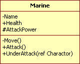
①상단: 클래스명
②중단:데이터(멤버변수)
☞데이터 접근자
-(Private): 외부에 노출이 되지 않는 한정자(정보은닉)
+(Public): 외부에 노출이 되는 한정자
#(Protected): 클래스나 상속된 클래스에서 접근가능한 한정자
③하단:행동양식(메서드)
클래스 다이어그램
◦ Association(연관) : Class로부터 생성된 Instance들 갂의 연관 관계
◦ Aggregation(집합) : 전체를 나타내는 Class와 이를 구성하는 부분 Class 집합연관 관
계 [썰매와 사슴] 생명주기 다름.
◦ Composition(합성) : 전체를 나타내는 Class와 이를 구성하는 부분 Class 복합연관 관
계 [자동차와 바퀴] 생명주기 동일.
◦ Generalization(상속) : 여러 Class가 가진 공통적인 특징을 추출한 공통적인 Class로의
일반화
◦ Realization(구현) : Interface와 실제 구현된 Class갂의 관계
◦ Dependency(의존) : Class가 다른 Class를 사용하는 의존관계, 의존>연관
템플릿이란?
프로그래밍에서 템플릿이란 자주 사용되는 기본 골격을 미리 제작해 놓은 파일들을 말합니다.
예를 들면, 여러분이 사이트에 웹폼(aspx)을 하나 추가할 경우, VS 도구에서 "웹폼(Webform)"을 선택하시고,
파일 명을 입력하여 기본적인 웹 폼을 만들지 않습니까? 그 "웹폼" 또한 템플릿입니다.
객체 지향 이란?
객체 지향 프로그래밍(Object-Oriented Programming: OPP)은 실제 세계가 객체(object)들로 구성되어 있는 것과 비슷하게 소프트웨어도 객체 단위로 작성하는 방법이다.
우리가 살고 있는 실제 세계에는 사람, 동물, 건물, 자동차, 시계, 토스터, 세탁기 등의 많은 객체가 존재한다.
객체들은 객체 나름대로의 고유한 기능을 수행하면서 다른 객체들과 상호 작용한다.
객체 지향 프로그래밍은 데이터와 절차를 하나의 덩어리(객체)로 묶어서 생각하는 방법이다.
즉, 객체 지향 프로그래밍이란 각각의 컴퓨터 부품을 만들고 그 부품들을 조립하여 컴퓨터를 만들 듯이 객체를 만들고 그 객체들을 조립하여 소프트웨어를 만드는 기법이다.
객체 지향 프로그래밍의 특징은 다음과 같다.
캡슐화(encapsulation) : 관련된 데이터와 알고리즘(코드)이 하나의 묶음으로 정리
상속 : 이미 작성된 클래스(부모 클래스)를 이어받아 새로운 클래스(자식 클래스)를 생성하며, 기존의 코드를 재사용할 수 있는 강력한 기법
다형성 : 객체가 취하는 동작이 상황에 따라 달라지는 것의 의미
객체 (Object)
객체는 객체 지향 기술의 핵심이다. 객체 안의 변수를 필드(field)라 부르고, 객체 안의 함수를 메소드(method)라 부른다.
하나의 객체는 필드와 메소드들 이루어진 소프트웨어의 묶음이다.
메시지 (Message) : 객체는 메시지를 통해 다른 객체와 통신하고 상호 작용한다. 대체로 매개변수(parameter)의 형태로 전달된다.
Car.setSpeed(100);
Car : 메시지를 받는 객체
setSpeed : 메시지의 이름
(100) : 메시지의 매개변수
Single Responsiblity Principle (단일 책임 원칙)
소프트웨어의 설계 부품(클래스, 함수 등)은 단 하나의 책임만을 가져야 한다.
여기서 책임이란, '기능' 정도의 의미로 해석하면 된다.
설계를 잘한 프로그램은 기본적으로 새로운 요구사항과 프로그램 변경에 영향을 받는 부분이 적다.
다시말해, 응집도는 높고 결합도는 낮은 프로그램을 뜻한다. 만약 한 클래스가 수행할 수 있는 기능, 즉 책임이 많아진다.
책임이 많아지면 클래스 내부의 함수끼리 강한 결합을 발생할 가능성이 높아진다.
이는 유지보수에 비용이 증가하게 되므로 따라서 책임을 분리시킬 필요가 있다.
Open-Closed Principle (개방-패쇄 원칙)
기존의 코드를 변경하지 않고(Closed) 기능을 수정하거나 추가할 수 있도록(Open) 설계해야 한다.
OCP에 만족하는 설계를 할 때 변경되는 것이 무엇인지에 초점을 맞춘다.
자주 변경되는 내용은 수정하기 쉽게 설계 하고, 변경되지 않아야 하는 것은 수정되는 내용에 영향을 받지 않게 하는 것이 포인트다.
이를 위해 자주 사용되는 문법이 인터페이스(Interface)이다.
Liskov Substitution Principle (리스코프 치환 원칙)
자식 클래스는 부모클래스에서 가능한 행위를 수행할 수 있어야 한다.
리스코프 치환 원칙은 MIT 컴퓨터 사이언스 교수인 리스코프가 제안한 설계 원칙이다.
부모 클래스와 자식 클래스 사이의 행위에는 일관성이 있어야 한다는 원칙이며, 이는 객체 지향 프로그래밍에서 부모 클래스의 인스턴스 대신 자식 클래스의 인스터스를 사용해도 문제가 없어야 한다는 것을 의미한다.
상속 관계에서는 일반화 관계(IS-A[is a kind of])가 성립해야 한다.
성립되지 않고 기능을 재사용하고 싶으면 위임을 이용해라.
"is a kind of" 관계가 성립되지 않을 때 상속을 사용하면 불필요한 속성이나 연산을 물러받게 된다. 어떤 클래스의 일부 기능만 재사용하고 싶을 경우에는 자신이 직접 기능을 실행하지 않고 다른 클래스의 객체가 기능을 실행하도록 위임하면 된다.
**우리는 상속에서 필요없는 기능을 그냥 가져오는 경우가 있다.
하지만 이는 재산을 받는 것이 아니라 빚을 상속하는 것과 같다.
그러므로 어떤 클래스의 일부 기능만 재사용 하려면, 위임을 사용해야 한다.
위임은 자신이 직접 기능을 실행하지 않고 다른 클래스의 객체가 기능을 실행하도록 위임하는 것이다.
따라서 일반화 관계는 클래스 사이의 관계지만 위임은 객체 사이의 관계이다.**
일반화 관계에 있다는 것은 일관성이 있다는 것이다.
따라서 리스코프 치환 원칙은 일반화 관계에 대해 묻는 것이라 할 수 있다.
-------------------------------------------------------------------------------------------------------------------------
이해를 돕기위해 도형을 예시를 들어보자.
도형 클래스와 사각형 클래스가 있고, 사각형 클래스는 도형 클래스의 상속을 받는다고 가정하자.
(1) 도형은 둘레를 가지고 있다.
(2) 도형은 넓이를 가지고 있다.
(3) 도형은 각을 가지고 있다.
일반화 관계(일관성인지 확인하는 방법은 단어를 교체해 보면 알 수 있다. (1) ~ (3)의 도형이란 단어 대신 사각형을 넣어보자.
(1) 사각형은 둘레를 가지고 있다.
(2) 사각형은 넓이를 가지고 있다.
(3) 사각형은 각을 가지고 있다.
(1) ~ (3) 모두 딱히 이상한 부분이 보이지 않는다. 따라서 도형과 사각형 사이에는 일관성이 있다고 할 수 있다.
여기서 원(Circle) 이라는 도형에 대해 생각해보자.
원 클래스 역시 도형 클래스의 상속을 받는다고 가정하자. 앞에서 언급한 (1) ~ (3)의 도형 단어 대신 원을 대입해보자.
(1) 원은 둘레를 가지고 있다.
(2) 원은 넓이를 가지고 있다.
(3) 원은 각을 가지고 있다.
문장을 읽어보면 (3)번 문장이 어색하다는 것을 알 수 있다.
따라서 도형 클래스는 LSP을 만족하지 않은 설계라 할 수 있다.
따라서 (3)문장에 대해서는 일반화 관계가 성립하도록 수정되어야 한다.
Interface Segregation Principle (인터페이스 분리 원칙)
이 원칙은 C ++, 자바 같은 인터페이스 기반 언어 환경에서 비롯되었다.
이들 언어에서 인터페이스란 클래스에서 어떤 기능을 ‘구현’ 하지 않고(명칭, 파라미터, 반환 타입을) ‘서술’ 만 한 코드 조각이다.
기능이 많은 인터페이스는 더 작게 응축시킨 조각으로 나누어야 한다는 발상이다.
인터페이스 사용부(consumer)는 ‘뚱뚱한’ 전체가 아니라 아주 작은 인터페이스 하나만 바라보면 된다.
인터페이스는 클래스에서 구현부가 빠졌다고 이해하면 편하다.
즉, 어떠한 객체가 이러이러한 프로퍼티 혹은 메소드를 가진다고 선언하는 것이다. 실질적인 구현은 이를 구현한다고 선언하는 클래스에 맡긴다.
Dependency Inversion Principle (의존 역전 원칙)
의존 관계를 맺을 때, 변화하기 쉬운것 보단 변화하기 어려운 것에 의존해야 한다는 원칙이다.
변화하기 쉬운것이란 구체화 된 클래스를 의미하고, 변화하기 어려운 것은 추상클래스나 인터페이스를 의미한다.
따라서 DIP를 만족한다는 것은 의존관계를 맺을 때, 구체적인 클래스보다 인터페이스나 추상 클래스와 관계를 맺는다는 것을 의미한다.
DIP를 만족하면 '의존성 주입' 이라는 기술로 변화에 유연한 설계를 할 수 있다.
다형성, 덕 타이핑(Duck Typing)
객체 지향의 중요한 특징 중 하나는 다형성인데, 이 때문에 전달 받은 객체가 내가 필요한 기능을 가진 객체인지 여부를 판별해야 하는 일이 발생할 수 있습니다.
이때, 원하는 기능들의 집합을 형(Type)이라고 하며, 형을 판별하는 방식은 언어마다 다소간의 차이가 있습니다. Java는 클래스, 또는 인터페이스를 통해 선언적으로 형을 표기할 수 있습니다.
그러나, JavaScript를 비롯한 동적 언어는 덕 타이핑(Duck Typing)이란 방법을 사용합니다.
덕 타이핑은 인자가 어떤 형인지 상관 없이 그 동작(Behavior)을 할 수 있는지를 확인하여 객체를 판단하는 방법입니다.
이 말은 “오리처럼 걷고, 오리처럼 소리 내면 오리로 간주한다(If it walks like a duck and quacks like a duck, I would call it a duck.)”는 말에서 유래했습니다.
즉,객체의 변수 및 메소드의 집합이 객체의 타입을 결정하는 것을 말한다.
덕 타이핑(duck typing)은 동적 타이핑의 한 종류로, 객체의 변수 및 메소드의 집합이 객체의 타입을 결정하는 것을 말한다.
클래스 상속이나 인터페이스 구현으로 타입을 구분하는 대신, 덕 타이핑은 객체가 어떤 타입에 걸맞은 변수와 메소드를 지니면 객체를 해당 타입에 속하는 것으로 간주한다.
declare 키워드 typescript
변수, 상수, 함수, 또는 클래스가 어딘가에 이미 선언되어 있음을 알린다.
즉, JS 코드로는 컴파일 되지 않고, TypeScript 컴파일러에게 타입 정보를 알리기만 한다.
타입의 경우 어차피 JS 코드로 컴파일 되지 않기 때문에 declare 키워드를 사용하지 않아도 된다.
declare 블록
앰비언트 컨텍스트(Ambient Context)로 정의되는 영역이다.
[
앰비어트(ambient)라는 말은 타입스크립트 컴파일러에 JS에 대한 구현 '환경'에 대한 정보를 준다라고 이해할 수 있다.
Ambient 선언은 유형 시스템에만 존재하며 런타임에 지워집니다. 즉. 앰비언트 선언은 다음과 같은 런타임 코드를 포함 할 수 없습니다.
declare module "mymod" {
function foo() { // error: An implementation cannot be declared in ambient contexts.
console.log("bar")
}
}
]
이 영역 안에서는 declare 키워드가 기본으로 붙는다. 즉 굳이 또 붙여줄 필요가 없다.
또한 이 영역 안에서는 선언 코드가 아닌 일반 코드를 작성할 수 없다.
declare namespace ABC : 원래대로라면 JS 일반 객체로 컴파일 되는 네임스페이스이겠지만, declare 키워드를 붙여줌으로써 JS 코드로 컴파일 되지 않게 한다.
이는 JS 모듈이 실제로 내보내는 것이 일반 객체인 경우에 그 객체의 타입 정보만을 알리기 위한 목적이다. 이 블록은 앰비언트 네임스페이스 혹은 내부 모듈이라고도 부른다.
declare module "ABC" : 앰비언트 모듈 선언(Ambient Module Declaration) 파일에 작성하는 블록으로, 앰비언트 모듈 혹은 외부 모듈이라고도 부른다.
이러한 앰비언트 모듈 선언 파일은 컴파일 대상에 포함되기만 한다면(예를 들어 Triple Slash 디렉티브를 사용한다든가 해서) 그곳에 선언된 모듈(여기서는 ABC)의 타입 정보를 참조할 수 있게 된다.
그리고 이 블록 역시 네임스페이스와 마찬가지로 export를 붙인 필드만 외부에서 참조가 가능하다.
declare global : 모듈 파일에서도 전역 참조가 가능한 선언 코드를 작성하고 싶을 때 사용한다.
전역 참조가 가능하다는 것은 해당 선언의 참조를 위해 별도의 불러오기 코드가 필요 없다는 뜻이다. 참고로 이 블록은 오로지 declare module 블록 안에서만 중첩이 가능하다.
d.ts 파일 (선언 코드만 담긴 파일)
구현부가 아닌 선언부만을 작성하는 용도의 파일을 의미한다.
JS 코드로 컴파일 되지 않는다.
skipLibCheck 프로퍼티가 false라면 다음 규칙들을 강제한다. (true여도 지키는 것이 좋다.)
선언 코드만 작성이 가능하고, 일반 코드는 작성할 수 없다.
따라서 최상위에 존재하는 변수, 상수, 함수, 클래스, 네임스페이스의 선언 앞에는 반드시 declare 혹은 export가 붙어야 한다.
이 파일에 작성되는 declare namespace 블록과 declare module 블록의 필드들에는 export 키워드가 기본으로 붙는다. 즉 굳이 또 붙여줄 필요가 없다.
typescript 고급타입!
Intersection(type & type) Types
Union(type | type) Types
Nullable(null가능) types - 보통 유니온 타입으로 만들어짐
문자열 리터럴 타입 - type slideSortParam = 'slick' | 'swiper';
인덱스 타입
interface Person {
name: string;
age: number;
}
let personProps: keyof Person; // 'name' | 'age'
Mapped type
type Keys = 'option1' | 'option2';
type Flags = { [K in Keys]: boolean };
-->결과
type Flags = {
option1: boolean;
option2: boolean;
}
타입 가드(타입 보호)
스코프 안에서의 타입을 보장하는 런타임 검사를 수행한다는 표현식
TypeScript는 JavaScript의 instanceof, typeof 연산자를 이해할 수 있습니다. ex) typeof x === 'string', arg instanceof Foo
즉 조건문에 typeof와 instanceof를 사용하면, TypeScript는 해당 조건문 블록 내에서는 해당 변수의 타입이 다르다는 것(=좁혀진 범위의 타입)을 이해한다는 것이죠.
in은 객체 내부에 특정 property가 존재하는지를 확인하는 연산자로 type guard로 활용할 수 있습니다 ex) 'x' in q
리터럴 Type Guard: 리터럴 값의 경우 === / == / !== / != 연산자를 사용해 타입을 구분할 수 있습니다. ex)type TriState = 'yes' | 'no' | 'unknown'; state == 'yes'
null과 undefined- Type Guard:변수 뒤에 !를 붙이는 것입니다. identifier!는 식별자의 타입에서 null과 undefined를 제거합니다.
사용자 정의 Type Guards: ex)
function isFoo(arg: any): arg is Foo {
return arg.foo !== undefined;
}
isFoo(arg)
c 입력출력버퍼 비우기
fflush 함수는 fflush( stdout ) 처럼 출력버퍼를 비우는 용도로만 사용
즉, 입력버퍼 비우는 코드:
while( getchar() != '\n' );
C언어의 토큰(token)과 구두점(punctuator)
*토큰(token) : C프로그램을 구성하는 기본 단위를 토큰이라 하며 토큰에는 예약어, 연산자, 구두점, 식별자, 상수 등이 있다.
*구두점 : 구두점은 토큰을 구분하기 위해 사용하는 기호로 [], (), {}, *, # 등이 있다.
|
구 두 점 |
명 칭 |
용 도 |
예 |
|
[ ] |
bracket [대괄호] |
배열의 크기 지정 |
char ch[10]; |
|
{ } |
brace [중괄호] |
블록 (제어문 ,함수) |
if(x>y) {} |
|
( ) |
parenthesis [소괄호] |
제어문 조건식 |
if(x>y) |
|
* |
asterisk [별표] |
포인터 변수 선언 |
char *name; |
|
, |
comma [쉼표] |
변수, 함수 선언 |
int x, y; |
|
; |
semicolon [세미콜론] |
문장의 끝 |
int num; |
|
= |
equal sign |
배열 초기화 |
int num[3] = {1, 2, 3} |
|
: |
colon [콜른] |
goto문에서 분기하는 레이블 |
AAA : |
|
... |
ellipsis [생략부호] |
함수원형에서 매개변수 생략 |
int printf( const char |
|
# |
sharp |
전처리기 |
#include |
void
c계열
void는 "없음"과 관련돼 있습니다.
void를 쓰는 상황을 크게 3가지로 나눌 수 있는데
위치 예제 의미
함수 인자에서 int foo(void) 함수 foo는 아무런 인자도 받지 않음
return 값에서 void foo(int) 함수 foo는 retrurn하는 값이 없음
포인터 타입 void *data data가 어떤 타입을 가리킬 건지 정해지지 않음. 아무 타입이나 가리킬 수 있지만 값에 접근할 수 없음(dereference 불가)
void *가 임의 변수의 번지를 대입받을 수 있다고 해서 void **가 임의 포인터의 번지를 대입받을 수 있는 것은 아니다.
요점을 정리하면 다음과 같습니다.
-void*(void포인터)형은 임의의 타입을 대입받을 수 있다.
-void*형은 포인터 연산을 할 수 없다.
-void*형이 제대로 쓰일려면 캐스팅을 해야한다.
-void형 함수는 리턴값이 없다는 의미다.
void가 함수 인자로 오는 경우 C계열 언어 간에 약간 차이가 있습니다.
C++에서 : void를 써도 되고 안 써도 됩니다.
C에서 : void를 명시해줘야 합니다.
C#에서 : 쓰면 안 됩니다(에러)
자바스크립트
void는 단항 undefined 연산자입니다.
피연산자로 무엇을 지정하든간에 연산의 결과는 undefined 값이 됩니다.
void 연산자는 주어진 표현식을 평가하고 undefined를 반환합니다.
오직 undefined 원시값을 얻기 위해 void 0 또는 void(0)처럼 사용하는 경우도 볼 수 있습니다.
선언/정의
선언은.. 컴파일러에게 어떤 대상의 이름을 알려주는 행위입니다. 영어로는 declaration 입니다.
정의는.. 컴파일러에게 어떤 대상의 실제 내용을 알려주는 행위입니다. 영어로는 definition입니다.
선언과 정의를 구분하는 한가지 기준은 memory address binding의 유무를 기준으로 구분합니다.
즉, 어떤 대상의 이름에 대해 그에 대응하는 메모리 상의 주소가 정해진다면 그것은 정의이며, 그렇지 않고 이름만 알려준다면 그것은 선언입니다.
다음의 예를 살펴보죠.
1) int x;
x라는 이름의 변수를 선언했습니다. 이는 x라는 변수의 이름과 함께 이 변수가 위치할 메모리 역시 할당할 필요가 있으므로 변수를 선언함과 동시에 변수를 정의한 경우가 되겠습니다.
이 예에서 알 수 있듯이, 대부분의 변수 선언은 정의와 함께 이루어집니다.
2) extern int x;
x라는 이름의 외부 변수를 선언했습니다. 이때, 외부 변수는 다른 모듈에서 정의된 변수를 이름만 임포트해서 사용하는 것으로 이 문장에서 변수를 위한 메모리 할당은 일어나지 않으며,
다른 모듈에서 메모리가 할당된 변수의 이름만 사용할 것을 선언한 것입니다. 이는 변수 선언이지만 정의는 일어나지 않고 선언만 한 경우가 되겠습니다.
3) int x();
함수의 프로토타입 선언입니다. 프로토타입 선언은 함수의 이름만 컴파일러에게 알려주는 행위로 실제로 함수가 수행할 내용이 어디에 들어가 있는지 컴파일러는 알지 못합니다.
나중에 링크 과정에서 실제로 이 함수가 수행할 내용이 들어있는 메모리상의 주소에 바인딩되게 됩니다. 즉, 실제 주소 바인딩이 일어나지 않으므로 이는 선언입니다.
4) int x() { return 0; }
함수의 본체를 정의했습니다. 이는 컴파일러가 실제로 함수가 수행할 내용을 메모리 어딘가에 저장하게 하는 문장입니다.
즉, 함수를 호출했을 때 메모리에 저장된 수행 내용을 찾아 점프해야 하므로 x라는 이름에 대해 그에 대응하는 주소가 정해집니다. 선언과 동시에 정의가 이루어진 예 입니다.
5) struct x;
구조체의 이름만 선언했습니다. 구조체의 내용에 대한 언급없이 이름만 컴파일러에게 알려주는 행위로 선언입니다.
6) struct x { int i; };
구조체의 내용을 정의했습니다. 구조체가 구조체 변수로 인스턴스화 할때 어떻게 메모리가 배치될 지를 알려주는 문장으로 선언과 동시에 정의하는 문장입니다.
7) typedef int INT;
타입 이름만 선언한 것으로 당연히 정의 없는 선언입니다. 타입 이름 자체가 메모리에 바인딩 될 수는 없습니다.
선언/정의의 구분은 메모리 배치의 유무를 보시면 됩니다
값(value)
값(value)이란 프로그램에서 어떤 변수나 데이터 공간에 할당되어 있는 수치나 정보를 말한다.
영어로 밸류(value)라고 한다.
값은 더 이상 평가될 수 없는 하나의 식이다. 한 형(type)의 멤버들은 그 형의 값들이다.
예를 들어, 식 "1+2"는 표현 "3"으로 축약될 수 있기 때문에 값이 아니다. "3"은 더 이상 축약될 수 없으므로 하나의 값이다.
포인터도 값으로 주소값이 들어감!!
포인터(Pointer)
C언어는 저급 언어(low-level language)의 특성을 지닌다고 이야기하게 만든 장본인이 포인터입니다.
왜냐하면 포인터를 이용하면 메모리에 직접 접근이 가능하기 때문입니다.
역참조 연산자(*)
역참조 연산자 *는 포인터 앞에 붙입니다.
printf("%d\n", *numPtr);
다음과 같이 numPtr 앞에 *를 붙이면 numPtr에 저장된 메모리 주소로 가서 값을 가져옵니다.
즉, 포인터는 변수의 주소만 가리키며 역참조는 주소에 접근하여 값을 가져옵니다.
*포인터
주소에 접근하여 값을 가져옴
*포인터 = 값;
메모리 주소에 접근하여 값을 저장
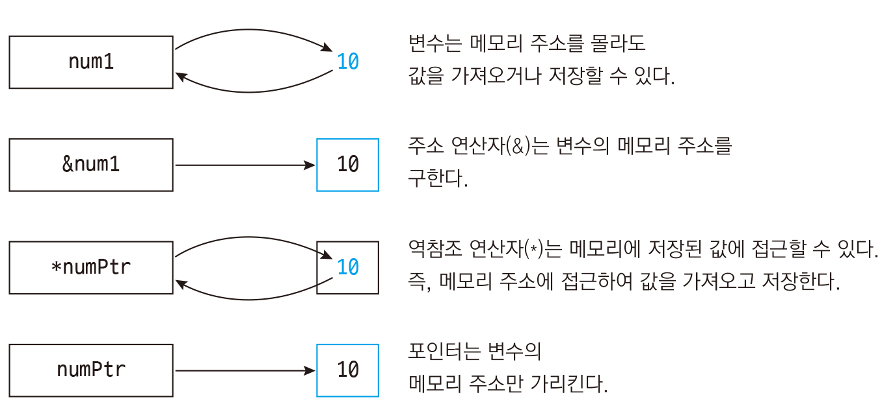
포인터 상수 와 포인터 변수
포인터는 가리키는 값의 메모리 주소값을 가진다.
포인터는 크게 포인터 상수와 포인터 변수로 나눈다.
포인터 상수에는 문자열 상수, 배열 이름, 함수 이름이 여기에 해당된다.
포인터 상수는 포인터 변수와 다르게 저장된 값을 변경할 수 없다. (실행시 주소값이 자동으로 저장,상수의특징)
변경하고 싶은면 포인터 상수를 포인터 변수에 저장(대입)하고, 포인터 변수를 변경하면 된다.
char a[]는 char *a 같지않을까???
답은 전혀 다르다. 포인터 상수와 포인터 변수의 차이이다.
char a[6]과 같은 선언은 문자 여섯 개를 저장할 수 있는 공간을 요청하고,
그 결과 "a":포인터 상수 라는 이름이 이공간을 대표하게 된다.
반면 포인터 선언 char *p는 포인터를 저장할 수 있는 곤간을 요구하고 이 위치는 "p":포인터 변수 라고 이름이 지어집니다.
이 포인터는 이제 어떤 곳도 가리킬 수 있습니다.
정확히 말해 어떤 문자나, 문자로 이루어진 배열의 한 요소를 가리킬 수도 있으며, 아무것도 가리키지 않을수도 있습니다.
char a[] = "hello";
char *p = "hello";

char*, const char*, char* const
%%% const 는 변수를 상수화 시켜주는 키워드임!!!
char* v;(포인터 변수)
v는 문자, 문자열이 저장된 메모리의 첫주소를 저장할 수 있는 포인터 변수.
char* v = "문자열상수1"; 초기화 했어도 코드중에 언제든 변경가능.
v="문자열상수2"; v="문자열상수3"; 등등. 모두 가능.
const char* v;(상수 포인터)
금지되는것 : v 주소 메모리의 내용 변경불가.ex)문자열
즉, v는 "상수문자열" 의 포인트변수라는 의미.
한편, const 의 대상이 v 자체가 아니므로 v가 가리키는 주소는 변경가능함.
예를들면,
const char* v = "난 문자열 상수1이다"; 로 초기화 했어도, 코드상에서 아래 처럼 다른 문자열의 메모리 주소를 대입가능하다는 말.
v = "난 문자열 상수2임."; 가능함. v에 다른 문자열주소는 대입가능.
*v = "난 문자열 상수2임."; 허용안됨. v 주소메모리의 값을 변경 의도한것인데, const char* v; 의 정의가 이런거 못하게 하는거임.
char* const v;, char a[];(포인터 상수)
금지되는것 : 초기화 할때 한번 지정된 문자열 메모리 주소 변경못함.
예를들면,
char* const v = "난 문자열 상수1이다."; 로 초기화 했는데,
코드중에서 v="난 문자열 상수2임."; 으로 하는것 허용안됨.
바인딩(binding)
[일반] 이름을 어떤 속성과 연결짓는 과정을 말함
[전산] 변수,프로시저,상수 등의 이름(식별자)을 속성(값)과 연관(association)짓는 것
ex) 추상적 구문 단위가 여러 속성 중 하나 또는 일부를 연관짓는 것
. 상수 변수가 실제 상수 값에 바인딩되는 것
. 변수가 메모리에 적재될 때 기억공간 셀에 바인딩되는 것
. 연산 기호(`*`등)가 실제 연산(`곱셈`등)에 바인딩되는 것
. 함수 호출과 호출된 함수를 연관짓는 메커니즘
. 특정 이벤트에 특정 수행 동작을 연결(바인딩)하는 등
[------바인딩(binding)이란?-----]
일반적인 의미에서, 속성과 개체 사이 또는 연산과 기호 사이와 같은 연관(Association)이다.
바인딩이 일어나는 시간을 바인딩 시간이라고 부른다. 바인딩과 바인딩 시간은 프로그래밍 언어 의미론에서 매우 중요한 개념이다.
바인딩은 언어 설계 시간, 언어 구현시간, 컴파일 시간, 링크 시간, 적재 시간, 또는 실행 시간에 일어날 수 있다.
이름을 속성에 연관(bind)시키는 과정이 바인딩이다.
[------바인딩 타임이란?-----]
바인딩은 프로그램의 각종 변수값들이 실제 값으로 묶여 버리는 것으로,
개념적으로는 설계, 코딩, 컴파일, 실행, 번역, 언어의 구현, 정의 등 프로그래밍 전 과정에 걸쳐 일어나나 일반적으로는 컴파일 시간에 일어나는 정적 바인딩과,
실행 시간에 일어나는 동적바인딩을 의미한다.
[ 정적 바인딩 ] : 실행 시간(run time) 전에 일어나고, 실행 중 변하지 않는 상태로 유지되는 바인딩.
ex) int a; // integer 타입을 이름 'a'에 정적으로 바인딩.
[ 동적 바인딩 ] : 실행 시간(run time) 중에 일어나거나 프로그램 실행 과정에서 변경되는 바인딩. (즉 정적 시간대에 바인딩되었어도.. 실행하다가 바뀐다면 동적 바인딩이다.)
ex) ptr = new int; // 할당한 기억 장소를 y에 동적으로 바인딩.
[------할당-----]
기억 장소 할당 : 변수에 메모리 공간을 바인딩하는 과정.
생명 주기 , 수명 (변수가 특정 메모리에 바인딩 되어 있는 시간). 변수의 수명은 메모리 공간에 바인딩 될 때 시작되어.. (생성) 그것이 회수될 때 끝난다.
ㅡ 정적 할당 ㅡ
변수에 메모리 공간이 정적으로 할당되는 것.
한번 할당되면 프로그램이 종료될 때 까지 할당상태가 유지된다. (data영역)
ㅡ 스택 기반 할당 ㅡ
자동 할당(Automatic Allocation)이라고도 함.
변수의 타입은 정적으로 할당되지만.. 메모리 공간을 실행 중에 할당.
스택 기반 할당이 이루어지는 메모리 공간은 스택.
ㅡ 동적 할당 ㅡ
명시적인 명령어에 의해 실행되는 할당.
동적할당이 이루어지는 메모리 공간은 힙(heap)
동적으로 할당된 영역은 포인터나 참조변수를 통해서 참조가능.
정적 바인딩(Static binding) vs. 동적 바인딩(Dynamic binding)
* Binding
- 프로그램 구성 요소의 성격을 결정해주는 것
ex ) 변수의 데이터 타입이 무엇인지 정해지는 것
종류 | 정적 바인딩(Static binding) |
동적 바인딩(Dynamic binding) |
정의 | 컴파일 시간에 성격이 결정되는 것 |
실행 시간(runtime)에 성격이 결정되는 것 |
예시 | C언어 컴파일 시간에 변수의 데이터 타입이 결정 | Python(Interpreter 언어) 런타임에 값에 따라 변수의 데이터 타입이 결정 |
장단점 | 컴파일 시간에 많은 정보가 결정되므로 실행 효율↑ | 런타임에 자유롭게 성격이 바뀌므로 적응성↑ |
함수의 바인딩
함수를 만들어 컴파일을 하면 각각의 코드가 메모리 어딘가에 저장된다.
그리고 함수를 호출하는 부분에는 그 함수가 저장된 메모리 번지수(주소값)이 저장된다.
프로그램 실행 → 함수 호출 → 함수가 저장된 주소로 점프 → 함수 실행 → 원래 위치
위 과정에서 함수를 호출하는 부분에 함수가 위치한 메모리 번지로 연결시켜 주는 것을 바인딩(Binding) 이라고 한다.
- 함수를 바인딩하는 2가지 방법
(1) 정적 바인딩 (일반 함수)
컴파일 시간에 호출될 함수로 점프할 주소가 결정되어 바인딩 되는 것.
(2) 동적 바인딩 (가상 함수)
실행 파일을 만들 때 바인딩 되지 않고 보류 상태 둔다.
점프할 메모리 번지를 저장하기 위한 메모리 공간(4 byte)을 가지고 있다가 런타임에 결정.
=> 단점 : 타입 체킹으로 인한 수행 속도 저하 / 메모리 공간 낭비
=> 가급적 정적 바인딩 사용
?? 2 가지의 단점이 있음에도 불구하고 동적 바인딩을 하는 이유 ??
- 어떤 포인터에 의해 접근되었는 지에 상관없이 참조된 인스턴스의 실제 클래스형에 따라 재정의된 함수 호출이 가능!
자바스크립트 런타임(런타임 환경)
런타임은 특정 언어로 만든 프로그램들을 실행할 수 있는 환경을 뜻합니다.
ex)노드는 자바스크립트 런타임입니다. 따라서 노드는 자바스크립트 프로그램을 컴퓨터에서 실행할 수 있게 해줍니다.
Node.jsⓇ는 크롬 V8 자바스크립트 엔진으로 빌드된 자바스크립트 런타임입니다. Node.js는 이벤트 기반, 논블로킹 I/O 모델을 사용해 가볍고 효율적입니다.
Java 언어가 모든 OS 운영체제에서 Virtual Machine 환경 안에서 Runtime 이 구동 되듯이 Node.JS 는 웹브라우저에 종속적인 자바스크립트에서 외부에서 실행할 수 있는 Runtime 환경을 Chrome V8 엔진을 제공하여 여러 OS 환경에서 실행할 수 있는 환경을 제공하게 됩니다.
이것을 Node.JS 라고 정의할 수 있습니다.
malloc
malloc : memory allocate
calloc : clear allocate
ralloc : re allocate
c언어를 제대로 공부한 개발자들은 배열을 선언하거나 메모리를 할당받을 때 8의 배수, 16의 배수, 32의 배수 등으로 메모리를 관리하고 선언하는 변수도 메모리를 정렬하여 선언하고 할당 받아야 한다고 배우는 경우가 많았다.(cpu가 한번에 가지고올수 있는 메모리)
하지만 메모리와 포인터 그리고 운영체제에 대한 개념이 제대로 정립되지 않은 개발자들은 배열이나 객체를 선언하고 내부에 변수, 구조체 등을 선언할 때 10, 20, 100, 200 과 같이 십진수 기준으로 아무생각없이(?) 선언하고 메모리를 할당 받는 경우가 많다. (사실 그래도 문제가 발생하지는 않는다.)
하지만 프로그램이 내부적으로 동작할 때 변수의 크기에 따라 정렬하여 선언하고 메모리 할당을 8의 배수, 16의 배수, 32의 배수 크기로 할당받았을 때 가장 최적화된 상태로 메모리를 사용한다.
당연히 프로그램의 동작과정에서 발생하는 오버헤드도 적을 수 밖에 없다. 물론 하드웨어 성능이 크게 발전한 요즘 체감속도에서는 별차이를 느끼지 못할 수 있으나 CPU의 클럭이 2G~3G hz에 달하는 상황에서 해당 프로그램이 소비하는 CPU 사이클 수의 차이는 무척 큰 것이 사실이다.
눈에 보이는 속도의 차이가 작다해서 결코 비슷한 속도는 아닌 것이다.
데이터, 빅데이터
데이터는 사실을 나타내는 수치라고 할 수 있습니다.
예를 들면, 오늘의 날씨 정보에서 오늘 아침 기온, 습도, 날씨 등등 각각의 수치들은 데이터가 됩니다.
하지만 데이터 자체로는 큰 의미가 없습니다.
컴퓨터 공학에서는 데이터를 가공( 처리 : Processing )하여 정보를 만듭니다.
예를 들면 날씨를 나타내는 데이터들 ( 기온, 습도, 풍속, 위성사진 등 )은 기상대나 백엽상 등에서 측정 장비로 관측됩니다.
이 데이터는 그저 사실을 나타 낼 뿐이죠. 이제 이 데이터들을 처리하여 정보를 만듭니다. 기상대에서 측정 된 각각의 데이터들을 바탕으로 내일의 날씨를 예보하게 되죠.
데이터를 처리하여 나온 결과를 "정보"라고 하는데, 정보란 간략하게 정의하자면 "사용자의 의사결정에 도움이 될 만한 잘 정리 된 데이터들." 이라고 할 수 있습니다.
현실 세계에서 보자면 구름 사진( 데이터 )이 지구과학 교과서에 사용되어 교육용으로 이용( 정보 ) 될 수도 있고, 사진 작품전에 출품( 정보 ) 될 수도 있습니다.
컴퓨터는 이런 데이터를 입력 받아서 정보로 만들어 주는 역할을 하는 기계라고 할 수 있습니다.
데이터는 그냥 사실을 나타내는 수치일 뿐이고, 정보는 사용자의 의사결정에 도움을 주는 가공 된 데이터들의 집합이다.
빅데이터란 단순히 많은 양의 데이터를 의미하는 것은 아닙니다.
빅데이터는 기존에 주로 사용되던 문서의 형태로만 이루어진 것이 아니라 동영상, 음성, 사진, 위치 정보 등 여러 형태의 정보로 이루어 진 것을 의미하며,
많은 양의 정보들을 통해서 의미 있는 결과를 이끌어낼 수 있습니다.
독감 환자의 발생 빈도 확인을 통한 독감 조기 경보 시스템 구축, 구매 방식 분석을 통한 시장 상황 예측, 기후 데이터의 수집 및 분석을 통한 기후 예보 등이 있으며, 빅데이터의 활용 범위는 점차 확대되고 있습니다.
이처럼 빅데이터의 활용은 우리의 삶에 많은 도움을 주기도 하지만, 반대로 개인 정보 유출을 야기한다는 문제점이 있습니다.
인터넷 상에 게재된 개인적인 사진, 동영상, 대화 글 등 사생활과 관련된 모든 것들이 빅데이터로서 수집되고 분석되기 때문입니다.
즉, 우리도 모르는 사이에 유출된 개인 정보가 별다른 문제의식 없이 타인에게 자료로 수집되고 이용될 수 있습니다.
따라서 이와 관련하여 개인 정보 보호를 위한 기술적 시스템의 개발과 정부차원의 제도 보완이 필요한 시점이라 할 수 있습니다.
컴퓨터 동작의 기본 개념
컴퓨터는 읽고(Read) 수정하고(Modify) 쓰는(Write) 기기이다.
따라서 읽고 쓰기 위한 저장소(Storage)와 수정(연산)하기 위한 ALU(Arithmatic Logic Unit: 산술연산장치)를 가진다.
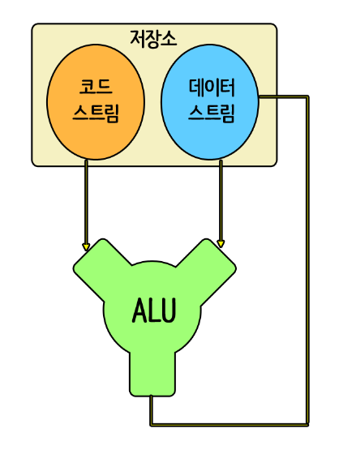
코드스트림(명령어)이 ALU에 입력되면, ALU는 저장소에 있는 데이터스트림을 가져와서 결과스트림을 출력한다. (코드스트림 + 데이터스트림 = 결과스트림)
이 과정(데이터를 읽는 과정)을 빠르게 하기 위해 ALU 가까이에 초고속 저장소인 (반면 공간은 작은) 레지스터를 둔다.
그리고 레지스터의 작은 공간을 보완하기 위해 메인메모리(RAM:Random Access Memory)를 사용한다.

실제 연산하는 과정을 정리해보면 다음과 같다.
1. 메인메모리에서 메모리 버스를 통해 소스 레지스터로 데이터 전송
2. 소스 레지스터의 데이터는 ALU의 입력포트를 통해 ALU로 입력
3. ALU 데이터 연산
4. 연산된 데이터는 ALU의 출력포트를 통해 목적 레지스터에 저장
5. 목적 레지스터의 데이터를 메인메모리로 전송
코드 스트림
코드 스트림은 여러 명령어의 순차적 나열이다. 그리고 이러한 명령어의 모임을 프로그램이라 한다.
프로그램은 데이터의 연산뿐만 아니라 메모리와 레지스터 사이의 데이터 전송도 담당하기 때문에 두 종류의 명령어(데이터 연산, 데이터 전송)를 가진다.
산술 명령어(연산 관련) : add(덧셈), sub(뺄셈), mul(곱셈), div(나눗셈)
산술 명령어 포맷: 명령어, 소스1, 소스2, 목적
ex) add, A, B, C - 레지스터 A와 B의 값을 더해 레지스터 C에 저장
메모리 접근 명령어: load(메모리에서 레지스터로 데이터 전송), store(레지스터에서 메모리로 데이터 전송)
메모리 접근 명령어 포맷: 명령어, 소스, 목적
ex) load #12, A - 메모리셀 #12의 값을 레지스터 A로 전송, store C, #14 - 레지스터 C의 값을 메모리셀 #14로 전송
현대의 메모리는 상당히 복잡하기 때문에 위와 같이 실제 메모리의 주소를 입력하는 절대 주소지정(absolute addressing)은 사실상 불가능하다.
그리고 컴퓨터는 메인메모리를 연속된 영역인 세그먼트로 나눠서 저장하기 때문에, 기본 주소를 기준으로 접근하려는 메모리의 거리(오프셋)를 지정하여 상대적으로 접근할 수 있다.
(상대 주소 지정: 기본 주소 + 오프셋)
ex) load #(D+108), A - 레지스터 D의 값(기본주소)+108(오프셋)에 위치한 메모리의 값을 레지스터 A에 전송
클럭
클럭은 CPU의 속도를 나타내는 단위로, 1초당 CPU 내부에서 작업이 몇 단계로 처리되는 지를 측정해 주파수인 헤르츠(Hz)로 표시한다.
클럭 속도가 높을 수록 작업 처리량이 많아지고 빨라지기 때문에 클럭이 곧 성능이라고 해도 과언이 아니다.
1. 클럭이란?
클럭(Clock)은 오직 전기가 통하는 디지털 장치에만 있다. 바꿔 말해 디지털 장치의 부품들을 움직이게 하는 전기적 신호를 클럭이라고 한다.
컴퓨터에 전원을 넣으면 전류가 흐르는 상태(ON)와 흐리지 않는 상태(OFF)가 반복된다. 바로 ON/OFF 형태로 반복하는 전류의 흐름에 의해 PC를 구성하는 부품이
작동한다.
이런 전류의 흐름을 클럭 주파수(Clock Frequency), 또는 줄여서 클럭(Clock)이라고 한다.메인보드나 그래픽 카드, CPU, 메모리 등 모두 디지털 장치이므로 제대로
작동하려면 클럭이 있어야 한다.
주파수(Frequency)로 표시되는 클럭은 위아래로 변하는 진폭을 가진 진동이 연속적으로 발생한다. 이 진폭이 발생하는 동안 PC는 0이나 1로 이뤄진 비트 단위 신호를 각 장치에
전달한다.
하나의 클럭 주기가 지나면 반드시 1개의 비트가 옮겨진다. 1초에 1번 위아래로 진폭이 변하는 사이 0이나 1이란 신호가 장치에서 다른 장치로 옮겨진다.
클럭 단위는 ‘Hz’를 사용하고 이를 클럭 속도(Clock Speed)라고 한다. CPU, 그래픽 카드, 메인보드, 메모리 같은 부품에는 모두 클럭 속도가 표시되어 있다.
이것은 각 부품의 성능을 확인해 주는 척도이기도 하다.
2. 클럭은 어떻게 만들어질까?
클럭(Clock)은 클럭 발진기에서 만들어 진다. 클럭 발진기는 메인보드와 그래픽 카드 두 곳에 있다.
메인보드와 그래픽 카드에 있는 클럭 발진기는 일정한 클럭을 만들어 각 부품끼리 신호를 주고받게 한다.
메인보드에 있는 클럭 발진기에서 생산된 클럭은 메인보드에 장착되는 모든 부품에 골고를 영향을 준다.
클럭 발진기에서 나온 클럭은 PC 부품에 똑 같이 적용되지 않는다.PC를 구성하는 부품의 속도에 클럭 속도를 높이거나 낮춰 공급한다.
이 클럭 속도를 낮추는 것은 클럭 발진기 옆에 같이 붙어 있는 클럭 디바이더(Clock Devider, 클럭분배기)에 의해 조절된다.
클럭 발진기와 클럭 디바이더에 의해 조절되는 클럭 속도는 즉 부품의 작동 속도를 결정하는 것은 메인보드에 있는 2개의 커다란 칩의 역할이다. 이를 칩셋이라 한다.
3. 클럭 속도는 빠르면 빠를수록 좋은가?
PC를 구성하는 부품의 성능을 말할 때 부품의 작동 속도를 말한다.
작동 속도는 대부분 클럭으로 표시한다. MHz나 GHz의 단위를 사용하는데 클럭이 높을수록 빠른 성능이 좋은 제품이라고 말할 수 있다.
하지만 클럭 속도가 빠른 제품이 무조건 좋은 것은 아니다.PC는 CPU, 메인보드, 메모리, 하드디스크, 그래픽 카드, 랜 카드, 사운드 카드, 등등 여러 개의 제품으로 구성되어 조화롭게
동작해야 하기 때문에 어느 한 부품만 빠르다고 되는 것은 아니다.
부품끼리 서로 연결된 통로가 있고 이 통로를 흐르는 데이터가 원활하게 소통이 되어 야 한다. 그러려면 부품을 동작시키는 클럭 속도가 조화를 이루어야 한다.
장치 드라이버란
장치 드라이버는 ‘장치를 구동하는 프로그램’으로 줄여서 드라이버라고도 부른다.
드라이버는 하드웨어와 소프트웨어(운영체제) 중간에 위치하며, 프로그램 중에서 가장 저수준 레벨에서 처리하는 프로그램으로 볼 수 있다.
일반적으로 운영체제에서 많은 부분이 드라이버로 되어 있다고 봐도 될 것이다.
드라이버는 기본적으로 하드웨어를 제어하고 운영하는 프로그램으로 볼 수 있다.
하드웨어 자원인 메모리, I/O, 인터럽트, DMA를 처리해 사용자가 장치를 사용할 수 있게 한다.
그리고 일반적인 애플리케이션에서는 할 수 없는 일이나 운영체제의 기능을 확장할 때도 드라이버는 필요하다.
예를 들면 바이러스 백신, 보안을 위한 파일 암복호화나 네트워크 패킷 필터링을 하기 위해 드라이버를 이용하기도 한다.
드라이버는 운영체제와 밀접하게 연관되어 작동하기 때문에 운영체제에 따라 다르게 만들어진다.
즉, 윈도우·리눅스·Mac OS마다 드라이버를 새로 만들어야 한다. 윈도우에서도 윈도우 9x 계열(95·98·ME)과 윈도우 NT 계열(NT·2000·XP)은 드라이버를 다르게 만들어야
한다.
따라서 장치를 만드는 하드웨어 업체에서는 실제 소비자를 위해 모든 운영체제에 드라이버를 지원해야 하다보니 개발기간이 길어질 수밖에 없어진다.
장치 드라이버는 기본적으로 하드웨어와 운영체제 사이를 연결하는 통로라고 할 수 있다.
따라서 장치 드라이버가 없으면 하드웨어를 장착하더라도 이를 사용할 수 없다.
PC용 운영체제로 가장 많이 쓰이는 윈도우(Windows)는 많은 장치 드라이버를 기본 내장하고 있으며, 하드웨어 추가 시 이를 자동으로 인식하여 알맞은 장치 드라이버를 선택, 곧장
사용을 할 수 있게 하는 플러그 앤 플레이(plug & play)기능을 갖추고 있어서 상당수의 하드웨어는 꽂은 후 잠시 기다리면 바로 사용이 가능하다.
다만, 운영체제가 아무리 많은 장치 드라이버를 내장하고 있다 해도 해당 운영체제가 출시된 시점 이후에 등장한 신형 하드웨어의 경우는 반드시 하드웨어 제조사에서 제공하는 장치 드라이버를
추가로 설치해야 사용이 가능한 경우가 많다.
이러한 추가 드라이버는 해당 하드웨어를 구매하면 CD나 DVD 형태로 함께 들어있는 경우가 많으며, 경우에 따라서는 인터넷 홈페이지를 통해 파일을 내려 받는 형식으로 제공되기도 한다.
랜 카드 = NIC = 이더넷 카드
컴퓨터가 통신을 하기 위해서는 IP라는 것이 있어야 하는 것은 누구나 알고 있는 사실입니다
그렇다면 그 IP는 컴퓨터의 어디에 할당되는 것일까요??
결론적으로, IP주소는 운영체제의 "이더넷드라이브"에 부여하는 것입니다
즉, 컴퓨터가 통신을 하기 위해서는 "랜카드(Lan Card)"라는 것이 있어야하며 랜카드는 "NIC(Network Interface Card)"이라고하는 "네트워크 인터페이스카드"이며,
이 NIC는 "이더넷카드(Ethernet Card)"라고 하는 것이 보다 정확한 표현입니다.
그리고 이더넷카드가 컴퓨터에서 사용되기 위해서는 "이더넷드라이버"라는 일종의 소프트웨어가 운영체제에 설치되어 있어야 합니다.
결론적으로 IP주소는 "이더넷 드라이버"에 부여하는 것입니다
유휴(idle)상태
자료연결이 동작 상태에 있으나 현재는 어떠한 제어나 정보의 전송도 없는 상태를 말합니다.(즉 대기상태)
반도체
진공관 → 트랜지스터(TR) → 집적회로(IC)
※ IC (Integrated Circuit)
트랜지스터나 다이오드 등 개개의 반도체를 하나씩 따로 사용하지 않고, 몇천 개 몇만 개로 모아서 한 개로 된 덩어리를 말합니다.
실리콘의 평면상에 차곡차곡 필름을 인화한 것처럼 쌓아 놓은 것인데요, 이것을 '모아서 쌓는다' 즉, 집적한다고 한다고 하여 IC라는 이름이 붙게 된 것입니다.
다이오드
다이오드를 사용하는 이유는 많지만 가장 대표적인 케이스는 역전압을 막기 위해 사용한다.
예를 들어, 회로도를 구성하였다고 가정하고 그 회로도에 저항, 트랜지스터, 콘덴서 등을 사용하여 회로도를 구성했다.
그러나 실수로 전원을 반대로 입력했다고 가정해보면 부품이 터지거나 감전, 화재의 위험성이 다분하다.
다이오드의 정류작용을 활용하면 이와 같은 사고를 예방할 수 있고 역기전력을 막기 위해서도 사용한다.
역기전력을 전류의 순방향이 아닌 역방향으로 생기는 전력이다.
이 역기전력을 막기 위해 회로 구성에 필요한 부품이 다이오드다.
가상메모리
일반적으로 한 시스템의 여러 프로세스들은 CPU와 메인 메모리를 공유한다.
CPU를 공유하는 부분에 대해서는 일반적으로 순서를 기다리느라 단지 느려질 뿐, 심각한 오류는 발생하지 않는다.
그러나 프로세스들이 존재하는 메모리가 여유가 없이 지나치게 많은 요구에 의해 오염될 경우,프로그램의 논리와 무관하게 오류가 난다.
이를 방지하기 위한 기술이 바로 가상메모리이다.
이런 가상메모리 기술은 무엇보다도 사용자가 신경 쓸 필요 없이 OS 측면에서 자동으로 작동한다는 점,
또한 사용자가 프로세스를 올리고 내림에 있어서 역시 사용자가 신경 쓸 필요 없이 OS의 가상메모리를 활용하여 자동으로 메모리 관리를 위임할 수 있다는 점이 가장 큰 성공 요인일 것이다.
가상 메모리의 주요한 기능은 다음 3가지로 요약할 수 있다.
-주기억장치의 효율적 관리 : 주기억장치를 하드디스크에 대한 캐시로 설정하여, 당장 사용하는 영역만 유지하고 쓰지 않는 데이터는 하드디스크로 옮긴 뒤,
필요할 때만 램에 데이터를 불러와 올리고 다시 사용하지 않으면 하드디스크로 내림으로써 램을 효과적으로 관리한다.
-메모리 관리의 단순화 : 각 프로세스마다 가상메모리의 통일된 주소 공간을 배정할 수 있으므로 메모리 관리가 단순해진다.
-메모리 용량 및 안정성 보장 : 한정된 공간의 램이 아닌 거의 무한한 가상메모리 공간을 배정함으로써 프로세스들끼리 메모리 침범이 일어날 여지를 크게 줄인다.
방식:하드디스크나 SSD 등의 보조기억장치에 주기억장치, 즉 램의 내용 일부를 전달해 쓰고 읽는 식이다. 가상메모리의 크기와 구조는 운영체제 및 응용 프로그램에 따라 다르다.
보조기억장치의 속도가 주기억장치인 RAM보다 매우 느리기 때문에 RAM 용량을 초과하는 데이터를 다뤄서 보조기억장치를 끌어다 쓰게 될 경우 시스템의 속도가 확연히 느려진다.
NVMe 방식을 쓰는 고급형 SSD의 데이터 전송 속도조차 가장 구세대 RAM인 DDR1 RAM 의 최고 전송속도인 1,600~3,200 MB/s수준에 불과하다.
요즘 대중화된 DDR4 RAM (2,400 MHz 기준)의 속도는 19,200 MB/s 이고, 추가 장착하는 RAM 만큼 대역폭이 또 증가하기 때문에,
평소에 이러한 속도로 작업을 하다가 보조기억장치를 끌어다 쓰게 되면 시스템의 전체적인 성능이 엄청나게 저하된다.
x64 Windows 기준 할당되는 프로세스마다 할당되는 가상 메모리의 영역은 4GB입니다.
이 중 절반인 2GB는 OS(Kernel)에 의해 사용되고 프로세스가 온전히 사용하는 영역은 사실 2GB입니다.
이 2GB라는 영역에 C++에서 사용하는 메모리 구조(Code, Data, BSS, Heap, Stack)들이 전부 적재되게 됩니다.
페이징(Paging)과 세그멘테이션(Segmentation)비교
페이징(Paging)=가상메모리사용, 외부 단편화 해결, 내부 단편화 존재
보조기억장치를 이용한 가상메모리를 같은 크기의 블록으로 나눈 것을 페이지라고 하고 RAM을 페이지와 같은 크기로 나눈 것을 프레임이라고 할 때,
페이징 기법이란 사용하지 않는 프레임을 페이지에 옮기고, 필요한 메모리를 페이지 단위로 프레임에 옮기는 기법.
페이지와 프레임을 대응시키기 위해 page mapping과정이 필요해서 paging table을 만든다.
페이징 기법을 사용하면 연속적이지 않은 공간도 활용할 수 있기 때문에 외부 단편화 문제를 해결할 수 있다.
대신 페이지 단위에 알맞게 꽉채워 쓰는게 아니므로 내부 단편화 문제는 여전히 있다.
* 페이지 단위를 작게하면 내부 단편화 문제도 해결할 수 있겠지만 대신 page mapping 과정이 많아지므로 오히려 효율이 떨어질 수 있다.
- 논리(가상) 메모리는 페이지(Page)이라 불리는 고정 크기의 블록으로 나누어지고, 물리 메모리는 프레임(Frame)라 불리는 페이지과 같은 크기의 블록들로 나누어짐.
보조 메모리 역시 프레임과 같은 크기의 블록들로 나누어짐.
- 사용자는 하나의 주소를 지정(하드웨어의 의해 페이지 번호와 변위로 분할)
- 페이지 테이블에는 각 페이지 번호와 그에 해당하는 프레임의 시작 물리 주소를 저장
- 할당은 항상 프레임의 정수 배로 할당되는데, 이 때 프로세스가 페이지 경계와 일치하지 않는 크기의 메모리를 요구하게 되면 마지막 페이지 프레임은 전부 사용되지 않고 남아버리는 문제가 발생한다(내부 단편화)
세그먼테이션(Segmentation)=가상메모리사용, 내부 단편화 해결, 외부 단편화 존재
페이징기법에서 가상메모리를 같은 크기의 단위로 분할했지만 세그멘테이션기법에서는 가상메모리를 서로 크기가 다른 논리적 단위인 세그먼트로 분할해서 메모리를 할당하여 실제 메모리 주소로 변환을 하게 된다.
각 세그먼트는 연속적인 공간에 저장되어 있다.
세그먼트들의 크기가 다르기 때문에 미리 분할해 둘 수 없고 메모리에 적재될 때 빈 공간을 찾아 할당하는 기법이다.
마찬가지로 mapping을 위해 세그먼트 테이블이 필요하다.(각 세그먼트 항목별 세그먼트 시작주소와 세그먼트의 길이 정보를 가지고 있음)
프로세스가 필요한 메모리 만큼 할당해주기 때문에 내부단편화는 일어나지 않으나 여전히 중간에 프로세스가 메모리를 해제하면 생기는 구멍, 즉 외부 단편화 문제는 여전히 존재한다.
- 페이징에서처럼 논리 메모리와 물리 메모리를 같은 크기의 블록이 아닌, 서로 다른 크기의 논리적 단위인 세그먼트(Segment)로 분할
- 사용자가 두 개의 주소로 지정(세그먼트 번호 + 변위)
- 세그먼트 테이블에는 각 세그먼트의 기준(세그먼트의 시작 물리 주소)과 한계(세그먼트의 길이)를 저장
- 서로 다른 크기의 세그먼트들이 메모리에 적재되고 제거되는 일이 반복되다 보면, 자유 공간들이 많은 수의 작은 조각들로 나누어져 못 쓰게 될 수도 있다.(외부 단편화)
32비트 컴퓨터와 64비트 컴퓨터의 차이점
32bit 컴퓨터와 64 bit 컴퓨터의 레지스터
32bit 컴퓨터 cpu의 레지스터 처리값 32bit
64bit 컴퓨터 cpu의 레지스터 처리값 64bit
레지스터는 cpu가 사용하는 데이터를 담는 그릇이고 cpu는 레지스터를 이용해서 데이터를 처리합니다.
32비트 컴퓨터와 64비트 컴퓨터는 컴퓨터 설계부터 이렇게 이용하는 레지스터의 그릇의 값이 차이가 납니다.
그리고 이 그릇의 차이에 의해서 컴퓨터 앞에 32비트 64비트라는 수식어가 붙게 됩니다.
예전에 16비트 컴퓨터는 레지스터의 크기가 16비트겠죠.
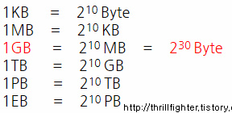
32bit컴퓨터는 왜 메모리를 4GB바이트 까지만 사용할까?
레지스터는 한번에 처리할 수 있는 용량이 32bit기 때문에, 한번에 표현가능한 수의 최대값이 2의 32승이 됩니다.
레지스터가 한번에 표현할 수 있는 값의 크기는 cpu가 한번에 인식하여 처리할 수 있는 주소 값의 범위가 됩니다.
2의 32승 4,294,967,296(외워 두시면 좋습니다.)
32bit 컴퓨터라 치면 표현할 수 있는 주소의 한계점이 약 42억개 정도이고 50억이상의 수를 표현하려면 레지스터의 크기가 32bit로 부족하기 때문에 주소값을 표현할 수
없게됩니다.
그래서 32bit 컴퓨터의 메모리 인식범위가 문제가 되는데요. 4GB가 한계라 하죠. 쉽게 말해서 32비트 컴퓨터는 숫자를 4,294,967,296이상을 모른다고 생각하시면
됩니다.
(하드디스크의 경우 4GB이상 장착이 가능한건 하드에 있는 데이터가 메모리에 로드된후 CPU가 메모리 공간의 주소를 가지고 데이터를 처리하기 때문입니다.)
왜 4GB일까?
4GB가 어떻게 계산되는지 한번 계산을 해보겠습니다.
32비트는 42억개정도의 주소공간을 사용할 수 있고 주소공간 하나당 크기는 1Byte입니다.
아까 단위계산 표에서 1GB는 2의 30승byte 가 되기 때문에 위 계산을 토대로 4GB가 나오게 됩니다.
이 이상 메모리를 장착하면 주소값이 32bit를 넘어가기 때문에 32bit 시스템에서는 인식되지않습니다.
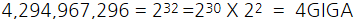
캐시란? 레지스터란?

캐시란?
- 컴퓨터 시스템의 성능을 향상시키기 위해 주로 CPU 칩 안에 포함되는 빠르고 작고 매우 비싼 메모리
- 프로그램에서 직접적으로 읽거나 쓸 수 없고 하드웨어의 메모리 관리 시스템(MMU)이 내부적으로 제어한다.
- 메인 메모리에 있는 데이터를 캐시 메모리에 불러와 두고, CPU가 필요한 데이터를 캐시에서 먼저 찾도록 하면 시스템 성능을 향상시킬 수 있다.
레지스터란?
- 레지스터는 CPU에 존재하는 다목적 저장 공간
- 레지스터는 데이터와 명령어를 저장하는 역할을 한다.
- Register는 Flip Flop의 집합이며, 이 Flip Flop이라는 것은 각각 1bit의 정보를 저장할 수 있는 것들을 의미.
결국 n-bit Register라는 것은 n bit의 정보를 저장할 수 있는 -> 결국 n개의 Flip Flop으로 이루어진 -> Flip Flop의 Group을 말하는
것입니다.
- 레지스터는 컴퓨터의 프로세서 내에서 자료를 보관하는 아주 빠른 기억 장소이다. 일반적으로 현재 계산을 수행중인 값을 저장하는 데 사용된다.
대부분의 현대 프로세서는 메인 메모리에서 레지스터로 데이터를 옮겨와 데이터를 처리한 후 그 내용을 다시 레지스터에서 메인 메모리로 저장하는 로드-스토어 설계를 사용하고 있다.
레지스터는 메모리 계층의 최상위에 위치하며, 가장 빠른 속도로 접근 가능한 메모리이다.
최신 프로세서에서 레지스터는 대개 레지스터 파일로 구현되지만, 과거에는 플립플롭, 마그네틱 코어, 박막 필름 메모리 등으로 구현되기도 했다.
레지스터의 종류
- 데이터 레지스터 : 정수 값을 저장할 수 있는 레지스터.
- 주소 레지스터 : 메모리 주소를 저장하여 메모리 접근에 사용되는 레지스터. 어떤 프로세서에서는, 주소를 저장하는 것이 아니라 조작하기 위한 목적으로 색인 레지스터를 사용하기도 한다.
- 범용 레지스터 : 데이터와 주소를 모두 저장할 수 있는 레지스터.
- 부동 소수점 레지스터 : 많은 시스템에서 부동소수점 값을 저장하기 위해 사용된다.
- 상수 레지스터 : 0이나 1 등 고정된 값을 저장하고 있는 레지스터.
- 특수 레지스터 : 프로그램의 상태를 저장한다. 프로그램 카운터, 스택 포인터, 상태 레지스터 등이 있다.
- 명령 레지스터 : 현재 실행중인 명령어를 저장한다.
- 색인 레지스터 : 실행중에 피연산자의 주소를 계산하는 데 사용된다.
캐시와 레지스터의 공통점으로는 '어떤 명령어나 데이터를 저장해두는 저장 공간' 이라고 볼 수 있습니다.
차이점은 아래와 같이 정의할 수 있을 것 같습니다.
캐시는 cpu와 별도로 있는 공간이며, 메인 메모리와 cpu 간의 속도 차이를 극복하기 위한 것이라는 것이고
레지스터는 cpu 안에서 연산을 처리하기 위하여 데이터를 저장하는 공간 이라는 것입니다.
워드(word)란
워드(word)란 CPU가 한 번에 처리할 수 있는 데이터의 크기입니다.
1바이트는 8비트이므로 32비트 시스템에서는 32비트 / 8비트 = 4, 즉 4바이트가 1워드(word)로 처리됩니다.
64비트 시스템에서는 64비트 / 8비트 = 8, 즉 8바이트가 1워드(word)로 처리됩니다.
PPI와 DPI의 차이
우선 설명에 앞서 Pixel의 개념부터 알고 나면,더 이해가 빠르므로 간단하게 Pixel부터 설명하겠습니다.
Pixel은 picture element의 단축형으로 우리나라 말로는 '화소(畵素)'라고 하며, 이미지를 이루는 가장 작은 단위인 네모 모양의 작은 점들을 'Pixel'이라고 합니다.
그럼 PPI는 무엇일까요?
PPI는 pixel per inch의 약자로 1인치당 픽셀이 몇 개로 이루어졌는지를 나타내는 디스플레이 장치의 해상도 밀도 단위입니다.
10PPI면 정사각형의 한 면 1inch(2.54cm)에 10개의 픽셀이 있고, 총 10x10 = 100개의 픽셀로 이루어져 있다는 뜻입니다.
픽셀의 면적을 다른 말로는 Pixel Pitch라 하는데 인치당 PPI가 구성되는 숫자가 바뀌기 때문에, PPI가 몇이냐에 따라서 pixel pitch가 달라집니다.
( 1pixel = 1cm 이런 고정된 면적이 아니란 뜻 )
그럼 DPI는 무엇일까요?
DPI는 (dots per inch)의 약자로 1인치당 점이 몇 개가 들어갔는지를 말합니다.
흔히 프린터의 성능 등 출력물에 대한 해상도를 나타낼 때 쓰는 단위입니다. PPI와 같이 10DPI면 정사각형의 한 면 1inch(2.54cm)에 10개의 점이 있고,총 10x10 =
100개의 점으로 이루어져 있다는 뜻입니다.

PPI는 디스플레이상에서의 해상도를 나타낸다.
DPI는 출력물, 인쇄상에서의 해상도를 나타낸다.
PPI나 DPI나 해상도를 나타내는 단위로써는 같은 맥락이다.
Pixel Pitch는 이미지 센서를 구성하는 하나의 픽셀이 차지하는 면적
PPI나 DPI가 높아질수록 1inch당 안에 구성하는 Pixel과 dot이 많이지므로 선명도가 좋아지지만, 용량이 커진다.
포토샵에서 해상도(resolution) PPI가 조정되면 모니터 화면 속에서 Pixel의 Inch대비 개수변화 때문에 사진 크기에 변화가 있지만, 출력 시에는 출력 크기에 변함없이 출력된
사진의 선명도에만 변함이 있다.

devicePixelRatio(CSS pixel ratio)
1-1. 들고있는 디바이스로부터 시야까지의 실제 거리와 레퍼런스 픽셀의 거리를 비교.
스펙에 따르면 28인치에서 이상적인 것은 인치 당 96 픽셀이다.(표준밀도는 96ppi) 그러나 스마트 폰이기때문에 사람들은 노트북을 들고 다니는 것보다 디바이스를 얼굴에 가깝게
들고있는다.
그 거리를 18 인치로 추정 해본다.
1-2. 주어진 거리에 대해 이상적인 픽셀 밀도를 얻으려면 거리 비에 표준 밀도 (96ppi)를 곱한다.
idealPixelDensity = (28/18) * 96 = 150 픽셀/인치 (대략)
예)5.3인치 1280*720(물리적 픽셀), 294ppi
devicePixelRatio(논리적픽샐과 물리적 픽샐의 비율) = 294/150 = 1.96 => 반올림 => 2
device-width = 720/2 = 360(논리적 픽셀)
device-height = 1280/2 = 640(논리적 픽셀)
해당기기의 ppi와 해상도를 알고 있다면,
devicePixelRatio = 해당 기기의 ppi / 150 (왜 150인지는 위에 설명)
deviceWidth = 해당기기의 해상도 / devicePixelRatio
css는 논리적 픽셀을 사용함
meta 태그
이름에서볼 수 있듯이 (x)html 태그 중 하나이고 '메타', 즉, 문서 그 자체를 설명하는 태그를 메타 태그라 합니다.
일반 (x)html 태그는 문서 내용물을 어떻게 보이게 하는지를 나타내기위해 마크업을 합니다.
하지만 메타 태그는 (x)html문서가 어떤 내용을 담고 있고, 그 문서의 키워드는 무었이며, 누가 만들었는지, 문자 세트(언어설정)는 어떤것을 사용하는지 등의 정보를 담고 있는
태그입니다.
JavaScript 언어
JavaScript 언어 전체는 하나의 중앙 데이터 구조, 즉 연관 배열을 기반으로합니다.
자바 스크립트의 모든 것이 객체라는 말은 일반적이지만 자바 스크립트의 모든 것이
연관
배열이라고 말하는 것이 더 정확할 수 있습니다.
그 이유는 JavaScript 객체가 연관 배열 인 다른 JavaScript 객체를 저장하는 연관 배열 일 뿐이 기
때문입니다.
이것이 의미하는 바는 JavaScript에서 다른 데이터 구조를 만들고 싶다면 연관 배열로 시작해야한다는 것입니다.
일급 함수를 사용하는 가벼운 객체 지향 인터프리터 언어
라이브러리, 플러그인(추가기능)에 대한 기준
Plug-in은 어떤 특정한 하나의 문제를 해결하기 위한 component 입니다.
jQuery에 plug-in이 많은데, 이들은 주로 어떤 하나의 문제를 해결하기 위한
것들입니다.
Slider나, Modal이 포함될 수 있겠네요.
Library는 비슷한 성격을 가진 plug-in의 집합이라 보시면 됩니다. jQuery를 주로 library라고 하는데, jQuery의 catchphrase인 'write
less,
do more'라는 문제를 해결하기 위해, DOM Search 관련 Method, Ajax call 같은 편의 기능들을 제공해주지요.
Framework는 말 그대로
뼈대
입니다. 일정한 틀을 제공하여, 그 안에서 logic을 구현하도록 돕지요. BackboneJS의 경우 JS code를 MVC 형태로 구현하는 것을 도와줍니다.
자바스크립트 함수란?
javascript에서 특정 작업을 수행하거나 값을 계산하는 코드의 집합을 나타내는 자료형(타입)입니다.
매개변수와 전달인자
컴퓨터 프로그래밍에서 매개변수(영어: parameter 파라미터[*])란 변수의 특별한 한 종류로서, 함수 등과 같은 서브루틴의 인풋으로 제공되는 여러 데이터 중 하나를 가리키기 위해
사용된다.
여기서 서브루틴의 인풋으로 제공되는 여러 데이터들을 전달인자(argument) 라고 부른다.
보통 매개변수의 목록은 서브루틴의 정의 부분에 포함되며, 매번 서브루틴이 호출될 때 마다 해당 호출에서 사용된 전달인자들을 각각에 해당하는 매개변수에 대입시켜 준다.
보통 수학에서 사용되는 것과 마찬가지로, 전달인자는 (log(37)에서 37과 마찬가지로) 실제로 함수 또는 루틴에 전달되는 값을 의미하며, 반대로 매개변수는 함수의 내부에서 해당
함수(앞의 예에서 log)로 전달된 값을 가리키기 위한 변수를 의미한다.
종종 매개변수(parameter)와 전달인자(argument)는 적당히 섞어서 쓰이기도 하는데, 이 경우 문맥에 따라 의미를 달리해서 해석되기도 한다.
하지만 엄밀히 말해서 매개변수는 함수의 정의부분에 나열되어 있는 변수들을 의미하며, 전달인자는 함수를 호출할때 전달되는 실제 값을 의미한다.
이같은 의미를 명확히 하기 위해 매개변수는 변수(variable)로, 전달인자는 값(value)으로 보는 것이 일반적이다.
매개변수는 함수의 정의 부분에서 볼 수 있으며, 전달인자는 함수를 호출하는 부분에서 볼 수 있다.
f(x) = x*x와 같은 함수 정의 부분에서 변수 'x'가 매개변수가 되며, f(2)와 같은 함수 호출 부분에서 값 '2' 가 함수의 전달인자가 된다.
각각의 매개변수는 함수의 정의 부분에 포함되어 있는 고유한 특성이다.
예를 들어, (대다수의 언어에서는) 입력으로 들어온 2개의 정수를 더해서 합을 계산해 주는 함수의 경우 정수 형태의 매개변수 2개가 필요하다.
일반적으로 함수는 몇개의 매개변수를 가지든 상관없으며, 매개변수가 하나도 없을 수도 있다. 만약 함수가 매개변수를 가질 경우, 각각의 매개변수에 대한 정의를 나열해 놓은 것을 매개변수
목록(parameter list) 이라고 한다.
반면 전달인자는 함수가 호출될때 제공되는 값들을 말하며, 함수 정의의 한 부분으로 바뀌지 않는 매개변수와는 달리 호출 할 때마다 값이 바뀔 수 있다.
함수를 호출하는 부분에서 전달인자를 나열해 놓을 것을 전달인자 목록(argument list) 이라고 한다.
넘겨지는 값 : argument(인수==전달인자)
넘겨오는 값을 저장할 그릇 : parameter(매개변수==인자)
함수 Call by Value(값에 의한 호출), Call by Reference(참조에 의한 호출)
함수를 호출할 때 건네주는 파라메터들은 Call by Value 와 Call by Reference 둘 중 어떤 방식으로 적용되는 것일까.
함수안에서 값을 변경하여 다른 값을 할당해주면 그 값은 함수 밖에서도 바뀌어 있을것인가.. 결론은 자바와 매우~ 비슷하다.
JAVA Primitive, Reference Type은 메모리 저장 방식이 다릅니다.
String은 String constant pool을 이용한 메모리 관리 합니다. 리터럴 방식으로 생성하면 컴파일러가 효율적으로 사용할수 있게 해줍니다.
Primitive Type 마다 사용하는 메모리 사이즈가 fix 되어있습니다.
Reference Type은 기본 1Byte + @ (class variable size의 합)의 메모리를 사용합니다. 갖습니다.
String은 reference Type 입니다.
JAVA에 call-by-reference는 없습니다. pass-by-value reference 정보를 가진 객체가 복사됩니다.
결론 : 자바스크립트는 항상 Call by value 이며, 객체나 배열같은 참조형(Reference) 타입인 경우에도 실제로는 그 복사본을 만들어 value로 function 에
파라메터를 전달하게 되는 것이다.
그래서 function으로 넘겨받은 파라메터안에 있는 해당 속성(properties)들의 값은 변경이 가능해도 막상 자기자신의 값을 초기화해서 다시 새로운 값으로 할당받을 수가 없는
것(ex: 기명인자={})이다.
객체 (Objects)
객체란 여러가지 자료(Data)들과 함수(Function)들의 집합이다.
컴퓨터 과학에서, 객체는 식별자 (Identifier) 로 참조할 수 있는, 메모리에 있는 값이다.
자바스크립트에서, 객체는 속성(Properties)들을 담고있는 가방 (collection)으로 볼 수 있다.
데이터(주채)와 그 데이터에 관련되는 동작(절차,방법,기능)을 모두 포함하고 있는 개념
---객체는 자신의 정보(상태)를 가지고 있는 독립적인 주체이다.---
객체란 것은 결국 껍대기를 이루는 말이고 실제 객체를 완성하는 구성요소들은 프로퍼티(상태)와 메소드(행동) 이다.
상속은 객체가 객체로 부터 상속을 받지, 다른 클래스가 있는 언어들처럼 클래스가 클래스로부터 상속받지 않는다.
- Native object or Built-in objects: Object(constructor), Data, Math, parseInt, eval, indexOf 나
replace같은 string 메소드, 배열 메소드 등
- Host object(웹 브라우저 환경) : window, document, location, history, XMLHttpRequest, setTimeout,
getElementsByTagName, querySelectorAll 등
property?! 변수?! 메소드?!
프로퍼티(Property)란 객체에 속한 데이터(Data)를 뜻한다.
property는 해당 object의 특징입니다.
property는 보통 데이터 구조와 연관된 속성을 나타냅니다. property에는 2가지 종류가 있습니다.
-인스턴스 property들은 특정 object 인스턴스의 특정한 데이터를 가지고 있습니다.
-Static Property들은 모든 object 인스턴스들에게 공유 된 데이터를 가지고 있습니다.
ECMA5 : 객체의 일부로 이름과 값 사이 연결을 의미
다시 말하면, 프로퍼티는 객체를 구성하는 블록들이다.
변수는 실행 컨텍스트 내에 존재하는 이름과 값 사이의 연결을 의미한다
프로퍼티는 객체에 포함되어 있고, 변수는 컨텍스트에 포함되어 있다.
window.b(프로토타입 체인 룩업) 와 b(스코프 체인 룩업)의 차이(b가 존재하지 않는 경우에 룩업)
우리는 window.b라는 프로퍼티 문법으로 간단히 b에 접근함으로써 ReferenceError를 피할 수 있다.
객체 한정자 없이 b를 접근할 때, 자바스크립트는 우리가 변수를 참조하고 있다고 가정하고 VariableObject(그것은 b라는 프로퍼티를 가지고 있지 않다)를 체크한다.
이때 식별자가 존재하지 않으면 ReferenceError가 발생한다.
반대로 단순한 프로퍼티 접근자는 부모 객체 상에서의 해시 룩업 결과를 반환할 것이다. (이 경우는 undefined)
property와 method의 관계
프로퍼티는 object를 위해서 데이터를 저장한다.
메소드는 object가 요청 받을 수 있는 액션이다.
리터럴 표현
리터럴이라는 단어는 객체의 생성이나 따로 타입에 대한 추적없이 그 값 자체로 타입을 판별할 수 있는 표현법이다.
말이 좀 어려운데 내가 좋아하는 숫자인 5를 봐보자. 이건 누가 typeof 연산자를 사용해서 타입을 추적하지않아도 당연히 number 타입이란것을 알것이다.
"LichKing"을 보자. 지나가던 개발자한테 이게 무슨타입이에요? 라고물어보면 욕한바가지를 먹고 string이라고 대답할것이다.
true는 무슨타입인가? boolean타입이다. true값을 적어놓고 이것의 타입을 판별하기위해 typeof true 라는 코드를 작성하진않는다.
리터럴이란 이런것이다. 값 자체로 타입을 나타는 표현법이다.
5, "", true 는 각각 number, string, boolean 타입의 리터럴 표현인것이다.
함수리터럴
함수 이름이 변수 이름과 같아지면, 함수 몸체가 바로 값 자체라는 의미.
이름 없이 몸체만 있는 함수를 함수 리터럴이라고 한다.
예)var aa = function(){};
인스턴스
추상적인 객체라는 틀을 통해 생성된 실체적인(실제로 만들어진) 특정 객체를 인스턴스라 함
붕어빵을 찍는 틀이 추상적인 의미의 객체, 만들어진 각각의 붕어빵을 인스턴스(실체적 특정 객체)라 함
의존관계 주입, Dependency Injection, DI - 의존성 주입
- 하나의 객체가 다른 객체를 사용하는 순간 의존관계가 성립된다. 그러므로 어느 어플리케이션이든 여러 객체 사이에 의존관계가 필연적으로 성립될 수 밖에 없다. ※ 자바스크립트 상에서 객체들 사이의 의존관계가 생성되는 세가지 경우 1) new 키워드를 통한 의존관계 성립 2) 전역 변수 참조를 통한 의존관계 성립 3) 인자를 통하여 참조를 전달받아 의존관계 성립
JSON 과 JS Object
JSON 과 JS Object는 유사한 구조를 갖지만 엄밀하게 다른 개념입니다.
Object는 JS Engine 메모리 안에 있는 데이터 구조이고,
JSON은 객체의 내용을 기술하기 위한 text 파일이라는 점이 다릅니다.
JSON은 "파일"이므로 확장자 명이 .JSON인 파일이 존재합니다.
JS는 JSON을 Object로 쉽게 파싱 할 수 있도록 JSON.parse() 메서드가 존재합니다.
이 메서드가 존재하는 이유는 HTTP와 관련이 있습니다.
HTTP에서 메시지는 " 문자열 "로 전송이 되기 때문에 상대방에게 전송을 할 때 JSON.stringify() 메서드를 호출하여 JSON을 문자열로 만듭니다.
이 데이터를 받으면 다시 JSON으로 변환하기 위해 JSON.parese() 메서드를 호출하게 되고, 이 데이터를 JS Object의 값으로 할당하면 Object가 됩니다.
프로토타입
JavaScript에서 기본 데이터 타입을 제외한 모든 것이 객체입니다.
객체가 만들어지기 위해서는 자신을 만드는 데 사용된 원형인 프로토타입 객체를 이용하여 객체를 만듭니다.
이때 만들어진 객체 안에 __proto__ (비표준) 속성이 자신을 만들어낸 원형을 의미하는 프로토타입 객체를 참조하는 숨겨진 링크가 있습니다.
이 숨겨진 링크를 프로토타입(링크)이라고 정의합니다.
프로토타입 체인이 도입된 이유
클래스와 같은 정의된 메모리 공간이 따로 존재하지 않기 때문에
공유데이터를 보관할 방법이 없어
특정 프로토콜 규격을 따르는 일련의 해시맵끼리 데이터를 공유할 목적으로
디자인 된 것입니다. 브랜든 할베의 묘책입니다…만 이 묘책은 양면성을 갖고 있습니다(모든 묘책은 그런 법입니다. 등가교환의 법칙 때문에 ^^)
말하자면 프로토타입 체인 시스템은 고전적인 데이터구조론으로 보자면 노드가 해시맵인 일종의 링크드리스트로 이해할 수 있습니다.
따라서 링크드리스트의 장단점을 그대로 계승할 것도 같지만, 링크드리스트와는 달리 노드 간의 연결을 통제할 수 있는 인터페이스가 매우 제한적이라 거의 단점만 남게 됩니다.
링크드리스트 단점이라면 당연히 검색 속도입니다. 헤더노드에 가까울수록 빨리 찾아지고 멀리 있을수록 늦게 찾아집니다.
특히 해시맵이므로 노드를 하나씩 전진할 때마다 단지 다음 노드의 메모리참조 비용만 발생하는게 아니라 해시함수 실행 비용도 발생합니다.
깊은 참조를 형성하여 temp.proto.proto.proto.toString() 정도에서 문자열을 만들 정도면 이미 해시함수 만해도 4번 호출된 상태입니다.
V8 에 적용된 해시컬리전으로 해시함수만 떼어서 성능테스트를 해봐도 모든 자바스크립트 기저(어떤 것의 밑받침이 되는 부분)단에서 발생한다고 생각해보면 이 비용은 결코 싸지
않습니다.
현재에 와서는 거의 모든 브라우저는 이러한 링크드리스트 스타일의 프로토타입 체인 시스템을 구현하지 않습니다. 스크립트 인터페이스로서 프로토콜만 유지하는거죠(하지만 IE6,7,8은 여전히
이렇다는..=.=)
요즘 브라우저는 오브젝트를 생성하면 즉시 캐시객체를 내부에 생성하고 프로토타입 체인으로 얻어야하는 모든 키를 그 캐시객체에 미리 잡아둡니다.
체인을 통해 값을 얻는게 아니라 캐시객체에 질의하면 체인과정 없이 즉시 얻을 수 있는 거죠.
요점은 원론적인 오리지널 프로토타입 키체인 시스템에서 다중 체인에서 느려진다는 특성을 무시하고 개발하면 IE8 이하에서 심각한 성능저하가 일어난다는 것입니다.
모든 오브젝트는 키를 찾을 때 그저 자신만의 키를 찾는 것이 아니라 프로토타입 체인을 통해 연결된 모든 오브젝트의 키를 찾는다는 사실을 알게 되었습니다.
여기서 중요한 점이 있는데 키에 뭔가 쓸 때는 절대로 자신에게 쓴다는 것입니다.
get(읽기) 은 프로토타입체인을 통해 얻지만 set(쓰기) 은 오직 자기 자신에게만 쓴다,
자신에게 쓰면 프로토타입체인 검색시 가장 먼저 걸리므로 우선 순위가 가장 높은 get이 된다
프로토타입체인 시스템에서는 get은 체이닝을 하지만 set은 자신에게만 쓴다고 했습니다.
하지만 스코프체인 시스템은 set은 체이닝에서 찾은 해시맵에 쓰게 되어 있습니다.
data를 [[Parent]]에서 찾았으므로 EC_con1.[[Parent]].data = $data 가 됩니다.
프로토타입 기반 언어
프로토타입 기반 언어는 클래스 기반 언어에서 상속을 사용하는 것과는 다르게,
객체를 원형(프로토타입)으로 하는 복제 과정을 통해 객체의 동작 방식을 재사용 할 수 있게 한다.
자바스크립트는 약간 다르다. 복제가 아닌 프로토타입 링크를 통해 원형을 참조한다.
객체와 객체의 연결을 통한 단방향 공유 관계를 프로토타입 체인이라고 한다
함수 호출시
각설하고 함수를 만들면 어찌되는지를 봅시다. 자바스크립트에서 함수는 언제나 런타임에 생성됩니다.
그리고 어떤 함수가 생성되는 시점은 항상 그 생성될 함수를 감싸고 있는 함수가 실행 중인 것입니다. 예를 들어 봅시다.
function a(){}
마치 전역에 아무도 없는데 만든 것 같죠? 하지만 암묵적으로 이 때도 전역 함수가 실행 중입니다. 이를 코드로 표현하면 아래와 같습니다.
function GLOBAL(){
function a(){}
}
GLOBAL();
그렇습니다. 개발자가 자바스크립트를 제아무리 최상단에서 함수를 작성해봐야 이미 전역함수가 구동 중인 것입니다.
함수는 자신을 둘러싼 부모 함수가 실행되는 도중에 생성됩니다.
자바스크립트는 어떤 함수가 호출되면, 스택메모리를 생성하는 방식이 직렬적인 메모리공간을 사용하는 것이 아니라 해시맵을 생성해서 처리합니다.
즉 위의 코드에서 GLOBAL(); 이라고 함수를 호출하면 그 순간 { } 를 하나 만들어냅니다.
이렇게 함수 호출 시마다 만들어지는 독립적인 메모리 공간으로서 해시맵을 실행컨텍스트(Execution Context)라 부릅니다.
이하 EC 로 줄입니다.
EC 는 함수가 호출되어 함수 내부의 코드가 전부 실행될 때까지 생존하다가 실행이 완료되고 나면 소멸됩니다. 이를 개념적인 코드로 표현하면 아래와 같습니다.
function GLOBAL(){
//내부코드들..
}
GLOBAL();
//1. EC생성
EC_GLOBAL = {};
//2. GLOBAL의 내부코드 실행
//3. EC소멸
delete EC_GLOBAL;
EC 가 기존 언어의 함수 스택메모리를 대체하기 위해 만든 것이라 함수 내부의 변수를 정리한 키가 자동으로 셋팅됩니다.
EC 에 자동으로 셋팅되는 내용은 정리하면 아래와 같습니다.
‘this’ 키에 컨텍스트 객체가 참조됨
‘arguments’ 키에 인자를 정리한 리스트가 생성됨
기명된 인자에 arguments 를 정리하여 할당
지역변수가 키로 정리되고 undefined 가 할당됨
‘[[Parent]]’ 키에 함수 생성 당시의 환경함수의 EC 를 할당
이를 코드로 보는 편이 더 알기 쉽습니다.
function GLOBAL( a, b ){ //기명인자 a, b
var c, d; //지역변수 c, d
}
GLOBAL( 3, 4 );
EC_GlOBAL = {
'this':window, //1 기본 컨텍스트는 전역
'arguments':{0:3, 1:4, length:2}, //2 인자를 정리한 것
'a':3, 'b':4, //4 기명인자 정리
'c':undefined, 'd':undefined, //3 지역변수 정리
'[[Parent]]', ??? //5 함수생성당시 EC할당
};
이런 느낌입니다. 자바스크립트의 초창기 파서는 전부 해시맵 시스템과 키체인을 통한 검색함수 하나로 만들 수 있는 정도입니다.
이제 var 의 의미를 정확히 알 수 있습니다.
var 는 지역변수를 만드는 키워드가 아닙니다. 정확하게 말하자면 컴파일러 입장에서 EC 에 등록될 키를 정의하는 문법입니다.
보통은 특정 객체의 키가 되지만 var 를 통해 키를 선언하면 그 키는 객체의 키가 되지 않고 EC 에 들어갈 키가 되어 버립니다.
개발자 입장에서는 EC 자체를 직접 컨트롤할 방법이 없으니 당연히 delete 가 안되는 거죠.
EC 를 함수 호출 시마다 생성하는 이유는 함수 내부의 코드가 실행되면서 등장하는 변수 이름을 찾는 메모리 공간으로 사용하기 위해서 입니다.
따라서 함수는 호출될 때마다 함수 안에서 a 를 찾으면 매번 별도의 메모리 공간에서 찾게 됩니다….
클로저 Closure
일단 환경함수 내부에서 구상함수를 생성해서
그 구상함수가 만약 환경함수 밖으로 안나간다면
환경함수의 EC 는 소멸되겠지만
구상함수가 환경함수 밖으로 유출되면 환경함수의 EC 는 가비지컬렉팅이 되지 않습니다.
우선 위의 코드가 환경함수 밖으로 구상함수가 유출되지 않는 상황이었습니다.
function Env(){
var f = function Con(){};
//내부에서만 처리되고 끝
}
하지만 일급객체 특성 상 외부에 값으로 유출할 수 있습니다.
function Env(){
return function Con(){};
}
var f = Env();
이렇게 되면 f 가 Con 함수의 참조를 쥐고 있게 됩니다.
근데 Con 함수 객체에는 [[SCOPE]].[[Parent]] 에 EC 를 쥐고 있습니다.
활성화된 참조가 있는 이상 그 EC ( Env() 할 때 생겨난) 는 가비지컬렉팅 될 수 없게 됩니다.
원래 EC는 함수가 호출되는 시점에 탄생해, 함수내부의 코드가 실행완료되면 소멸된다고 말씀드렸는데, 위와 같은 구조로 인해 소멸될 수 없게 된 것입니다.
즉 갖혀버린거죠(Closure!)
그래서 클로져인 것입니다. 자바스크립트에서 정확하게 클로져란 소멸되어야 할 EC 가 위와 같은 이유로 갖혀버린 상황 그 자체를 의미하는 말입니다.
유명한 IE 의 클로져 메모리릭은 정확히 이해하지 않으면 무슨 미신처럼 퍼지는데, 저렇게 한번 가비지컬렉팅되지 않는 대상을 완전히 대상에서 배제해서 브라우저를 종료할 때까지 페이지를
새로고침해도 메모리에서 해지되지 않는 현상입니다.
스코프 체인
긴 여정을 오시느라 수고하셨습니다. 함수형 언어로서의 자바스크립트 따위 알까보냐. 진짜로 이해 해야 할 것은 스코프체인입니다.
여태까지 장황하게 설명한 자바스크립트의 함수 시스템은 전부 스코프체인을 설명하기 위한 것입니다.
사실 이미 체인 시스템 한 가지를 소개했습니다.
프로토타입 체인이죠.
스코프 체인도 완벽하게 동일한 알고리즘으로 동작합니다.
이전 코드에서 바뀐거라곤 __proto__ 가 [[Parent]] 가 되었을 뿐입니다(사실 __proto__ 도 브랜든 할베가 파서짜면서 왠지 그렇게 이름을 지어버려서 그렇지 ECMA
표준에 등록된건 [[…]] 로 된 이름입니다)
즉 함수가 함수 내부의 코드를 실행하면서 만나는 변수 이름을 EC 에서 찾다가 없으면 EC.[[Parent]] 에서 찾고 거기도 없으면 EC.[[Parent]].[[Parent]] 에서
찾는 식입니다.
그러다가 마지막에는 찾을 수 없는 이름도 있습니다.
이 경우는 의미상 단지 해시맵의 키를 찾는데 실패한게 아니라, 변수의 이름을 찾는데 실패한 것이 되므로 더 이상 컴파일러가 코드를 실행할 수 없게 됩니다.
따라서 즉시 정의되지 않은 변수라는 에러를 피토하고 모든 실행이 정지됩니다.
context(문맥)
context라는 말은 여러군데에서 사용됩니다
- 프로그램이 메모리에 올라갔을 때, 실행되기 위해서 필수로 필요한 메모리영역, 레지스터의 값(CS, EIP 등등) 등의 리소스들을 총칭하는 것 [하드웨어 관점]
- 어떤 루틴(함수)이 실행될 때 변수값들, 이전에 실행된 함수들의 내부상태 등을 말하는 것입니다. 동일한 루틴이 여러번 실행되더라도 컨텍스트에 따라 다른 결과가 나올 수 있는 것이죠.
즉, 루틴의 실행(execution)에 영향을 줄 수 있는 register, call stack, memory 등의 상태를 말합니다. [소프트웨어 관점]...그냥 쉽게 함수가 실행될때의 내부상태로 생각을;;
context의 사전적 정의는 맥락, 전후사정이고,
어떤 것에 영향을 주는 외부적인 것들은 다 context라고 불릴 수 있습니다.
문맥이란 단순히...해당부분의 상태나 환경이라고 생각을!!!
자바스크립트 실행문맥 (Execution context)
자바스크립트 코드 블럭이 실행되는 환경
1) 전역코드(global code) : 가장 기본적인 환경으로 소스 코드가 처음으로 실행될 때
2) 함수코드(function code) : 처리 흐름이 함수 바디 안으로 들어갈 때(호출될때)
3) eval() 코드(Eval code) : eval() 안에서 실행 될 때
- 세 가지 환경 중에 무조건 하나가 실행 컨텍스트 가 되는 것이다.
- 함수가 호출되면 하나의 실행문맥(실행환경)이 생성된다. 그리고 이 실행 문맥은 실행문맥 스택(Execution Context stack)에 쌓인다
- 실행 문맥(실행환경) 안에는 변수, 함수, 객체 등이 존재한다
- 또한 실행 문맥 중 다른 함수(문맥과 상관없는)가 호출되면, 새로운 실행 문맥이 생성되어 쌓이고 이전 문맥의 제어권은 모두 새로운 문맥으로 이전된다.
그렇므로 내부함수가 외부 함수의 변수접근은 가능하지만 외부 함수는 내부 함수의 변수의 접근 할 수 없는 것이다
- 실행문맥(Exection context)은 두 과정으로 나뉜다
a. 생성과정(creation Stage) - 활성객체 생성
- Scope chain을 만든다
- 변수, 함수, 매개변수(arguments) 를 만든다
- 'this'를 결정한다
b. 코드실행과정(Activation/ Code Execution Stage)
- 변수를 할당한다
- 함수와 실행 코드를 참조한다
함수의 [[scope]] 프로퍼티
현재 실행 문맥의 스코프 체인을 저장하게 됩니다.
이 스코프 체인은 추후 이 함수가 실행될때 생성되는 실행 문맥의 변수 객체와 결합되어 새로운 스코프 체인을 생성합니다.
함수가 호출된 이후 스코프 체인의 생성 과정은 다음과 같습니다.
- 새로운 실행 문맥의 스코프 체인 = 새로운 실행 문맥의 변수객체 + 함수의 스코프 프로퍼티([[scope]] 프로퍼티)
자료구조(Data Structure)
간단한 도서관 이라는 예를 가지고 생각해 보자.
자료 = 도서관의 무수한 책
구조 = 정리하는 규칙과 방법에 따라서 책장을 쌓고 정리한 구조.
도서관에 가서 책을 찾을때, 구조가 엉망이면 책을 찾을 수 있을까?
어떤 규칙으로 어떻게 책장을 배열했을 때 책을 가장 빠르게 찾고 정리할 수 있을까?
컴퓨터 과학에서 자료구조는 위와 거의 동일한 역할을 가진다.
결국 자료 구조는 데이터를 얼마나 효율적으로 저장 관리하여, 메모리를 효율적으로 사용할 수 있는가에 대해 연구하는 것이다.
- 자료구조란 데이터에 편리하게 접근하고, 변경하기 위해서 데이터를 저장하거나 조직하는 방법을 말하며 대량의 데이터를 효율적으로 관리할 수 있는 데이터의 구조를 의미.
- 자료구조와 알고리즘은 떨어질 수 없는 관계다. 각각의 문제에 따라 쓰이는 자료구조와 알고리즘의 형태는 다르며, 자료구조를 구현하기 위해서 알고리즘을 이용한다.
자료구조의 미션 : 메모리의 효율적인 사용
컴퓨터에는 3가지 중요한 부품이 존재하며 다음과 같은 특성을 가진다.
CPU : 중앙정보처리장치, 레지스터, 데이터를 연산/처리하는 가장 중요한 부분, 아주 빠름 (기억 떠올리기)
메모리 : RAM(Random Access Memory), CPU에서 직접 접근이 가능, 사용자가 자유롭게 내용을 읽고 쓰고 지울 수 있다. 휘발성 기억장치, 빠름 (책에서 특정한 내용 찾아 읽기)
스토리지 : HDD, SSD, 비휘발성 기억장치, 용량이 아주 크지만 느림 (지구를 한바퀴 돌아서 찾기)
상기와 같은 이유로 데이터는 기본적으로 스토리지에 저장된다.
하지만 스토리지는 매우 느리기 때문에 CPU와 함께 일하기에는 속도면에서 부족하다.
따라서 어떤 프로그램을 실행하면 해당 프로그램과 데이터는 메모리로 옮겨진다.
CPU는 메모리에 로드된 데이터를 이용해서 여러가지 일을 하게 된다.
그러므로 실행속도를 결정하는 것은 대체로 메모리 이며, 자료구조를 배우는 이유는 메모리의 효율적인 사용 이라고 할 수 있다.
자료구조와 알고리즘의 관계
* 자료구조 : 데이터를 어떤 구조로 저장하고, 탐색하고, 삭제해야 가장 효율적일까? (어떻게 메모리를 가장 효율적으로 사용할 수 있을까? -> 실행속도 영향)
* 알고리즘 : 문제를 해결하는 방법론
자료구조를 구현하기 위해서 알고리즘이 필요하다.
자료구조의 알고리즘 : 데이터를 저장하고 탐색하는 방법에 대한 고민들
자료구조를 이용한 알고리즘 : 자료구조를 활용하여 어떤 문제를 해결하는 것
** 자료구조는 데이터를 원하는 규칙 또는 목적에 맞게 저장하기 위한 구조이고, 알고리즘이란 자료구조에 쌓인 데이터를 활용해 어떠한 문제를 해결하기 위한 여러 동작들의 모임입니다.
자료구조의 구성
Insert : 데이터를 어떻게 저장 할 것인가
Search : 데이터를 어떻게 탐색 할 것인가
Delete : 데이터를 어떻게 삭제 할 것인가
자료구조의 분류
단순구조 : 프로그래밍에서 사용되는 기본 데이터 타입 (정수, 실수, 문자, 문자열)
선형구조 : 저장되는 자료의 전후관계가 1:1 (선형리스트<배열>, 연결리스트, 스택, 큐, 덱 등)
비선형구조 : 데이터 항목 사이의 관계가 1:n 또는 n:m (트리, 그래프 등)
파일구조 : 서로 관련된 필드들로 구성된 레코드의 집합인 파일에 대한 자료구조
링크드 리스트
각 노드가 데이터와 포인터를 가지고 한 줄로 연결되어 있는 방식으로 데이터를 저장하는 자료 구조,
자료의 추가와 삭제가 O(1)의 시간에 가능하다는 장점을 갖는다.
그러나
배열이나 트리 구조와는 달리 특정 위치의 데이터를 검색해 내는데에는 O(n)의 시간이 걸리는 단점도 갖고 있다.
List vs Map
List: 순차적으로 데이터를 저장하거나 엑세스 할때 사용.
var aList = [] // List 선언
// 데이터 넣기
aList.push('A');
aList.push('B');
0
aList.push('C');
Map: '키-값' 의 쌍으로 나열되어 있어 키값을 통해 원하는 값을 한번에 찾아낼 수 있다. 속도가 빠르다.
var bMap = {name: '나님'}; // Map선언
// 데이터 넣기
bMap.age = 25;
bMap['address'] = '우리집';
-> dot('.')연산자 또는 대괄호('[]')연산자로 접근하는 방법의 차이점.
- bMap.age = 25; : 직접 접근 방법으로서, 컴파일 시 값이 지정된다.
- bMap[address] = '우리집'; : 런타임 시에 프로퍼티에 따라 동적으로 값이 지정된다.
정리!!!!!!!!!
값을 순차적으로 사용하고 할 때는 List 사용!
키값을 가지고 원하는 값을 빠르게 찾고 싶을 때는 Map 사용!
첨자 연산자 ( [] , Subscript Operator, Index Operator)
내부적으로 포인터 연산으로 동작하는 첨자 연산자이며 피연산자를 둘 취하는 이항 연산자이다.
ptr[i] 연산은 정의에 의해 *(ptr+i)와 같은동작을 하도록 되어 있다.
첨자(Index)란 요소가 그 배열의 몇 번째에 있는지를 나타내는 순서값이다.
기본적인 의미는 배열에서 몇 번째의 데이터를 사용할 것인지 입니다.
.(점)연산자
동일한 타입의 집합인 배열과는 달리 구조체(Structure)는 서로 다른 타입의 집합이다. 이때 구조체에 속하는 개별 변수들을 멤버(Member)라고 한다.
구조체의 멤버를 참조할 때는 .(점)연산자를 사용하여 구조체.멤버 식으로 적으면 되는데 이때 . 연산자는 영어로 of, 한국어로 ~의로 해석하면 쉽게 이해할 수 있다.
CSS (Cascading Style Sheets)
우선순위 스타일 문서
scss 특징 - 네스팅(nesting)[중첩]
네스팅이란 서브루틴중에 다른 서브루틴을 짜넣는 것입니다.
함수로보면 함수안에 함수를 선언(중첩함수)하는것
객체로보면 객체안에 객체를 선언(중첩객체)하는것
컨테이닝 블록(containing block)
요소들의 크기와 위치는 컨테이닝 블록containing block의 영향을 받곤 합니다.
요소의 크기와 위치는 컨테이닝 블록의 영향을 자주 받습니다.
백분율 값을 사용한 width, height, padding, margin 속성의 값과 절대적 위치(absolute나 fixed 등)로 설정된 요소의 오프셋 속성 값은 자신의 컨테이닝
블록으로부터 계산됩니다.
컨테이닝 블록의 식별 과정은 position 속성에 따라 완전히 달라집니다.
- position 속성이 static이나 relative면, 컨테이닝 블록은 블록 컨테이너(inline-block, block, list-item 등의 요소) 또는 서식 문맥을 형성하는
요소(table, flex, grid, 아니면 블록 컨테이너 자기 자신)의 콘텐츠 영역입니다.
- position 속성이 absolute인 경우, 컨테이닝 블록은 position 속성 값이 static이 아니고(fixed, absolute, relative, sticky) 가장
가까운 조상의 내부 여백 영역입니다.
- position 속성이 fixed인 경우, 컨테이닝 블록은 뷰포트나 (페이지로 나뉘는 매체에선) 페이지 영역입니다.
- position 속성이 absolute나 fixed인 경우, 다음 조건 중 하나를 만족하는 가장 가까운 조상의 내부 여백 영역이 컨테이닝 블록이 될 수도 있습니다.
- transform이나 perspective 속성이 none이 아님.
- will-change 속성이 transform이나 perspective임.
- filter 속성이 none임. (Firefox에선 will-change가 filter일 때도 적용)
- contain 속성이 paint임.
앞서 언급했듯, 특정 속성의 값이 백분율이라면 그 계산값은 요소의 컨테이닝 블록에 의해 결정됩니다.
이렇게 동작하는 속성으로 박스 모델 속성과 오프셋 속성이 있습니다.
-height, top, bottom 속성은 백분율을 컨테이닝 블록의 height에서 계산합니다.
컨테이닝 블록의 height가 콘텐츠의 크기에 따라 결정되고, 컨테이닝 블록의 position이 relative거나 static이면 계산값은 0이 됩니다.
-width, left, right, padding, margin 속성은 백분율을 컨테이닝 블록의 width에서 계산합니다.
BFC(Block Formatting Context)블럭 서식 문맥
블록 컨테이너는 자신만의 컨텍스트(레이아웃)을 갖게되어 자식들을 그 문맥에 맞게 배치한다.
BFC는 특정한 조건에 해당하는 요소로부터 생성이됩니다.
- 루트 또는 이를 포함하는 요소(body)
- float (float가 none이 아닌 요소)
- 절대위치로 지정된 요소 (position이 absolute 또는 fixed인 요소)
- 인라인블록 (display: inline-block 인 요소)
- 테이블 셀 (display: table-cell 인 요소, HTML table cell의 기본값)
- 테이블 캡션 (display: table-caption 인 요소, HTML table caption의 기본값)
- overflow가 visible이 아닌 요소
- flex box (display: flex 또는 inline-flex인 요소)
그리고 BFC는 그것을 만든 요소안에 있는 다른 요소들 중, 새로 생성되는 BFC 하위 요소 내에 있는 요소들을 제외한 모든것을 포함하고 있다고 합니다.
BFC가 생성되면 자식들을 포함해서 같은 레이어를 공유한다고 생각하면된다.
블록 서식 문맥(block formatting context)은 float의 위치를 정하고 (see float) 해제 (see clear)를 위해 중요한 역할을 한다
float의 위치결정과 해제의 규칙은 동일한 블록 서식 문맥내에 있는 것들에게만 적용된다.
float은 다른 블록 서식 문맥의 레이아웃에는 영향을 주지 않고, clear는 동일한 블록 서식 문맥내의 그 이전 float만 해제한다.
BFC & IFC
BFC(Block Formatting Context)와 IFC(Inline Formatting Context)입니다.
BFC : 요소를 세로로 배치하는 컨텍스트
IFC : 요소를 가로로 배치하는 컨텍스트
즉, BFC는 BFC영역에서 요소들을 세로 배치할 수 있도록 위치를 계산해 알려주고, IFC는 IFC영역에서 요소들을 가로로 배치할 수 있도록 위치를 계산해 알려주는 것입니다.

위치를 알려주고 있는 BFC

여기서 빨간색박스를 세로로 배치한 검정색 박스가 BFC입니다.
또한 파란색박스를 가로로 배치한 마지막 빨간색박스가 IFC가 되는 것이죠.
float 레이어는 언제까지 존재할까요? 이 레이어는 자신의 부모 BFC가 끝날 때까지 존재하게 됩니다.

이를 막을 수 있는 것이 있습니다. 바로 clear입니다. clear는 float 효과를 해제시켜버립니다.
배치, 리플로, 레이아웃
웹킷 렌더러의 기본 클래스인 RenderObject(렌더객체) 클래스는 다음과 같이 정의되어 있다.
class RenderObject { virtual
void layout(); virtual
void paint(PaintInfo); virtual
void rect repaintRect();
Node * node; //the DOM node
RenderStyle * style; // the computed style-스타일 객체(RenderStyle)
RenderLayer * containgLayer; //the containing z-index layer
}
렌더러(렌더객체,문서의 시각적인 구성 요소)가 생성되어 트리에 추가될 때 크기와 위치 정보는 없는데 이런 값을 계산하는 것을 배치 또는 리플로라고 부른다.
렌더러는 자신과 자식 요소를 어떻게 배치하고 그려내야 하는지 알고 있다.
렌더러는 DOM 요소에 부합하지만 1:1로 대응하는 관계는 아니다. 예를 들어 "head" 요소와 같은 비시각적 DOM 요소는 렌더 트리에 추가되지 않는다.
또한 display 속성에 "none" 값이 할당된 요소는 트리에 나타나지 않는다(visibility 속성에 "hidden" 값이 할당된 요소는 트리에 나타난다).
웹킷에서는 스타일을 결정하고 렌더러를 만드는 과정을 "어태치먼트(attachment)" 라고 부른다.
모든 DOM 노드에는 "attach" 메서드가 있다. 어태치먼트는 동기적인데 DOM 트리에 노드를 추가하면 새 노드의 "attach" 메서드를 호출한다.
html 태그와 body 태그를 처리함으로써 렌더 트리 루트를 구성한다.
트리의 나머지 부분은 DOM 노드를 추가함으로써 구축된다.
HTML은 흐름 기반의 배치 모델을 사용하는데 이것은 보통 단일 경로를 통해 크기와 위치 정보를 계산할 수 있다는 것을 의미한다.
일반적으로 "흐름 속"에서 나중에 등장하는 요소는 앞서 등장한 요소의 위치와 크기에 영향을 미치지 않기 때문에 배치는 왼쪽에서 오른쪽으로 또는 위에서 아래로 흐른다.
단, 표는 크기와 위치를 계산하기 위해 하나 이상의 경로를 필요로 하기 때문에 예외가 된다 (3.5).
좌표계는 기준점으로부터 상대적으로 위치를 결정하는데 좌단(X축)과 상단(Y축) 좌표를 사용한다.
배치는 반복되며 HTML 문서의 요소에 해당하는 최상위 렌더러에서 시작한다. 배치는 프레임 계층의 일부 또는 전부를 통해 반복되고 각 렌더러에 필요한 크기와 위치 정보를
계산한다.
최상위 렌더러의 위치는 0,0 이고 브라우저 창의 보이는 영역에 해당하는 뷰포트 만큼의 면적을 갖는다.
모든 렌더러는 "배치" 또는 "리플로" 메서드를 갖는데 각 렌더러는 배치해야 할 자식의 배치 메소드를 불러온다.
소소한 변경 때문에 전체를 다시 배치하지 않기 위해 브라우저는 "더티 비트" 체제를 사용한다.
렌더러는 다시 배치할 필요가 있는 변경 요소 또는 추가된 것과 그 자식을 "더티"라고 표시한다.
"더티"와 "자식이 더티" 이렇게 두 가지 플래그가 있다.
자식이 더터하다는 것은 본인은 괜찮지만 자식 가운데 적어도 하나를 다시 배치할 필요가 있다는 의미다.
전역 배치와 점증 배치
배치는 렌더러 트리 전체에서 일어날 수 있는데 이것을 "전역" 배치라 하고 다음과 같은 경우에 발생한다.
-글꼴 크기 변경과 같이 모든 렌더러에 영향을 주는 전역 스타일 변경.
-화면 크기 변경에 의한 결과.
배치는 더티 렌더러가 배치되는 경우에만 점증되는데 추가적인 배치가 필요하기 때문에 약간의 손실이 발생할 수 있다.
점증 배치는 렌더러가 더티일 때 비동기적으로 일어난다.
예를 들면 네트워크로부터 추가 내용을 받아서 DOM 트리에 더해진 다음 새로운 렌더러가 렌더 트리에 붙을 때이다.
점증 배치는 비동기로 실행된다.
파이어폭스는 점증 배치를 위해 "리플로 명령"을 쌓아 놓고 스케줄러는 이 명령을 한꺼번에 실행한다.
웹킷도 점증 배치를 실행하는 타이머가 있는데 트리를 탐색하여 "더티" 렌더러를 배치한다.
"offsetHeight" 같은 스타일 정보를 요청하는 스크립트는 동기적으로 점증 배치를 실행한다.(강제 동기식 레이아웃)
전역 배치는 보통 동기적으로 실행된다.
때때로 배치는 스크롤 위치 변화와 같은 일부 속성들 때문에 초기 배치 이후 콜백으로 실행된다.
배치 과정
배치는 보통 다음과 같은 형태로 진행된다.
1.부모 렌더러가 자신의 너비를 결정.
2.부모가 자식을 검토.
2-1.자식 렌더러를 배치(자식의 x와 y를 설정)
2-2.(부모와 자식이 더티하거나 전역 배치 상태이거나 또는 다른 이유로) 필요하다면 자식 배치를 호출하여 자식의 높이를 계산한다.
3.부모는 자식의 누적된 높이와 여백, 패딩을 사용하여 자신의 높이를 설정한다. 이 값은 부모 렌더러의 부모가 사용하게 된다.
4.더티 비트 플래그를 제거한다.
CRUD
(SQL)
INSERT,SELECT,UPDATE,DELETE
Create(생성), Read(읽기), Update(갱신), Delete(삭제)
생성/읽기/변경/삭제
(http)
Create – POST
Read or list – GET
Update – PUT or POST
Delete – DELETE
REST API
REST 구성
- 자원 (Resouce) - URI
- 행위 (Verb) - HTTP Method
- 표현 (Representations)
서버 데이터를 구조적으로 사용하기 위한 API 디자인
REST 아키텍쳐(구성방식,구조)를 제대로 사용하는 것은, 리소스를 제대로 정의하고 이에대한 CRUD를 HTTP 메서드인 POST/PUT/GET/DELETE에 대해서 맞춰
사용하며,
에러코드에 대해서 HTTP Response code를 사용하는 등, REST에 대한 속성을 제대로 이해하고 디자인해야 제대로된 REST 스타일이라고 볼 수있다.
API 설계의 중심에 자원(Resource)이 있고 HTTP Method 를 통해 자원을 처리하도록 설계하는 것이다.
REST는 Representational State Transfer의 줄임말로, 웹을 위한 네트워크 기반 아키텍처 스타일이다.
representation이란 용어를 단순히 ‘표현’이라고만 번역하기에는 뭔가 놓치는 의미가 있는 것 같아서, 일단은 계속 representation이라고 부르겠다
REST는 소프트웨어 아키텍처가 아닌 아키텍처 스타일(architectural style)이라고 정의한다.
아키텍처 스타일(architectural style)은 건축양식을 의미한다.
HTML Form에서 GET/POST만 지원하는 이유
HTML은 HTTP와 떼려야 뗄 수 없는 관계다. HTML은 인간을 위한 HTTP 인터페이스다.
따라서 왜 HTTP에서 필요한 메소드를 모두 제공하지 않는 것인가에 대해 자동으로 의문을 가질 수 밖에 없다. 기계는 PUT과 DELETE를 할 수 있으면서 인간은 왜 안
되는가?
Form은 서버에 정보를 제출하기 위해 존재한다
GET과 POST는 form에 존재하는 대화형 컨트롤에 입력된 값을 보낸다
GET은 form에 있는 정보를 줄테니 나에게 리소스(representation)를 줘
POST는 form에 있는 정보를 줄테니 이걸로 처리 좀 해줘 라는 의미가 되지만,
DELETE에서 URI는 리소스를 정확하게 식별하고 요청을 보내기 때문에 form을 통해 값을 전달할 게 없으며 권한을 획득하기 위해선 header를 이용해야할 것 같다
PUT도 전송해야할 것은 대상 리소스를 대체할 representation 그 자체인데, 대상 리소스더러 조각난 form 데이터를 처리하라고 보낼 수는 없는 노릇
Frontend 관점보다는 Backend 관점에서 살펴보시는게 빠르실 것 같습니다.
쇼핑몰에서 “주문”이라는 개념을 가정해보면, 고객이 주문을 넣은 상태에서 “결제” 상태와 “취소” 상태 두 가지로 이동이 가능할 것 같습니다.
이 두가지의 이동 가능한 상태를 보통 링크를 통해 Backend에서 링크(하이퍼미디어)의 개념으로 제공한다고 보시면 됩니다
URI를 이용해서 제어할 자원을 명시하고
HTTP를 이용해서 제어명령을 내린다.
원격에 명령을 내리는 것은 결국 원격에 있는 자원을 제어하겠다라는 의미다. REST는 원격에 있는 자원을 찾기 위해서 URI를 사용한다.
자원을 찾았다면, 이제 자원에 대한 명령을 내려야 하는데, 자원에 대한 명령의 범주는 결국 CRUD로 압축할 수 있다.
C : Create. 자원을 생성
R : Read. 자원의 정보를 읽기
U : Update. 자원의 정보를 업데이트
D : Delete. 자원의 삭제
각각 SQL언어의 Insert, Select, Update, Delete에 대응한다.
HTTP는 CRUD를 위한 메서드를 이미 모두 포함하고 있다.
C : POST
R : GET
U : UPDATE
D : DELETE
CRUD를 명시해서 자원을 제어하는게 가능하다는 얘기가 되겠다.
기본적으로 개발자는 HTTP 메서드와 URI 만으로 인터넷에 자료를 CRUD 할 수 있다.
REST란 Representational State Transfer 의 약자로 소프트웨어 프로그램 개발의 아키텍처의 한 형식입니다.
Representational State Transfer- '대표적인 상태 전달' 이 단어만 듣고 REST가 무슨 뜻인지 알 수 있는 사람은 영어권에서도 없을 것이라고 생각이 되는데요,
저는 개인적으로 이 단어를 변형해서 '자원(resource)의 대표(representation)에 의한 상태 전달' 이라고 설명하려 합니다.
그럼 '자원의 대표'와 '상태 전달'이 무슨 뜻인지 알아봅시다.
자원의 대표
여기서 '자원'이란 뜻은 넓은 의미로 해당 소프트웨어가 관리하는 모든 것이 될 수 있습니다.
문서가 될 수도 있고 그림이 될 수도 있고 데이터가 될 수도 있고 심지어 해당 소프트웨어 자체가 될 수도 있습니다.
예를 들어 DB에 학생 명부가 저장되어 있다고 한다면 이 학생들의 정보가 자원이 됩니다. 그리고 '자원의 대표'의 의미는 그 자원을 대표하기 위한 이름을 뜻합니다.
학생데이터를 대표하기 위한 이름은 무엇이 좋을까요? 물론 학생(students:복수형을 사용합니다)입니다.
학생 전체 명부가 아니라 명부상의 한 학생에 대한 자원을 얻고자 한다면 대표이름과 한 학생을 특정할 수 있는 값(id 등) 이 사용됩니다.
상태 전달
데이터가 요청되어지는 시점에서 자원의 상태(정보)를 전달하는 것을 뜻합니다.
데이터를 요청하는 시점에 따라 데이터가 바뀔 수도 있기 때문에 '상태'라는 표현을 쓴 것이라 추측해 봅니다.
프로그램이 학생 명부 전체 리스트를 요청받으면 요청받은 시점의 '상태' 즉 데이터를 전달하게 됩니다.
또한 새로운 학생 명부 '상태'를 프로그램에 전달하여 해당 자원을 수정할 수도 있습니다.
이처럼 자원을 이름으로 구분하고 해당 자원의 상태를 주고 받는 모든 것이 REST라고 할 수 있지만, 일반적으로 REST라고 하면 좁은 의미로 HTTP를 통해 CRUD를 실행하는 API를
뜻합니다.
HTTP 프로토콜을 이용하기 때문에 URL(route)를 통해 자원을 특정짓고 HTTP Verbs를 통해 할일(CRUD)을 지정합니다.
또한 JSON 혹은 XML를 통해 데이터를 주고 받는 것이 일반적입니다.
위 정의에 더하여 REST를 정의하기 위한 조건들은 다음과 같습니다.
'클라이언트-서버' 구조: 자원(resource)이 있는 쪽이 서버가 되며, 요청을 하는 쪽이 해당 서버에 대한 클라이언트가 됩니다.
무상태(Stateless): '서버'는 각각의 요청을 완전히 별개의 것으로 인식하고 처리해야하며, 이전 요청이 다음 요청의 처리에 연관이 되어서는 안됩니다.
물론 이전 요청이 DB를 수정하여 다음 요청이 DB에 의해 바뀌는 것은 괜찮습니다.(10분간 3번 비밀번호를 틀려서 더이상 로그인할 수 없는 경우 등).
서버의 처리 방식에 일관성을 부여하고 서버의 부담을 줄이기 위한 것으로 보입니다.
캐시 처리 가능(Cacheable): 대량의 요청을 효율적으로 처리하기 위해 캐시가 요구됩니다.
계층화(Layered System):Client는 REST API Server만 호출한다.
REST Server는 다중 계층으로 구성될 수 있다.
API Server는 순수 비즈니스 로직을 수행하고 그 앞단에 보안, 로드밸런싱, 암호화, 사용자 인증 등을 추가하여 구조상의 유연성을 줄 수 있다.
또한 로드밸런싱, 공유 캐시 등을 통해 확장성과 보안성을 향상시킬 수 있다.
PROXY, 게이트웨이 같은 네트워크 기반의 중간 매체를 사용할 수 있다.
Code on demand (optional):서버가 네트워크를 통해 클라이언트에 프로그램을 전달하면 그 프로그램이 클라이언트에서 실행될 수 있어야한다.
(Java applet이나 Javascript 같은 것을 말함).다만 이 제약조건은 필수는 아니다.
인터페이스 일관성:URI로 지정한 Resource에 대한 조작을 통일되고 한정적인 인터페이스로 수행한다.
HTTP 표준 프로토콜에 따르는 모든 플랫폼에서 사용이 가능하다.
특정 언어나 기술에 종속되지 않는다.
Todo 기능을 구현한다고 가정했을 때의 Restful API 표준
| endpoint | 기능 |
|---|---|
| GET /todos | List all todos |
| POST /todos | Create a new todo |
| GET /todos/:id | Get a todo |
| PUT /todos/:id | Update a todo |
| DELETE /todos/:id | Delete a todo and its items |
| GET /todos/:id/items | Get a todo item |
| PUT /todos/:id/items | Update a todo item |
| DELETE /todos/:id/items | Delete a todo item |
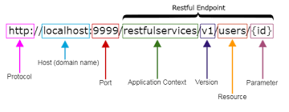
representation
어떤 리소스의 특정 시점의 상태를 반영하고 있는 정보(어떤 “리소스”에 대한 상태를 담은 정보)이다.
하나의 representation은 representation data와 representation metadata로 구성된다.
위의 예에서는 “hello”가 representation data이고, “Content-Type: text/plain”과 “Content-Language: en”이
representation metadata이다.
Server API
Server API (혹은 Server-side web API) 는 적절한 요청을 하였을 때,
그에 맞는 응답을 되돌려주는 창구 (Endpoint) 를 Web 을 통해 노출한 것을 말한다.
이런 Server API 는 어떤 정보들(환율, 주식 시세, 뉴스 …)을 요청하고 수정하기 위해서 만들어지는 경우가 많다.
Facebook 의 경우에도 글을 쓰면 https://www.facebook.com/webgraphql/mutation/ 과 같은 Domain 으로 요청이 가고, 그 요청에 의해서
Facebook 에 글이 써지게 된다.
이 Server API 를 만드는 방법론 중 하나로 REST 라는 것이 있으며,
이 방법론은 많은 Server API 들을 구성하기 위해 사용되어왔고, 또 현재도 많이 사용되고 있다.
RESTful 에서 parameter와 payload 차이
Parameter 는 말 그대로 parameter 입니다.
payload 는 body 에 담기는 data 입니다.
좀더 쉽게 설명드리면 parameter 는 URL 에 포함된다고 보시면 됩니다.
Parameter : url/param?name=test
Payload : Body 에 담김
parameter는 '조건', payload는 '데이터'라고 이해하면 될까요?
parameter 는 조건이 될수도 있지만 Payload 에도 조건을 담을수 있기때문에 그렇게 분리하기는 조금 어려울 것 같아요
이렇게 생각하시면 됩니다. GET/ POST 방식을 이해하신다면 더 빠른이해가 되실텐데요
URL 로 파일전송을 할때 그 파일이 어디에 담겨서 넘어갈까요?
또한, 번역서비스라고 생각해보시면 번역문장을 URL 에 포함시켜서 넘기는건 사실상 불가능합니다.
그런 모든것들이 Body 라고 하는 (Content-Length로 확인가능) 것들에 담겨서 넘어갑니다.
Body 는 사실상 굉장히 중요합니다. 그 데이터양이 URL Parameter 에 비해서 굉장히 크며
Body 값을 암호화 할 수도 있구요 (보안이유)
중요한 정보를 Body 에 넣어서 넘긴다면 그 값이 URL 에 포함되지 않으니(눈으로 보이지 않으니)
보안상으로도 중요하지요~ 물론 packet 을 갈취하면 다 보이지만 ;;;
GET(Body가 없음) > 조회 (Paramter 를 조회하는 조건으로 판단)
PUT, POST(둘다 Body 가 존재) > 생성하거나 입력 (Data 로 판단)
이렇게 되다보니까 parameter 를 조회, payload 를 data 로 판단할 수 있겠네요
| 특징 | GET 방식 | POST 방식 |
|---|---|---|
| 캐시화(cached) | 캐시될 수 있음. | 캐시되지 않음. |
| 브라우저 히스토리 | 히스토리에 쿼리 문자열이 기록됨. | 히스토리에 기록되지 않음. |
| 데이터 길이 |
데이터의 길이가 URL 주소의 길이 이내로 제한됨. (익스플로러에서 URL 주소가 가질 수 있는 최대 길이는 2,083자이며, 이 중에서 순수 경로 길이는 2,048자까지만 허용됨) |
제한 없음. |
| 데이터 타입 | 오직 ASCII 문자 타입의 데이터만 전송할 수 있음. | 제한 없음. |
| 보안성 | 데이터가 URL 주소에 포함되어 전송되므로, 아무나 볼 수 있어 보안에 매우 취약함. | 브라우저 히스토리에도 기록되지 않고, 데이터가 따로 전송되므로, GET 방식보다 보안성이 높음. |
GraphQL과 RESTful API
GraphQL 은 Server API 를 구성하기 위해 Facebook 에서 만든 Query Language 이다.
GET과 POST의 중요한 개념
GET은 가져오는 것이고 POST는 수행하는 것입니다.
이 개념만 잘 생각하고 있으면 상황에 따라서 어느정도 선택을 할 수 있습니다.(물론 그래도 좀 고민되는 예외상황들은 있게 마련이죠.)
좀 자세히 설명하면 GET은 Select적인 성향을 가지고 있습니다. GET은 서버에서 어떤 데이터를 가져와서 보여준다거나 하는 용도이지 서버의 값이나 상태등을 바꾸지 않습니다.
게시판의 리스트라던지 글보기 기능 같은 것이 이에 해당하죠.(방문자의 로그를 남긴다거나 글읽은 횟수를 올려준다거나 하는건 예외입니다.)
반면에 POST는 서버의 값이나 상태를 바꾸기 위해서 사용합니다. 글쓰기를 하면 글의 내용이 디비에 저장이 되고 수정을 하면 디비값이 수정이 되죠. 이럴 경우에 POST를 사용합니다.
그리고 가져오는 곳에 GET을 사용해야 하는 이유가 하나 더 있습니다.
얼마전에도 관련해서 포스팅한 적이 있지만 웹의 핵심이라고 할 수 있는 Link문제입니다.
기본적으로 웹에서 모든 리소스는 Link할 수 있는 URL을 가지고 있어야 합니다.
(퍼머링크(permalink)라면 더 좋겠지만 꼭 퍼머링크가 아니라고 하더라도)
그래야 Link를 할 수 있으니까요. 쉽게 말하면 어떤 페이지를 보고 있을때 다른 사람한테 그 주소를 주기 위해서 주소창의 URL을 복사해서 줄 수 있어야 한다는 것입니다.
POST를 할 결우에는 값이 내부적으로 전달되기 때문에 URL만 전달할 수 없죠. 글을 저장하는 경우에는 URL을 제공할 필요가 없기 때문에 POST를 해도 상관이 없는
것이고요.
퍼머링크는 인터넷에서 특정 페이지의 고유한 URL 주소를 뜻한다.
이 주소는 어떤 상황에도 관계없이 항상 동일한 내용을 가지는 페이지로 링크된다는 의미에서, 고유(permanent)한 주소라는 뜻의 permanent link를 줄여 만든 말이다.
한국어로 고유링크, 고유주소 등으로 부르기도 한다
GET방식으로 데이터를 보내기
클라이언트의 데이터를 URL뒤에 붙여서 보낸다. 위에서 쓴 예시처럼 아이디 패스워드를 보낸다고 하면,
www.example.com?id=mommoo&pass=1234 (예시로 쓴 URL입니다. 존재하지 않습니다.)
이런식으로 보낸다. URL 뒤에 "?" 마크를 통해 URL의 끝을 알리면서, 데이터 표현의 시작점을 알린다.
데이터는 key 와 value 쌍으로 넣어야 한다 윗 예시에서의 key는 id 랑 pass고 value는 mommoo랑 1234가 되겠다.
중간에 &마크는 구분자 이다. 2개이상의 key - value 쌍 데이터를 보낼때는 &마크로 구분해준다.
URL에 붙이므로, HTTP패킷의 해더에 포함되여 서버에 요청한다.
따라서, GET 방식에서 BODY에 특별한 내용을 넣을 것이 없으므로 BODY가 빈상태로 보내진다.
그러므로, 헤더의 내용중 BODY 데이터를 설명하는 Content-Type이라는 헤더필드는 들어가지 않는다.
URL형태로 표현되므로, 특정 페이지를 다른사람 에게 접속하게 할 수 있다.
또한 간단한 데이터를 넣도록 설계되어, 데이터를 보내는 양의 한계가 있다.
POST방식으로 데이터를 보내기
POST 방식은 GET 방식과 달리, 데이터 전송을 기반으로 한 요청 메서드이다.
GET방식은 URL에 데이터를 붙여서 보내는 반면, POST방식은 URL에 붙여서 보내지 않고 요청BODY에다가 데이터를 넣어서 보낸다.
따라서, 헤더필드중 요청BODY의 데이터를 설명하는 Content-Type이라는 헤더 필드가 들어가고 어떤 데이터 타입인지 명시한다.
컨텐츠 타입으로는 여러가지가 있지만, 몇가지를 적자면,
1. application/x-www-form-urlencoded
2. text/plain
3. multipart/form-data
등이 있다.
따라서 POST 방식으로 데이터를 보낼때는 위와 같이 컨텐츠 타입을 꼭 명시해줘야한다.
보통 작성하지 않는 경우는 1번의 컨텐츠 타입으로 셋팅된다.
1번의 컨텐츠 타입은, GET방식과 마찬가지로 BODY에 key 와 value 쌍으로 데이터를 넣는다. 똑같이 구분자 &를 쓴다.
2번의 컨텐츠 타입은, BODY에 단순 txt를 넣는다.
3번의 컨텐츠 타입은, 파일전송을 할때 많이 쓰는데 BODY의 데이터를 바이너리 데이터로 넣는다는걸 알려준다.
자바와 같이 oop 프로그래밍에서는 BODY에 데이터를 InputStream/OutputStream 클래스를 통해서 읽고/쓰고 한다.
Xml, Json, yaml 파일 포멧
이런 포맷들은 왜 사용할까요?
그걸 먼저 설명드리면,
우리가 타 시스템 간에 데이터를 주고 받을 때 데이터 포맷에 대한 약속이 필요합니다.
혼자 시스템을 개발하거나 내부 시스템 끼리는 "1-김태민-강사,2-아무개-학생" 이라는 문자열을 만들어서 "-(하이픈)"을 파싱해서 순서대로 "1"은 일련번호, "김태민"은 이름, "강사"는 구분이라는 규칙과, ",(콤마)"는 리스트를 나타내는 구분자라는 규칙을 세울 수 있을 겁니다.
그럼 데이터를 내부 시스템에 전송할때 포맷에 대한 형태는 말로써 혹은 내부 문서로써 정의해 놓으면 되기 때문에 데이터 크기는 엄청 작아 질 수 있겠네요.
근데 문제는 타 시스템들과의 연동을 할때입니다.
내부에서 세운 규칙을 타 시스템들과 데이터를 주고 받을때다 문서로주고 받기도 번거롭고, 데이터 규칙에 대한 문서들이 많아지게 되는 문제가 있습니다.
그래서 Xml이나 Json과 같은 데이터 포맷을 정의하고 그 포맷에는 규칙도 있습니다.
아주 오래전부터 사용되었던 포맷은 Xml이겠네요
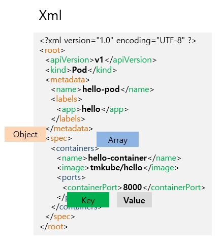
좀 정신없는 그림이지만..
이렇게 태그형식을 통해서 Key와 Value를 구분하고, 태그안에 태그를 넣어서 부모와 자식관계의 구조를 나타냅니다.
저도 요즘은 Xml 포맷을 자주 접하지 않아서 보고 있으면 어지럽네요;
근데 위에 Object와 Array 부분은 표시를 해놨지만 Xml포맷상으로는 구분이 안되는 부분도 있습니다.
다음은 똑같은 내용의 Json 포맷입니다.
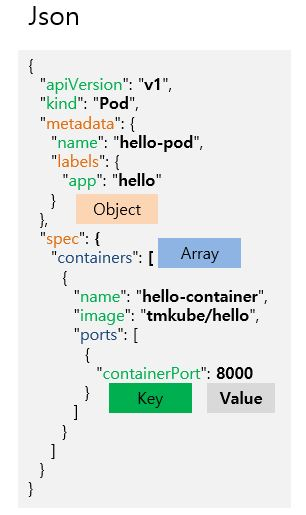
딱 봐도 간소해 보이네요. 좀 눈에 피로가 풀리는것 같습니다. ㅎ
그리고 Object 일 경우 {} 로 감싸주고있고, Array일 경우 []로 감싸주고 있어서 구분도 되고요.
Key도 아까 Xml처러 두번 들어가지 않아서 좋네요.
근데 {}, [], "" 이런 문자들이 지금은 좀 거추장스러워 보입니다.
(yaml 파일을 알기 전까진 몰랐지만요 ㅎ)
다음은 Yaml 입니다. 야믈이라고 보통 읽고요. yml 이라고도 씁니다.

안구정화가 되네요.
-(하이픈)을 통해서 Array임을 알수가 있습니다.
yaml을 몰라서 안쓴 사람은 있어도 한번 yaml을 쓰게되면 다른포맷은 불편하게 느껴지게 된다고 말씀드리고 싶네요.
가독성 비교를 한번 해볼까요?

yaml 포맷은 이제 많은 곳에서 사용되고 있습니다.
저도 개발 시스템 설정파일은 예전엔 conig.properies를 사용했는데 이제는 대부분은 config.yaml로 모두 바꾼 상태고요.
쿠버네티스에서도 API를 전송할땐 json 규격도 사용되지만
일반적으로 yaml을 권장하고 있습니다.
컴퓨팅 플랫폼(영어: computing platform)
소프트웨어가 구동 가능한 하드웨어 아키텍처나 소프트웨어 프레임워크(응용 프로그램 프레임워크를 포함하는)의 종류를 설명하는 단어이다.
일반적으로 플랫폼은 컴퓨터의 아키텍처, 운영 체제(OS), 프로그램 언어, 그리고 관련 런타임 라이브러리 또는 GUI를 포함한다.
플랫폼은 응용 소프트웨어를 실행하기 위해 쓰이는 하드웨어와 소프트웨어의 결합이다.
플랫폼은 하나의 운영 체제 또는 컴퓨터 아키텍처라고 단순히 말할 수 있으며 그 두 가지를 통칭해서 말할 수도 있다.
모델
서버에서 하나의 자원을 정의할 때 그것을 모델이라고 합니다
모델은 데이터베이스의 테이블과 1:1 매칭된다고 보시면 됩니다.
라우팅
클라이언트 요청과 서버의 로직을 연결하는것
클라이언트로부터 어떤 요청이 있을때 서버는 가지고 있는 기능 중에 이에 적절한 것을 찾아서 응답해 줘야하는데 이 두가지를 연결해 주는
것을
라우팅이라고 합니다.
어떤 네트워크 안에서 통신 데이터를 보낼 경로를 선택하는 과정
라우팅은 애플리케이션 엔드 포인트(URI)의 정의, 그리고 URI가 클라이언트
요청에
응답하는 방식을 말합니다.
Promise의 장점
복잡한 비동기 코드를 깔끔하고 쉽게 만들 수 있는 방법을 제공한다.
Chaining 을 통해 값을 전달하거나 연속된 일련의 작업을 처리할 수 있다.
Error handling에 대한 처리를 깔끔하게 할 수 있다.
콜백함수란..
일급객체인 함수를 파리미터로 넘겨
함수의 호출 제어권을 다른 문맥으로 넘기는것!!!(제어의 역전)
을 말하며
** 보통 서드파티 라이브러리 콜백 인경우...
비동기 응답호출인지 동기 응답호출인지 알수가 없고 신뢰성이 없기 때문에
서드파티 호출부를 Promise객체로 랩핑하여(프라미스객체의 파라미터 콜백안에 서드파티 호출부를
넣고 리졸브 리잭트함수로 서드파티 호출부의 콜백에서 추출할 값을 넣고 호출시킴)
즉, 재어의 재역전 시켜줌!(리졸브 리잭트함수로 스케쥴링됨)
프로미스가 콜백에서 무너졌던 비동기 코딩의 신뢰를
회복시킬 안전 장치라는 점에서 바라보면...
먼저 콜백을 사용했을 때 생길 수 있는 믿음성 문제에 대해서 짚어보자. 콜백을 넘긴 이후 다음과 같은 일들을 예상해 볼 수 있다.
- 너무 일찍 콜백을 호출
- 너무 늦게 콜백을 호출
- 너무 적게, 아니면 너무 많이 콜백을 호출
- 필요한 환경/인자를 정상적으로 콜백에 전달 못함
- 발생 가능한 에러/예외를 무시함
1. 먼저 너무 빨리 호출하고 늦게 호출하는 문제는 프로미스 설계 상으로 then() 콜백 이후 resolve(), reject() 중 하나로 스케줄링 되어 자동으로 호출되므로 해결
2. 프로미스는 정의상 단 한번만 호출된다.
3. resolve, reject 함수에 결과 값을 파라미터로 전달하여 콜백에 전달문제해결
4. 성공과 실패를 분리해서 메서드를 수행함으로써 에러 해결
** 보통 Promise를 쓰는이유는
콜백으로 비동기성을 표현할 때 순차성(Sequentiality)과 믿음성(Trustability)이 결여되어 문제가 생긴다. 즉
1. 순차성(Sequentiality)제공[비동기 처리 들을 순차적으로 실행]
2. 믿음성(Trustability)제공[기존 콜백함수의 문제점이었던]
하기위해서 Promise객체를 사용한다!!!!
더나아가
** 보통 Generator를 쓰는이유는
1. 순차성(Sequentiality)제공[비동기 처리 들을 순차적으로 실행] : 더 나아가 가독성 높은코드제공!
2. 코루틴으로 동시적인 특성 : "실행-정지-실행-정지”의 코루틴 형태를 잘 이용하면, 협력형 멀티태스킹 방식으로, 쓰레드 프로그래밍 없이 동시성 프로그래밍이 가능해집니다.
3. 비동기적 특징 : 동기적으로 작동되는 코루틴 특성이 비동기 코드를 작성하는데 도움을 줄 수 있습니다.이는 코드가 작성 된 형태는 동기적이나 실행되는 방식은 비동기라는 의미입니다.
4. 메모리 효율에 기여 : 지연연산, 지연호출을 통해 필요 할 때 값을 요구하기 사용해서 메모리를 효율적으로 사용할 수 있습니다.
지연연산 이란 값을 받기 까지 그 시간을 지연시키고 늦추는 것을 말합니다.
즉 값이 필요하지 않을 때는 조용히? 있다가 필요할 때가 되면 값을 요구하는 겁니다.
yield를 값을 넘겨주거나 저장하고, 값이 필요할 때 next()메서드 호출해 느긋하게 시간을 지연하며 작업 할수 있습니다.
Promise의 상태
- 대기(pending): 이행하거나 거부되지 않은 초기 상태
- 이행(fulfilled): 연산이 성공적으로 완료됨
- 거부(rejected): 연산이 실패함
Promise는 위와 같은 세가지 중 하나의 상태를 가집니다.
new Promise()에 전달한 함수에서 첫번째 인자인 resolve를 호출하면 이행(fulfilled) 상태가 됩니다.
만약 두번째 인자인 reject를 호출하면 거부(rejected) 상태가 됩니다.
그리고 비동기 작업이 아직 진행 중이면 아직 resolve나 reject를 호출하지 않았기 때문에 대기(pending) 상태가 됩니다.
(대기 중이지 않으며 이행 또는 거부 상태가 된 것을 처리(settled) 라고 부르기도 합니다.)
async/await
async/await를 사용하여 비동기 작업을 동기 작업인 것처럼 코딩을 가능하도록 합니다.
async는 비동기 작업을 하도록 하고, await는 비동기 작업인 Promise를
기다립니다.
async 키워드를 함수 정의 앞에 사용한다면, 함수 내부에서 await라는 키워드를 사용할 수 있다.
프로미스를 await하고 있을 때, 그
함수는 논-블로킹 상태에서 프로미스가
해결(resolve 또는 reject)될 때까지 일시 정지 상태가 된다.
그리고 프로미스가 완료된 후 그 값을 돌려 받는다. 만약 프로미스가 거절되면 해당 값(또는 에러)이
던져(throw)진다.
참고: await로 기다리는 모든 것들을 Promise.resolve()로 처리하기 때문에 꼭 기존 함수의 반환 값이 프로미스가 아니어도 괜찮다.
추상
추상: 덜 구체화된 무엇. 실체들 간에 공통되는 특성을 추출한 것을 말합니다.
객체: 상태(Attribute)와 행동(Method)을 가진 것.
클래스: 객체 생성을
위한
일종의 도면(설계도, 청사진).
초기화: 정의된 클래스를 이용하여 객체를 생성(인스턴스 생성)하는 것.
추상 클래스
실체 클래스들의 공통되는 필드와 메소드를 정의한 클래스를 말합니다.
추상 클래스는 실체 클래스의 부모 클래스 역할을 할 수 있습니다.
추상 클래스는 단독으로 객체 생성을 할 수 없고, 부모 클래스로만 사용됩니다.
자바스크립트에서는 추상 클래스와 인터페이스를 제공하지 않기 때문에 오직 클래스 만을 이용해서 추상화 작업을 해야 합니다.
추상화
- 공통점을 뽑아내는 것입니다.
- 객체 지향 프로그래밍에서 추상화(Abstraction)는 객체들의 공통적인 프로퍼티와 메서드를 뽑아내는 작업
- 코드상에서 구현(로직) 부분을 제외한 오직 선언 부분만을 설계하는 것을 말합니다.
[추상화-abstraction], [일반화 - generalization] 차이
[추상화-abstraction]
- 어떤 무언가를 구체적이지 않게 표현하는 행위
- 자세한 부분은 무시하고 필요한 부분만을 추출하는 활동
- 구체적인 것을 감추고(함수의 내부코드) 실제로 보고싶은 “전체적인 특성”(함수의 이름)을 드러내는 행위 ex) 추상클레스 및 함수
- 함수를 기본적인 추상화 방법으로 사용한다.
즉, 함수의 이름을 통해서 구체적으로 하는 일을 추상화 시켜서 나타낸다는 뜻이다.
예를 들어, "printf()"가 파일에 대한 출력을 담당한다는 의미로, 구체적인 출력에 관련된 내용을 추상적으로 대표해서 표현하는 것과 같다.
즉, 우리는 "printf()"가 실제로 출력에 대해서 하는 일은 알지 못하지만, 우리에게 무엇을 해줄지는 알고 사용한다.
그것으로도 구현하는데는 충분한 정보를 주기 떄문이다.
[일반화 - generalization]
- “공통된 속성”을 통해 상위의 개념을 만드는 것
- 연관성이 있는 2개 이상의 객체 집합을 묶어 상위의 객체 집합을 형성하는 것 ex) 일반화 프로그래밍-타입스크립트 제네릭
* 일반화 프로그래밍(Generic Programming)은 자료형(Data Type)을 일반화(Generalization)하는 것을 의미한다.
상속의 효과
상위 객체를 재사용해서 하위 객체를 빨리 개발할 수 있도록 한다.
반복된 코드의 중복을 줄여준다
유지 보수의 편리성을 제공해 준다.
객체의 다형성을구현할 수 있다.
캡슐화(encapsulation)
캡슐화(encapsulation)는 일반적으로 연관 있는 변수와 함수를 클래스로 묶는 작업을 말합니다.
그런데 이 작업은 클래스 만드는 작업과 비슷하다고 여길 수도 있습니다.
하지만 캡슐화에는 은닉성이란게 있어서 클래스에 담는 내용 중 중요한 데이터나 기능을 외부에서 접근하지 못하게 할 수 있습니다.
간결하게 설명하자면 객체의 특정 부분을 은닉화하여 사용에 제한을 두는 기술이다.
객체지향(다형성)
다형성 개념이란 어떤 한 요소에 여러 개념을 넣어 놓는 것으로
일반적으로 오버라이딩 (같은 이름의 메소드가 여러 클래스에서 다른 기능을 실행)이나
오버로딩 (같은
이름의
메소드가 인자의 갯수나 자료형에 따라서 다른 기능을 수행)을 의미합니다.
다형성이란 타입이 다른 자료형이 하나의 상위 자료형으로 속하게 되는 개념인데 OOP를 지원하는 언어에서
많이
사용한다.
다형성은 특정 기능을 선언(설계)부분과 구현(동작)부분으로 분리한 후 구현부분을 다양한 방법으로 만들어 선택하여 사용할 수 있게 하는 기능이다.
객체지향 프로그래밍
객체지향 프로그래밍의 네 가지 특징(추상화, 캡슐화, 상속, 다형성)을 골고루 사용해 코딩 하는 프로그래밍을 객체지향이라고 합니다.
자바스크립트를 객체지향적인 언어라고 말할 수
있는
가장 중요한 이유 중 하나는 프로토타입 상속(prototypal inheritance) 이라는 확장과 재사용을 가능하게 해주기 때문입니다.
transpiling vs compiling
transpiling : 한 언어로 작성된 소스 코드를 가져 와서 비슷한 수준의 추상화를 가진 다른 언어로 변환하는 과정 ex)바벨(babel)
compiling : 한 언어로
작성된
소스 코드를 다른 언어로 변환하는 과정
비동기 프로그래밍
어떤 작업을 요청한 후 다른 작업을 수행하다가 이벤트가 발생하면 그에 대한 응답을 받아 처리하는 것을 말함
비동기 프로그래밍을 사용하는 이유는 무엇일까요?
가장 큰이유는 속도 때문입니다.
동기 프로그래밍은 기능을 요청을 한 후, 요청이 끝날 때까지 무작정 대기를 해야 합니다. (block)
하지만 비동기 프로그래밍은 기능을 요청을 한후, 다른 작업을 하고 있다가, 끝났다는 이벤트를 받고 난 후 이후의 처리를 하면 되기 때문에, (non-block)
비동기 프로그래밍이 동기프로그래밍 보다 빠를 수 밖에 없습니다
자바스크립트의 비동기로직 구현원리
싱글 쓰레드 제약 내에서 블록킹(blocking)되는걸 막고자 기본적으로 제공해주는 시스템이 바로 프레임시스템이고
- 다른 프레임에서 실행되도록 명령을 지연시키는 것
- 여러개의 프레임으로 명령을 분산해 적재하는 것
즉, 각기 다른 프레임에 응답시의 로직을 심는것으로 비동기를 구현!!
동기와 비동기의 차이
해야할 일(task)가 빨래, 설거지, 청소 세 가지가 있다고 가정한다.
이 일들을 동기적으로 처리한다면 빨래를 하고 설거지를 하고 청소를 한다.
비동기적으로 일을 처리한다면 빨래하는 업체에게 빨래를 시킨다.
설거지 대행 업체에 설거지를 시킨다. 청소 대행 업체에 청소를 시킨다.
셋 중 어떤 것이 먼저 완료될지는 알 수 없다.
일을 모두 마친 업체는 나에게 알려주기로 했으니 나는 다른 작업을 할 수 있다.
이 때는 백그라운드 스레드에서 해당 작업을 처리하는 경우의 비동기를 의미한다.
일반적으로 동기와 비동기의 차이는 메소드를 실행시킴과 동시에 반환 값이 기대되는 경우를 동기 라고 표현하고 그렇지 않은 경우에 대해서 비동기 라고 표현한다.
동시에라는 말은 실행되었을 때 값이 반환되기 전까지는 blocking되어 있다는 것을 의미한다.
비동기의 경우, blocking되지 않고 이벤트 큐에 넣거나 백그라운드 스레드에게 해당 task 를 위임하고 바로 다음 코드를 실행하기 때문에 기대되는 값이 바로 반환되지 않는다.
동기화 비동기화 동기식 비동기식 이란?
동기화란 말이 다방면에서 사용하고 있어서 개념을 잡기가 좀 어렵습니다.
비동기식이니 동기식이라는 말도 있고요.
동기화를 이해할려면 클라이언트와 서버라는 개념을 먼저 이해해야 합니다.
클라이언트에서 작업을 요청하면 서버에서 응답하는 형식이죠.
그런데 이 응답하는 방식에 따라 동기식이니 비동기식이라고 합니다.
여기서 동기식은 클라이언트의 요청이 있어야만 서버가 응답을 보내고
서버의 응답을 기다리다가 응답이 와야만 그에 따라 클라이언트가 반응하는 방식으로 서버와 클라이언트의 작업을 하나로 일치시키는 방식입니다.
요청과 응답,응답과 작업, 다시 요청과 반응 이라는 식이죠.
폴더의 자료를 최신으로 유지하는 것도 클라이언트에서 자료갱신을 요청하면 서버에서 응답해서 최신자료를 보내주고 클라이언트 받아서 갱신하는 것입니다.
(하나의 작업으로 일치시켜서 작동하는 동기식입니다.)
일반화하면 어떤 작업을 하기 위해 두 개의 별개의 장치간에 시간적으로 동시에 하나의 연결을 만드는 것입니다.
그렇게하면 두 개의 장치 안의 자료가 시간적으로 일치하게 됩니다.
이런 방식은 시간적으로 데이타가 서로 일치해야 하는 경우에 꼭 필요한 방식입니다.
예를 들어 은행계좌 입출금시 동기화식으로 데이타가 처리됩니다.
만약 비동기식으로 처리된다면 CD기에서 출금을 했는데 은행의 중앙컴퓨터에서는 처리가 안 되어 있게 되는 자료의 불일치성이 나타나게 됩니다.
이 개념은 네트워크나 컴퓨터 구조에서 아주아주아주아주~ 많이 쓰이는 개념이거든요..
동기화는 시간에 딱딱 맞춰서 무슨 일을 진행시키는 것을 말합니다.
대한민국 군인들은 모두 아침 6시에 일어나서 8시에 일을 하고 11시쯤에 밥을 먹고 5시 30분부터 휴식을 취한 후 밤 10시에 취침에 들죠.
이런게 바로 동기화의 예입니다. 기준(보통은 시간입니다.)에 맞춰서 동작이 딱딱 이루어지죠.
네트워크에서 송신측과 수신측이 동기화되어있다고 말하는데, 한마디로 어떤 시간에 누가 데이터를 보내는지 모두 알고 있다는 뜻입니다.
맨처음 1분은 A가 데이터를 보내고 그다음 1분은 B가 데이터를 보내고 그다음 1분은 C가 데이터를 보낸다는 걸 송신측과 수신측 모두 알고 있기때문에 누가 데이터를 보내고 있는지에 대한
혼란이 없죠.
전산쪽에서는 TDM 이라는 방식이 있거든요. 각각의 source(데이터를 보내는 쪽)는 자신에게 주어신 시간동안만 데이터를 전송할 수 있도록 디자인되어있는데 대표적인 동기화 방식이라고 할
수 있습니당.
그리고 비동기식은 어떤 기준에 맞춰서 데이터가 전송되는게 아니라, 필요할때마다 그때그때 데이터를 전송하는 거죠...
그때그때 데이터를 보내야 하기때문에 가장 큰 문제는 지금 전송되는 데이터가 누구에게 도착하는 것이고 또 누가 보내고 있는지, 그 길이는 어느정도인지(어디까지만 받아야 하는지) 를 결정해야
해요.
따라서 보내기 전에 "내가 이제부터 A에게 보내려고 한다"라고 알려주고, 다 보내고 나면 "이제 다 보냈다" 라는 것 등을 알려줘야 해요.
게다가 동시에 여러명이 보내려고 할 수도 있겠죠. 동기식에서는 기준에 맞춰서 보내는 순서가 있으니까 질서가 잡혀있지만 비동기식에서는 이런 순서가 없으니까 한마디로 개판이라고 할 수
있져..^^;;
(서로 보내겠다고 난리치는 경우도 있을수 있을거에요..) 따라서 비동기화가 질서를 잡는데 더 어렵죠..
그렇다고 동기화가 더 좋은건 아니에요.
동기화는 매 단위시간마다 데이터를 전송할 수 있는 송신자가 정해져 있는데,
만일 B는 더이상 보낼 데이터가 없어도 자신에게 주어진 시간은 여전히 B만 데이터를 보낼 수 있어서 많은 데이터를 보내야 하는 다른 송신자들은 데이터 전송에 더 오랜 시간이 걸릴 수 밖에
없어요.
(효율성이 많이 떨어진다는 얘기이기도 하죠..)
양쪽 모두 일장일단이 있으니까 주어진 환경에 맞게 어느 방식을 써야할지 결정해야 하겠죠..
*동기식 synchronous (transmission)
동기식 전송은 한 문자 단위가 아니라 미리 정해진 수 만큼의 문자열을 한 묶음으로 만들어서 일시에 전송하는 방법이다.
이 방법에서는 데이터와는 별도로 송신측과 수신측이 하나의 기준 클록으로 동기신호를 맞추어 동작한다.
수신측에서는 클록에 의해 비트를 구별하게 되므로, 동기식 전송을 위해서는 데이터와 클록을 위한 2회선이 필요하다.
송신측에서 2진 데이터들을 정상적인 속도로 내 보내면, 수신측에서는 클록의 한 사이클 간격으로 데이터를 인식하는 것이다.
동기식 전송은 비동기식에 비해 전송효율이 높다는 것이 장점이지만 수신측에서 비트 계산을 해야하며, 문자를 조립하는 별도의 기억장치가 필요하므로 가격이 다소 높은 것이
단점이다
*비동기식 asynchronous (transmission)
에디터 내에 동기신호를 포함시켜 데이터를 전송한다.
송신측의 송신 클록에 관계없이 수신신호 클록으로 타임 슬롯의 간격을 식별하여 한번에 한 문자씩 송수신한다.
이때 문자는 7~8 비트로 구성되며, 문자의 앞에 시작비트 (start bit)를, 끝에는 정지비트 (stop bit)를 첨가해서 보내는 방법이다.
비동기식 전송은 시작비트와 정지비트 사이의 간격이 가변적이므로 불규칙적인 전송에 적합하다.
또한 필요한 접속장치와 기기들이 간단하므로 동기식전송 장비보다 값이 싸다는 장점이 있다.
동기식은
이력 A 가 들어가면 출력 B가 바로 나오게끔 만들어져 있게 설계 되고요
비동기식은 그렇지 않죠
비동기식은 딜레이같은 문제를 해결해야 되기땜에 더 복잡하고
기술적으로 어렵습니다.
클로저
1.내부 함수는 외부 스코프에 선언된 변수를 참조 할 수있다.
2.클로저는 자신을 생성한 함수보다 더 오래 지속된다.
3.클로저는 내부적으로 외부 변수에 대한 참조를
저장하고
저장된 변수를 읽고 갱신할수 있다.
즉 생성될 당시의 환경을 기억하는 함수를 말한다. 환경이라고 하면 스코프체인 자체를 말하는데 스코프체인을 통해 접근할 수 있는
변수나
함수가 스코프가 해제되어야 할 시점에도 사라지지 않는다는 말이다
클로저를 객체를 생성하는 또 다른 방법이라고 생각할 수 있다. 컨텍스트를 this로 접근하는 객체와는 다르게
컨텍스트를
스코프로 접근하는 객체인 것이다.
한 번 동일한 부모 스코프에 있는 클로져들에 대한 스코프가 생성되고 나면 이것은 공유된다는 점
외부 함수 ec는 종료되지 못하고 갇혀버린 메모리에
남아있게된다
갇혀버린 메모리에 대한 직접접근은 할 수 없게되며 항상 클로저 함수를 통해 이용해야 된다.
outer()가 종료되면서 반환하는 익명 함수가
변스스코프체인을 통해 outer()의
지역변수를 붙잡고 있음으로서 해당 함수가 종료되지못하게 하고있는 것이다.
outer()는 종료되지도, 메모리에서 제거되지도 못한채 자신의 지역변수가 참조되고있기때문에
계속
메모리에 남게되고 outer()의 지역변수인 num은 종료되지 못하고 갇혀버린 메모리에 남아있게된다.
함수가 생성될 때 그 함수의 렉시컬 환경을
포섭(closure)하여
실행될 때 이용한다.
외부함수의 변수에 접근할수 있는 내부함수
렉시컬 스코프 (Lexical Scope)
자바스크립트는 렉시컬 스코프의 규칙을 따른다.
렉시컬 스코프 규칙은 콜 스택과 관련 없이 소스코드가 작성된 컨텍스트를 기준으로 스코프를 정의하고, 런타임에 이것을 변경하지
않는
것을 말한다
평가(evaluation)
자바스크립트에 평가(evaluation)라는 말은 자바스크립트를 실행해서 그 결과 값을 가져온다는 것을 의미한다.
그렇게 때문에 덧셈과 같은 수식이나 함수 호출 등이 일어날 수있다.
eval()의 성능
예전 버전의 브라우저에서는 eval()은 중복 Interpretation 패널티를 가졌다.
즉 코드가 한번 interpret 되고, eval() 이 한번더 interpret 가 된다는 말이다.
eval()이 한번더 interpret될때는 자바스크립트 컴파일링 엔진 없이 되기 때문에 브라우저에서 10배 정도 느려진다
최근의 자바스크립트 컴파일 엔진에서도 eval()은 여전히 문제를 내포 하고있다.
대부분의 엔진들은 2가지 방법으로 코드를 실행 하는데. “Fast path “, Slow path ” 로 돈다.
fast path코드는 안정적이고 예측 가능한 코드들이고 빠르게 실행을 위해 컴파일 된다.
하지만 slow path의 경우 예측 하기 힘들기 때문에 컴파일 하기 어렵기 때문에 여전히 interpreter에 의해 실행 된다.
즉 eval()부분은 최근의 빠른 자바스크립트 엔진을 사용 하지 못하고 예전 브라우저 속도로 실행 된다는 말이다. ( 다시 말하자면 10 배 느리다. )
webpack 번들링(bundling)
webpack 은 이렇게 import(혹은 require) 한 모듈들을 불러와서 한 파일로 합칩니다. 이 작업을 번들링(bundling) 이라고 합니다.
모듈(Module)
Module
모듈은 프로그램의 일부분이다. 프로그램은 하나 이상의 모듈의 조합으로 구성된다
모듈은 하나 또는 그 이상의 Routine(함수, 메서드, 프로시져 등)으로 구성된다
모듈은 우리 프로그램을 구성하는 부품과 같다고 생각할 수 있겠네요
'그럼 라이브러리는 모듈이랑 무슨 차이가 있지?'
라이브러리는 우리 코드를 완성하기 위한 외부 자원(모듈)이라고 생각하면 좋을 것 같습니다
자동차를 프로그램에 빗대어 보면 바퀴, 핸들 등은 부품(모듈)이고 네비게이션 시스템, 차량용 스피커 등은 외부 자원 (라이브러리) 가 아닐까요?
Module System
우리는 하나의 파일에 모든 코드를 다 작성할 수는 없습니다
(물론 다 작성해도 됩니다 범법은 아니잖아요?)
그래서 보통은 프로그램을 만들다 보면 여러가지 모듈이 생깁니다
(index.js, util.js, common.js ...)
역할에 맞게 분리된 모듈들은 다른 모듈에서 필요로 하게 됩니다
그럼 모듈을 어떻게 불러올까요?
우리가 알고 있는 방법은 대표적으로 3 ( + 1 ) 가지 입니다
*ES6 Modules(ESM) → import *
*CommonJS → require *
*AMD → define - require *
*Browser → <script src=""></script> *
(이 외에도 System.js, Require.js 등의 모듈 로더가 있습니다)
ESM의 경우에는 클라이언트 사이드 (브라우저) 에서 사용할 수 있는 모듈 시스템 입니다
CommonJS 는 Node.js 의 모듈 시스템으로 채택되어 활용되고 있습니다
AMD는 require.js 라는 구현체를 활용해 환경에 구애받지 않고 사용할 수 있습니다
물론 CommonJS 를 브라우저에서도 쓸 수 있는 방법이 있고
ESM 또한 Node.js 사용할 수 있는 방법은 있기때문에
환경 종속적으로 딱 잘라 생각할 필요는 없어 보입니다
모듈과 컴퍼넌트
모듈과 컴퍼넌트를 쓰는이유
유지보수성 : 기능들이 모듈화가 잘 되어있다면, 의존성을 그만큼 줄일 수 있기 때문에 어떤 기능을 개선한다거나 수정할 때 훨씬 편하게 할 수 있다. 대상모듈만 변경하면 되기 때문에!
네임스페이스화(캡슐화) : 자바스크립트에서 전역변수는 전역공간을 가지기 때문에 코드의 양이 많아질수록 겹치는 네임스페이스가 많아질 수 있다. 그러나 모듈로 분리하면 모듈만의 네임스페이스를 갖기 때문에 그 문제가 해결된다. 캡슐화하여 코드의 은닉화!!
재사용성 : 똑같은 코드를 반복하지 않고 모듈로 분리시켜서 필요할 때마다 사용할 수 있다.
캡슐화하여 필요한 변수나 메서드를 내보냄!!
즉, 이를통해 동일기능을 가진 코드들은 부품화해서 각부분을 분리함!
[프로그램 기능의 단위 크기 비교]
함수 < 클래스 < 모듈 < 패키지 < 컴퍼넌트
컴퍼넌트 는
재사용성이 중요하며!!
UI 컴퍼넌트는 다른개념으로 재사용 가능한 뷰페이지의 구성요소(모듈)이라고 보면된다!!!
ex) 리액트는 이러한 컴퍼넌트 기반 뷰라이브러리이다!!!
탬플릿 은
UI 컴퍼넌트들이 모여진 상태...
실 데이터가 없는 구조!
타이머 함수
http://boycoding.tistory.com/56
타이머 함수는 지정된 시간이 지난 후 큐에 코드를 삽입하는 방식으로 동작합니다.
타이머 함수에서 가장 중요한 점은 코드가 실행될 시점이 아니라 큐에 추가될 시점을 지정하는 것 입니다.
window.requestAnimationFrame()
브라우저에게 수행하기를 원하는 애니메이션을 알리고 다음 그리기가 진행되기 전에 해당 애니메이션을 업데이트하는 함수를 호출하게 합니다.
이 메서드는 다시 그리기 이전에 실행할 콜백을 인자로 받습니다.
화면에서 시각적 변화가 발생하고 있을 때 개발자는 브라우저에서 정확한 시간(프레임 시작 시)에 작업을 수행하길 원합니다.
자바스크립트가 프레임 시작 시 실행되도록 보장하는 유일한 방법
requestAnimationFrame은 인자로 함수를 하나 받고 반환값으로 id를 토하는데 이 id는 오직 0이 아니란 것만 보장할 뿐 어떤 값이다라고 특정할 수 없습니다.
중요한 건 인자로 받은 함수가 다음 렌더링 갱신 후에 호출되는데 이 함수가 그냥 호출되는게 아니라 인자로 DOMHighResTimeStamp라는걸 받게 되어있습니다.
DOMHighResTimeStamp를 일반적인 메소드로 얻으려면 performance.now() 를 사용할 수 있다는 것을 알 수 있습니다.
performance.now 와 Date.now
Date.now는 현재 시간인데 비해, performance.now는 브라우저가 문서를 로딩한 시점으로부터의 경과시간을 표현한다.
브라우저를 3시에 켜서
3시 10분에
Date.now를 실행하면 3시 10분이 나오고
performance.now를 실행하면 10분이라고 나온다는 뜻입니다.
몽키패칭(monkey-patching)
ex)
function fn() {
arguments.forEach = Array.prototype.forEach;
arguments.forEach(function (v){ console.log(v)});
}
fn(1, 2, 3);
네이티브 객체나 함수를 프로그램 실행 시 다른 객체나 함수로 확장하는 것을 몽키패칭이라 한다.
이는 캡슐화를 망치고 표준이 아닌 기능을 추가해 네이티브 객체를 오염시키므로사용하지말아야 한다.
그러나 신뢰성 있고 매우 중요한 몽키패칭의 특별한 한가지 사용법이 있는데, 바로 폴리필(polyfill)이다.
폴리필은
Array.prototype.map과
같이 자바스크립트 엔진에 새롭게 추가된 기능이 없는 경우, 비슷한 동작을 하는 다른 함수로 대체하는 것을 말한다.
폴리필과 같이 자바스크립트 기능의 호환성 유지 목적을
제외하고는
어떤 경우에도 네이티브 객체의 확장은 옳지 않다.
폴리필(polyfill)
브라우저에서 지원하지 않는 api를 보충해 주는 코드를 말한다.
인라인 캐싱(Inline Caching; IC) V8
인라인 캐싱은 같은 타입의 객체에서 같은 메서드를 반복적으로 호출하는 경향이 있다는 관찰에 의존한다.
인라인 캐싱은 같은 타입을 가진 객체가 히든 클래스를 공유하는 것이 중요한
이유이기도
하다.
만약에 같은 타입을 가진 객체가 서로 다른 히든 클래스를 갖고 있다면(이전의 예제에서처럼), V8은 인라인 캐싱을 사용할 수 없다.
왜냐하면, 두 객체가
같은 타입임에도
불구하고, 히든 클래스가 두 객체의 프로퍼티를 다른 오프셋에 할당할 것이기 때문이다.
IC는 특정 호출 지점에 접근하는 객체들이 주로 같은 타입으로
사용된다는
점을
이용하여 객체의 맵과 해당 속성의 offset을 코드 내부에
캐싱해 다음 접근 시에 빠르게 속성을 접근할 수 있도록 한다.
this Binding
this는 유일하게 사용자가 실행 컨텍스트에서 접근 가능한 부분이다.
this 는 현재 컨텍스트가 참조하고 있는 객체를 가르키며 이 값은 어떻게 함수가 호출되었는지에 따라
달라진다.
instanceof 의 거짓말
'instanceof'는 예상한대로 엄격한 타입 체크 언어와 비슷하게 타입을 체크하지 않는다.
대신에 prototype객체에 대한 동일성만 체크 한다. 이런 방식은 좀
멍청하다.
이렇게 하면 다른 실행 컨텍스트간의 타입체크에서 제대로 역할을 하지 못한다.
High-order-function(고차함수)
고차 함수(High-order function)는 함수를 받아서 함수를 반환하는 것을 말하는데,
다른 함수를 이용해서 완전히 새로운 함수를 조립 하는 방법으로 프로그램을 만들
수
있다.
또는 전달인자로 다른 함수를 받는 함수
팩토리 함수
함수가 객체를 반환할 때, 우리는 이것을 _팩토리 함수_라고 부른다.
커링
다중인자를 받는 함수를 단일 인자를 받는 함수열로 변경하는 녀석이다
보틀넥(bottleneck)
병목을 가리키는 말로서 시스템 전체의 효율을 저해시키는 부분을 가리킨다.
병 속에 들어있는 물은 갑작스럽게 좁아진 병목에 막혀서 나오기가 어렵다.
즉 하나의
일이나 프로젝트를
개선하기 위해서는 우선적으로 보틀넥이 제거되어야 하고,
이것이 남아 있는 이상 다른 부분을 아무리 개선시켜도 시스템 전체의 효율은 향상되지 않는다.
오브젝트 풀링
오브젝트 풀링이란, 사용이 끝난 객체를 삭제하지 않고 저장해 두었다가, 필요할 떄가 오면 다시 사용하는 식의 개발 방법입니다.
즉, 오브젝트 풀링을 하면 '메모리 관리에
필요한
시간이 그만큼 줄어듭니다.'
로깅(Logging)
로그(Log)란 프로그램 개발이나 운영 시 발생하는 문제점을 추적하거나 운영 상태를 모니터링하기 위한 텍스트다.
원시 타입이라면 Watch 표현식과 중단점을 사용하라. 비동기
코드의
경우, 참조 타입에 대한 로깅을 피하라.
Iterator, Iterable, Generators
Iterable이라는 말 그대로 반복 가능한 객체
Iterator는 next메서드를 가지고있는 객체이다. 이 메서드는 순차적으로 원소들을 탐색하며,
next메서드의 호출시마다
새로운 객체를 반환한다.
반환되는 객체는 value 와(또는 = and/or) done 프로퍼티를 가지고 있으며, 탐색이 완료될 때 done프로퍼티의 값이 true가 된다.
Iterable은 Symbol.iterator라는 메서드를 가지고있는 객체이다. 이 메서드가 Iterator를 반환한다.
Generator는 Iterable이면서 Iterator인 객체의 특별한 종류이다.
이 객체는 일시정지와 재시작 기능을 여러 반환 포인트들을 통해 사용할 수 있다.
이러한 반환 포인트들은 yield 키워드를 통해 구현할 수 있으며,
오직 generator 함수에서만 사용할 수 있다.
next호출시마다 다음 yield의 expression이 반환된다.
yield value를 사용하면 한가지 값을
반환할
수 있고, yield* iterable을 사용하면 해당되는 Iterable의 값들을 순차적으로 반환시킬 수 있다.
Generator의 반복이 끝나는 시점은 3가지 경우인데,
generator
함수에서 return 사용, 에러 발생 그리고 마지막으로 함수의 끝부분까지 모두 수행된 이후, 이렇게 3가지 경우이다.
그리고 이때 done 프로퍼티가 true가 될 것이다.
이러한 generator함수는 Generator객체를 반환하며, function*키워드로 정의할 수 있다. 또는 클래스에서 메서드 이름 앞에 *을 붙여 정의할 수도
있다.
제너레이터 함수는 yield 키워드로 표시된 값들을 중간에 "반환"하면서 하나의 함수에서 여러 개의 값을 반환할 수 있게 하는 함수이다.
제너레이터 함수는 yield 키워드로 표시된 각각의 시점에서 함수의 실행을 일시적으로 멈출 수 있다.
잘 알고 있는 "return" 키워드로 이 함수의 최종 반환 시점에 도달해서 함수가 종료하기 전까지 말이다.
yield*
yield* 표현식은 다른 generator 또는 이터러블(iterable) 객체에 yield를 위임할 때 사용됩니다.
function* func1() {
yield 42;
}
function* func2() {
yield* [1, 2];
yield* func1();
}
const iterator = func2();
console.log(iterator.next().value);// expected output: 1
console.log(iterator.next().value);// expected output: 2
console.log(iterator.next().value);// expected output: 42
Generator Methods
링크 next(value)
이 메서드는 다음 값을 얻는 역할을 하며, Iteraotr의 next메서드와 유사하지만,
optional argument를 받는다는 점이 다르다.(첫번째 호출에서는
받지
않고 무시한다.) 이 매개변수는 바로 이전의 yield [expression]의 반환값으로 사용된다
순수함수
외부 스코프의 변수 값에 영향을 받지 않는 함수다.
또 다른 장점은 바로 참조 투명성 이다. 어려워 보이는 단어지만 뜻은 간단하다. 입력이 같으면 출력은 항상 같다는 뜻이다
+ 외부의 상태를 변경하지 않는 함수
즉 순수 함수는 외부의 상태를 변경하지 않으면서 동일한 인자에 대해 항상 똑같은 값을 리턴하는 함수다.
이벤트 루프, 태스크 큐
자바스크립트는 이벤트 루프를 이용해서 비동기 방식으로 동시성을 지원한다.
자바스크립트가 구동되는 환경(브라우저, Node.js등)에서는 주로 여러개의 스레드가 사용되며,
이러한 구동 환경이 단일 호출 스택을 사용하는 자바 스크립트 엔진과 상호 연동하기 위해 사용하는 장치가 바로 '이벤트 루프'인 것이다.
태스크 큐는
말 그대로 콜백 함수들이
대기하는 큐(FIFO) 형태의 배열이라 할 수 있고,
이벤트 루프는 호출 스택이 비워질 때마다 큐에서 콜백 함수를 꺼내와서 실행하는 역할을 해 준다.
콜백함수
1급 객체인 함수를 인자로 넘겨서 함수 호출의 제어권이 다른 컨텍스트(문맥)으로 넘어가는 것
쿠키
쿠키의 장점
서버와의 커뮤니케이션을 위해 사용될 수 있다.
직접 삭제하지 않아도, 원하는 시기에 자동으로 만기(expire) 되도록 설정할 수있다.
쿠키의단점
페이지 부하를 증가시킨다
적은 양의 데이터만 저장할 수 있다
문자열만 저장할 수 있다
잠재적인 보안 이슈가 있다
웹 저장소API (로컬저장소와 세션 저장소)가 소개된 이후로는 더이상 클라이언트 측의 저장소로 권장되지 않는다
**세션과 쿠키 개념이 헷갈리시는 분들이 있으신데, 세션은 서버에서 가지고 있는 정보이며 쿠키는 사용자에게 발급된 세션을 열기 위한 열쇠(SESSION ID)를 의미합니다.
쿠키만으로 인증을 사용한다는 말은 서버의 자원은 사용하지 않는다는 것이며, 이는 즉 클라이언트가 인증 정보를 책임지게 됩니다.
그렇게 되면 위의 첫번째 방식처럼 HTTP 요청을 탈취당할 경우 다 털리게 됩니다. 따라서 보안과는 상관없는 단순히 장바구니나 자동로그인 설정 같은 경우에는 유용하게 쓰입니다.
결과적으로 인증의 책임을 서버가 지게하기 위해 세션을 사용하는 겁니다(사용자가 해킹당하는 것보단 서버가 해킹당하는게 훨씬 어려우니까요!) 사용자(클라이언트)는 쿠키를 이용하고, 서버에서는 쿠키를 받아 세션의 정보를 접근하는 방식으로 인증을 합니다.
로컬(세션) 저장소(세션스토리지, 로컬스토리지)
로컬 저장소는 웹 저장소 API 중 한가지 형식으로, 브라우저 내부에 키-값 쌍을 저장하기 위한 API이다.
로컬 저장소는 단순한 데이터를 저장하기 위해 쿠키보다 더 직관적이고
안전한
API를 제공함으로써, 쿠키의 문제들을 해결하기 위해 만들어졌다.
세션 저장소는 웹 저장소 API의 두번째 형식이다.
세션 저장소는 데이터가 오직
브라우저의 탭
세션에만 저장된다는 것만 빼고는 로컬 저장소와 정확히 동일하다.
사용자가 다른 페이지로 이동하거나 브라우저를 닫으면, 데이터가 삭제된다.
장점
데이터를 저장하기 위한 (쿠키보다 더) 단순하고 직관적인 인터페이스를 제공한다
(쿠키보다 더) 안전한 클라이언트 측의 저장소이다
(쿠키보다 더) 많은
데이터를
저장할 수 있다
단점
오직 문자열만 저장할 수 있다
IndexedDB
IndexedDB는 브라우저에 데이터를 저장하기 위한 더욱 더 복잡하고 다방면의 해결책이다.
이는 "많은 양의 구조화된 데이터를 클라이언트 측에 저장하기 위한 저수준의
API"
(Mozilla) 이다.
이는 자바스크립트를 기반으로 하는 객체지향 데이터베이스로서, 키를 이용해 인덱스되는 데이터를 쉽게 저장하거나 인출할 수 있게 해
준다.
IndexedDB의 장점
더 복잡하고 구조적인 데이터를 다룰 수 있다
여러개의 "데이터베이스", 그리고 각 데이터베이스 내부에 여러개의 "테이블"을 가질 수
있다
더 많은 양의 데이터를 저장할 수 있다
상호작용 시에 더 많은 제어를 할 수 있다
IndexedDB의 단점
웹 저장소 API보다 사용법이 더
복잡하다
각 저장소 비교
Session 이 생성되고 관리되는 과정
HTTP는 stateless(무상태)다.
어떤 넘이 수백 번을 요청을 보내더라도 얘가 걘지 걔가 얘인지 알 수가 없다.
한 마디로 메멘토다. 장기 기억력을 상실했다.
요청에 대한 처리가 끝나면 갑자기 지금까지 했던 모든 것을 잊어버린다.
근데 분명히 웹에서 state(상태)는 필요하다. 안 그러면 장바구니 구현 어떻게 하는데?
그 것을 위하여 세션이라는 것이 HTTP를 보완해준다.
세션은 무언가?
한 마디로 말해서 클라이언트마다 주어지는 객체들이다.
클라이언트 하나당 세션 객체 하나가 주어진다.
그럼 클라이언트는 무엇인가? 특정 아이디? 특정 IP?
다 아니다. 클라이언트는 바로 브라우저 창 그 자체다.
인터넷 익스플로러를 더블 클릭을 두 번 눌러서 키면 니는 지금 클라이언트를 두 개나 생성한 것이다.
(아 물론 ctrl+n을 눌러서 만드는 건 같은 클라이언트임... 좀 다르더라구..)
이제 클라이언트가 뭔지 이해가 갔다.
클라이언트는 서버에 HTTP Request를 보낼 때마다 어느 것이 자기 세션인지 서버에 말을 해줘야 한다.
서버는 띨하니까!
그럼 세션 객체마다 구별해야 하는 정보가 있어야 한다.
이 것이 바로 session id다.
서로 다른 클라이언트는 서로 다른 session id를 이용하여,
서로 다른 session 객체에 접근하게 된다.
근데 아무 것도 없는 無의 상태에서 사용자의 브라우저가 갑자기 신내림을 받아서 session id를 지가 만들어낼 리가 만무하다.
세션은 서버 쪽에서 만들어진다.
원리는 이렇다.
< 세션 사용을 필요로 하는 사용자의 첫 요청>
서버의 생각///// 어라, HTTP Request의 헤더에세션 id가 없네?
이 넘은 처음 요청한 넘이다. 세션 객체를 하나 새로 만들고
그 객체의 key를 HTTP Response의 헤더로 넘겨주자.
그 HTTP Response를 받은 클라이언트의 생각/////
어 이넘이 세션 ID를 줬어. 쿠키에 설정해놓자.
< 그 다음 요청들>
클라이언트의 생각///// HTTP Request 헤더에 session id를 넣어서 보내자.
그 걸 받은 서버의 생각///// 이 넘은 예전에 보내줬나보네... 기억이 안나. 객체 만들필요 없겠군. 있던거 쓰자!
쿠키가 웹 브라우저에 사용자의 상태를 유지하기 위한 정보를 저장했다면, 세션(session)은 웹 서버 쪽의 웹 컨테이너에 상태를 유지하기 위한 정보를
저장한다.
세션이란 일정 시간동안 같은 사용자(정확하게 브라우저를 말한다)로 부터 들어오는 일련의 요구를 하나의 상태로 보고 그 상태를 일정하게 유지시키는 기술이라고 한다.
또한 여기서 일정 시간이란 방문자가 웹 브라우저를 통해 웹 서버에 접속한 시점으로부터 웹 브라우저를 종료함으로써 연결을 끝내는 시점을 말하며
즉, 방문가자가 웹서버에 접속해 있는 상태를 하나의 단위로 보고 세션이라고 칭한다는 것.
서버인증
[1] 계정정보를 요청 헤더에 넣는 방식
가장 보안이 낮은 방식은 계정정보를 요청에 담아 보내는 방식입니다. 위에서 언급한 HTTP 요청에 인증할 수단에 비밀번호를 넣습니다.
네. 정말 최악의 인증방식입니다. 데이터를 요청할 때마다 사용자의 프라이빗한 정보를 계속해서 보낸다는 건 상당히 보안에 안좋습니다.
보통 앱에서는 서버로 HTTP 요청을 할 때 따로 암호화되지 않습니다. 따라서 해커가 마음만 먹으면 HTTP 요청을 가로채서(intercept) 사용자의 계정정보를 알 수 있습니다.
본 방식은 절대로 실제 서비스에서는 쓰이지 않습니다(HTTP 요청을 암호화해서 보안을 높이는 방식으로 HTTPS가 있습니다만 그래도 안쓰임).
개발 단계에서는 인증절차 귀찮을 때나 쓸만한 듯합니다.
(장점)
1. 인증을 테스트 할 때 빠르게 시도해볼 수 있다.
(단점)
1. 보안에 매우 취약하다.
2. 서버에서는 신호가 올때마다 Id,Pw를 통해 유저가 맞는지 인증해야 한다. 이는 비효율적이다.
[2] Session / Cookie 방식
위의 계정 정보를 매번 요청에 넣어서 보내기엔 보안에 너무 취약합니다. 따라서 나온 인증 방식이 Session / Cookie 입니다.
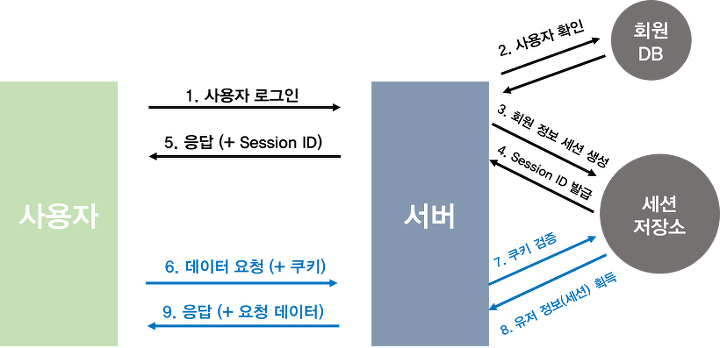
순서는 요약하면 다음과 같습니다.
1. 사용자가 로그인을 한다.
2. 서버에서는 계정정보를 읽어 사용자를 확인한 후, 사용자의 고유한 ID값을 부여하여 세션 저장소에 저장한 후, 이와 연결되는 세션ID를 발행합니다.
3 사용자는 서버에서 해당 세션ID를 받아 쿠키에 저장을 한 후, 인증이 필요한 요청마다 쿠키를 헤더에 실어 보냅니다.
4. 서버에서는 쿠키를 받아 세션 저장소에서 대조를 한 후 대응되는 정보를 가져옵니다.
5. 인증이 완료되고 서버는 사용자에 맞는 데이터를 보내줍니다.
세션 쿠키 방식의 인증은 기본적으로 세션 저장소를 필요로 합니다(Redis를 많이 사용).
세션 저장소는 로그인을 했을 때 사용자의 정보를 저장하고 열쇠가 되는 세션ID값을 만듭니다.
그리고 HTTP 헤더에 실어 사용자에게 돌려보냅니다. 그러면 사용자는 쿠키로 보관하고 있다 인증이 필요한 요청에 쿠키(세션ID)를 넣어 보낼 것입니다.
웹 서버에서는 세션 저장소에서 쿠키(세션ID)를 받고 저장되어 있는 정보와 매칭시켜 인증을 완료합니다.
**세션ID를 쿠키라고 봐도 동일합니다. 쿠키가 사용자 개념에서 더 큰 범주입니다. 세션ID를 쿠키로 저장하는 셈이죠.
**세션과 쿠키 개념이 헷갈리시는 분들이 있으신데, 세션은 서버에서 가지고 있는 정보이며 쿠키는 사용자에게 발급된 세션을 열기 위한 열쇠(SESSION ID)를 의미합니다.
쿠키만으로 인증을 사용한다는 말은 서버의 자원은 사용하지 않는다는 것이며, 이는 즉 클라이언트가 인증 정보를 책임지게 됩니다. 그렇게 되면 위의 첫번째 방식처럼 HTTP 요청을 탈취당할 경우 다 털리게 됩니다. 따라서 보안과는 상관없는 단순히 장바구니나 자동로그인 설정 같은 경우에는 유용하게 쓰입니다.
결과적으로 인증의 책임을 서버가 지게하기 위해 세션을 사용하는 겁니다(사용자가 해킹당하는 것보단 서버가 해킹당하는게 훨씬 어려우니까요!) 사용자(클라이언트)는 쿠키를 이용하고, 서버에서는 쿠키를 받아 세션의 정보를 접근하는 방식으로 인증을 합니다.
(장점)
1. 세션/쿠키 방식은 기본적으로 쿠키를 매개로 인증을 거칩니다. 여기서 쿠키는 세션 저장소에 담긴 유저 정보를 얻기 위한 열쇠라고 보시면 됩니다.
따라서 쿠키가 담긴 HTTP 요청이 도중에 노출되더라도 쿠키 자체(세션 ID)는 유의미한 값을 갖고있지 않습니다(중요 정보는 서버 세션에) 이는 위의 계정정보를 담아 인증을 거치는 것보단 안전해 보입니다.
2. 사용자 A는 1번, 사용자 B는 2번 이런식으로 고유의 ID값을 발급받게 됩니다. 그렇게 되면 서버에서는 쿠키 값을 받았을 때 일일이 회원정보를 확인할 필요 없이 바로 어떤 회원인지를 확인할 수 있어 서버의 자원에 접근하기 용이할 것입니다.
(단점)
1. 장점 1에서 쿠키를 탈취당하더라도 안전할 수 있다고 언급했습니다. 그러나 문제가 하나 있습니다. 만일 A 사용자의 HTTP 요청을 B 사용자(해커)가 가로챘다면 그 안에 들어있는 쿠키도 충분히 훔칠 수 있습니다.
그리고 B 사용자는 그 훔친 쿠키를 이용해 HTTP 요청을 보내면 서버의 세션저장소에서는 A 사용자로 오인해 정보를 잘못 뿌려주게 되겠죠(세션 하이재킹 공격이라고 합니다)
-> 해결책
1. HTTPS를 사용해 요청 자체를 탈취해도 안의 정보를 읽기 힘들게 한다.
2. 세션에 유효시간을 넣어준다.
2. 서버에서 세션 저장소를 사용한다고 했습니다. 따라서 서버에서 추가적인 저장공간을 필요로 하게되고 자연스럽게 부하도 높아질 것입니다.
[3] 토큰 기반 인증 방식 (JWT-Json Web Token)
JWT는 세션/쿠키와 함께 모바일과 웹의 인증을 책임지는 대표주자입니다.
JWT는 Json Web Token의 약자로 인증에 필요한 정보들을 암호화시킨 토큰을 뜻합니다.
위의 세션/쿠키 방식과 유사하게 사용자는 Access Token(JWT 토큰)을 HTTP 헤더에 실어 서버로 보내게 됩니다.
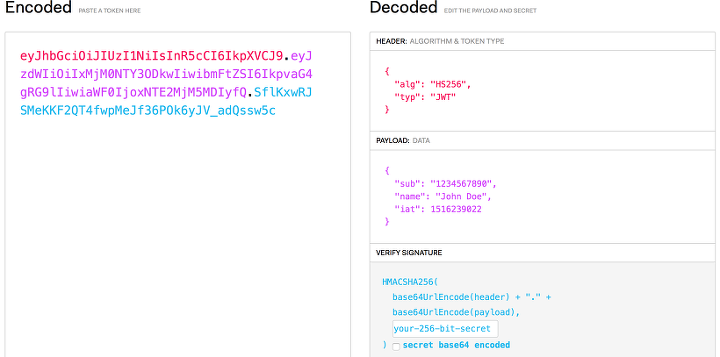
토큰을 만들기 위해서는 크게 3가지, Header,Payload, Verify Signature가 필요합니다.
Header : 위 3가지 정보를 암호화할 방식(alg), 타입(type) 등이 들어갑니다.
Payload : 서버에서 보낼 데이터가 들어갑니다. 일반적으로 유저의 고유 ID값, 유효기간이 들어갑니다.
Verify Signature : Base64 방식으로 인코딩한 Header,payload 그리고 SECRET KEY를 더한 후 서명됩니다.
최종적인 결과 : Encoded Header + "." + Encoded Payload + "." + Verify Signature
Header, Payload는 인코딩될 뿐(16진수로 변경), 따로 암호화되지 않습니다. 따라서 JWT 토큰에서 Header, Payload는 누구나 디코딩하여 확인할 수 있습니다.
여기서 누구나 디코딩할 수 있다는 말은 Payload에는 유저의 중요한 정보(비밀번호)가 들어가면 쉽게 노출될 수 있다는 말이 됩니다.
하지만 Verify Signature는 SECRET KEY를 알지 못하면 복호화할 수 없습니다.
A 사용자가 토큰을 조작하여 B 사용자의 데이터를 훔쳐보고 싶다고 가정하겠습니다.
그래서 payload에 있던 A의 ID를 B의 ID로 바꿔서 다시 인코딩한 후 토큰을 서버로 보냈습니다.
그러면 서버는 처음에 암호화된 Verify Signature를 검사하게 됩니다.
여기서 Payload는 B사용자의 정보가 들어가 있으나 Verify Signature는 A의 Payload를 기반으로 암호화되었기 때문에 유효하지 않는 토큰으로 간주하게 됩니다.
여기서 A사용자는 SECRET KEY를 알지 못하는 이상 토큰을 조작할 수 없다는 걸 확인할 수 있습니다.
이제부터 JWT가 어떻게 인증에 사용되는지 알아보도록 하겠습니다.
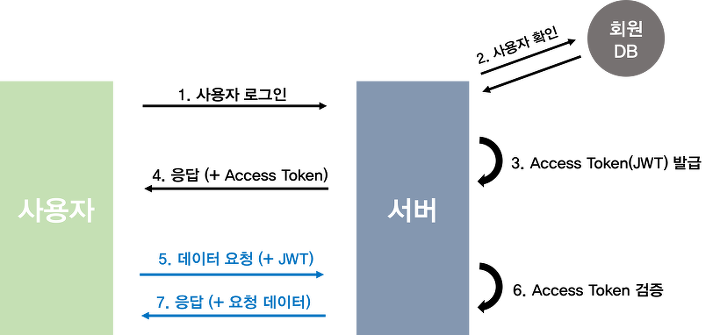
1. 사용자가 로그인을 한다.
2. 서버에서는 계정정보를 읽어 사용자를 확인 후, 사용자의 고유한 ID값을 부여한 후, 기타 정보와 함께 Payload에 넣습니다.
3. JWT 토큰의 유효기간을 설정합니다.
4. 암호화할 SECRET KEY를 이용해 ACCESS TOKEN을 발급합니다.
5. 사용자는 Access Token을 받아 저장한 후, 인증이 필요한 요청마다 토큰을 헤더에 실어 보냅니다.
6. 서버에서는 해당 토큰의 Verify Signature를 SECRET KEY로 복호화한 후, 조작 여부, 유효기간을 확인합니다.
7. 검증이 완료된다면, Payload를 디코딩하여 사용자의 ID에 맞는 데이터를 가져옵니다.
세션/쿠키 방식과 가장 큰 차이점은 세션/쿠키는 세션 저장소에 유저의 정보를 넣는 반면, JWT는 토큰 안에 유저의 정보들이 넣는다는 점입니다.
물론 클라이언트 입장에서는 HTTP 헤더에 세션ID나 토큰을 실어서 보내준다는 점에서는 동일하나, 서버 측에서는 인증을 위해 암호화를 하냐, 별도의 저장소를 이용하냐는 차이가 발생합니다.
(장점)
1. 간편합니다. 세션/쿠키는 별도의 저장소의 관리가 필요합니다. 그러나 JWT는 발급한 후 검증만 하면 되기 때문에 추가 저장소가 필요 없습니다. 이는 Stateless 한 서버를 만드는 입장에서는 큰 강점입니다. 여기서 Stateless는 어떠한 별도의 저장소도 사용하지 않는, 즉 상태를 저장하지 않는 것을 의미합니다. 이는 서버를 확장하거나 유지,보수하는데 유리합니다.
2. 확장성이 뛰어납니다. 토큰 기반으로 하는 다른 인증 시스템에 접근이 가능합니다. 예를 들어 Facebook 로그인, Google 로그인 등은 모두 토큰을 기반으로 인증을 합니다. 이에 선택적으로 이름이나 이메일 등을 받을 수 있는 권한도 받을 수 있습니다.
여기까지의 글만 봤을 때는 JWT가 세션/쿠키 방식보다 더 효율적으로 보입니다. 하지만 JWT도 단점들이 존재합니다.
(단점)
1. 이미 발급된 JWT에 대해서는 돌이킬 수 없습니다. 세션/쿠키의 경우 만일 쿠키가 악의적으로 이용된다면, 해당하는 세션을 지워버리면 됩니다. 하지만 JWT는 한 번 발급되면 유효기간이 완료될 때 까지는 계속 사용이 가능합니다. 따라서 악의적인 사용자는 유효기간이 지나기 전까지 신나게 정보들을 털어갈 수 있습니다.
-> 해결책
기존의 Access Token의 유효기간을 짧게 하고 Refresh Token이라는 새로운 토큰을 발급합니다. 그렇게 되면 Access Token을 탈취당해도 상대적으로 피해를 줄일 수 있습니다. 이는 다음 포스팅에 나올 Oauth2에 더 자세히 다루도록 하겠습니다.
2. Payload 정보가 제한적입니다. 위에서 언급했다시피 Payload는 따로 암호화되지 않기 때문에 디코딩하면 누구나 정보를 확인할 수 있습니다. (세션/쿠키 방식에서는 유저의 정보가 전부 서버의 저장소에 안전하게 보관됩니다) 따라서 유저의 중요한 정보들은 Payload에 넣을 수 없습니다.
3. JWT의 길이입니다. 세션/쿠키 방식에 비해 JWT의 길이는 깁니다. 따라서 인증이 필요한 요청이 많아질 수록 서버의 자원낭비가 발생하게 됩니다.
프라미스이해
병렬성 vs. 동시성
병렬성 (parallel-병렬 vs. serial-직렬): 여러 작업을 동시에 실행한다
동시성 (concurrent-동시발생의 vs. sequential-순차적): 여러 작업들을 일정 시간 내에 쪼개서 실행한다 (작업간의 순서는 없다)
|
동시성(Concurrency) |
병렬성(Parallelism) |
용어 차이 |
논리적 |
물리적 |
뜻 |
동시에 실행되는 것처럼 보이는 것 |
실제로 작업이 동시에 처리되는 것 |
코어 환경 |
싱글 코어, 멀티 코어에서 가능 |
멀티 코어에서만 가능 |
순차(sequential) 처리
복수의 업무를 순서대로 하나씩 처리.
병렬(parallel) 처리
복수의 업무를 “동시에” 처리.
병행(concurrent) 처리
병렬에 비해 추상도가 높은 표현.
한 개의 업무를 어떠한 순서로 처리하든 상관 없는 여러 개의 작업으로 분할하여 처리.
작업자가 한 명이라면 분할된 작업들을 순차적으로 처리하게 되지만,
작업자가 두 명이라면 같은 작업을 병렬적으로 처리할 수 있다.
벡터 이미지 최적화
SVG(Scalable Vector Graphics)는 XML 기반 이미지 형식입니다.
SVG 파일은 축소하여 크기를 줄여야 합니다.
SVG 파일은 GZIP으로
압축해야
합니다.
래스터 이미지 최적화
래스터 이미지는 픽셀들이 모인 그리드입니다.
각 픽셀은 색 및 투명도 정보를 인코딩합니다.
이미지 압축 프로그램은 다양한 기술을 활용하여 픽셀당 필요한 비트 수를
줄여 이미지
파일의 크기를 축소합니다.
래스터화(영어: Rasterisation)
컴퓨터 과학에서 백터 그래픽 이미지를 비디오 디스플레이나 프린터 등의 래스터 디바이스에 출력하기 위해 래스터 이미지로 변환하는 것을 의미한다.
host ; 호스트
인터넷에서 호스트는, 인터넷을 통해 다른 컴퓨터들과 쌍방향 통신이 가능한 컴퓨터를 말한다.
호스트는 특정한 호스트번호를 갖는데, 이는 네트웍 번호와 합해져서, 고유의 IP 주소를 이루게된다.
인터넷 서비스 제공업체를 통한 PPP 사용자의 경우에는, 접속되어있는 동안에만 고유한 IP 주소를 갖게되며, 그 시간동안은 해당 사용자의 컴퓨터도 하나의 호스트가 되는 것이다.
이러한 맥락에서 보면, 호스트란 네트웍의 하나의 노드라고 볼 수도 있다.
IBM이나 기타 다른 메인프레임 컴퓨터 환경에서, 호스트란 하나의 메인프레임 컴퓨터를 말한다 (요즘은 이런 컴퓨터를 '대형 서버'라고 부른다).
이 상황에서 메인프레임은 단말기가 부착되어 있으며, 메인프레임은 이 단말기에게 서비스를 제공하는 호스트가 된다 (여기서 호스트는 항상 서버가 되고 워크스테이션은 항상 클라이언트가 된다는
것을 의미하는 것은 아니다. 클라이언트/서버 관계는 호스트라는 용어의 사용과 관계없는 하나의 프로그래밍 모델이다).
그 외 다른 상황에서, 이 용어는 자신보다 작거나 능력이 떨어지는 장치 또는 프로그램에게 서비스를 제공하는 장치나 프로그램을 의미한다.
host name ; 호스트명
호스트명이란 네트웍 상에서 어떤 컴퓨터를 유일하게 인식할 수 있는 이름을 가리킨다.
인터넷 상에서의 호스트명은 흔히 "www.terms.co.kr"과 같은 형태를 갖는데, 만약 그 주소에 하나의 인터넷 사이트만 있다면 호스트명과 도메인 이름은 같다고 볼 수 있다.
하지만, 한 컴퓨터에 하나 이상의 인터넷 사이트가 수용되어 있다면 그 사이트는 여러 개의 호스트명을 가질 수 있다.
예를 들어, "mall.terms.co.kr"와 "news.terms.co.kr"이라는 주소가 있다고 가정할 때, "mall"과 "news" 등은 호스트명(호스트네임)이며,
"terms.co.kr"은 도메인 이름(도메인네임)이 된다.
호스트명은 서버의 운영 주체마다 다르게 설정할 수 있으나 서버의 특징을 나타낼 수 있는 용어가 되어야 하므로, 전세계 표준 통신 규약에 따라 같은 역할을 수행하는 서버는 명칭이
동일합니다.
마찬가지로 동종의 서비스를 제공하는 호스트 컴퓨터의 이름도 동일하거나 유사할 것입니다.
CDN
CDN(Content Delivery Network)이란 웹 사이트의 접속자가 서버에서 콘텐츠를 다운받아야 할 때, 자동으로 가장 가까운 서버에서 다운받도록 하는 기술입니다.
이 기술을 이용하면 특정 서버에 트래픽이 집중되지 않고, 콘텐츠 전송 시간이 매우 빨라지는 장점이 있습니다.
이러한 CDN을 이용하면 제이쿼리 파일을 서버에 따로 저장하지 않아도 제이쿼리를 사용할 수 있습니다.
인터넷과 웹의 관계
인터넷(Internet)
인터넷은 컴퓨터로 연결하여 TCI / IP (Transmission Control Protocol / Inrternet Protocol)라는 통신 프로토콜을 이용해 정보를 주고받는 컴퓨터
네트워크이다.
인터넷이란 이름은 1973년 TCP/IP를 정립한 빈튼 서프와 밥 간이 '네트워크의 네트워크'를 구현하여 모든 컴퓨터를 하나의 통신망 안에 연결(International Network)하고자 하는 의도에서 이를 줄여 인터넷(Internet)이라고 처음 명명하였던 데 어원을 두고 있다.
이후 인터넷은 "정보의 바다"라고 불리면서 컴퓨터가 서버와 클라이언트로 연결되어 TCP/IP를 이용해 정보를 주고 받게 되었다.
월드 와이드 웹(World Wide Web)
월드 와이드 웹(World Wide Web)은 인터넷에 연결된 컴퓨터들을 통해 사람들이 정보를 공유할 수 있는 전 세계적인 정보 공간을 말한다.
간단히 웹(web)이라 부르는 경우가 많다. 이 용어는 인터넷과 동의어로 쓰이는 경우가 많으나 엄격히 말해 서로 다른 개념이다.
웹은 전자 메일과 같이 인터넷 상에서 동작하는 하나의 서비스일 뿐이다. 그러나 1993년 이래로 웹은 인터넷 구조의 절대적 위치를 차지하고 있다.

앱과 웹의 차이
인터넷은 WEB(웹)을 기본으로 한다. 그런데 스마트폰이 출시되면서 어플(APP, 앱)이라는 단어가 나오게 되고 발음도 유사하여 혼돈을 주고 있다.
그렇다면 WEB(웹)과 APP(앱, 어플)의 차는 무엇인가?
웹 (WEB)이란?
월드 와이드 웹(world wide web)의 준말로서, 문자 영상 음성 등이 혼합된 멀티미디어 정보를 마치 거미줄과 같은 통신망(인터넷 망)으로 세계 각지에 연결시켜 주는 서비스를 의미
한다.
WEB은 브라우저(MS IE, FIREFOX, OPERA 등)라는 프로그램을 통하여 동작한다.
즉 인터넷에서 정보를 이용하기 위해서 브라우저라는 프로그램이 필요하고 브라우저는 서버에 필요정보를 요청(Request Msg)하여 정보를 받아오는데 이때 사용하는 통신방식이 HTTP
이며,
HTTP 응용 프로그램으로 OS에 따라 ASP, PHP, JSP 등을 사용한다.
어플(APP, 앱) 이란?
스마트폰이 출시되면서 출현한 개념으로 스마트폰에서 사용하는 애플리케이션(application, APP, 앱) 프로그램을 의미한다.
어플은 프로그램 공급의 편리성, 보안성, 안전성 등을 위하여 스토어에서 공급하는데 앱 스토어는 애플리케이션 스토어(Application Store)의 준말로,
스마트폰의 콘텐츠 응용프로그램을 사고 팔 수 있는 온라인상의 콘텐츠 장터를 의미한다.
|
구분 |
Web |
APP |
|
프로그램 동작 |
브라우저를 통해 동작 |
OS에 맞춘 독립적 동작
|
|
업데이트 방식 |
즉시 반영 |
스토어에 올린 후 반영 |
|
사용 단말기 |
제한 없음 |
OS에 따른 제한 |
|
보안성 |
서버 환경에 따른 보안 |
스토어 환경에 따른 보안 |
|
단말 정보 이용 |
제한적 |
프로그램 의도에 따라 사용 |
|
서버 정보 이용 |
제한적 |
프로그램 의도에 따라 사용 |
그러나 어플(앱)의 경우 프로그래머의 의도에 따라 단말의 OS 정보를 포합하여 기기정보(맥정보), 시간정보, 위치정보, 전화번호, 은행거래정보 등 단말기의 모든 부분을 조종할 수 있고 정보를 변경할 수 있는 능동적인 프로그램이라는 점에 차이가 있다.
즉, Web으로 제작해야 하는가? 아님 APP로 제작해야 하는가? 의 판단기준으로 스마트폰내의 정보나 서버의 정보를 이용해야 하는가?
아님 단지 정보를 제공하고 보여주며 제공된 기능만 사용할 것인가를 고려해야 한다.
예를 들어, 해킹 또는 존비 폰을 계획하였다면 APP을 이용해야 가능하며 WEB으로는 불가능하다.
WEB은 스마트에서 정보를 보여주는 수동적인 역할만 하지만 APP은 스마트폰에서 프로그래머의 의도에 따라 스마트폰을 조정하거나 정보를 다른 데로 제공할 수 있는 능동적인 프로그램이라 할 수 있다.
웹의 동작 방식
웹이 도로라고 상상해봅시다. 도로의 한 쪽 끝은 여러분의 집 같은 클라이언트 입니다.
다른 한 쪽 끝은 여러분이 뭔가를 사길 원하는 상점같은 서버입니다.
게다가 클라이언트와 서버에대해, 우리는 또한 인사할 필요가 있습니다:
-인터넷 연결: 여러분이 웹에서 데이터를 보내고 받을 수 있게 해줍니다. 기본적으로 여러분의 집과 상점 사이의 거리와 같습니다.
-TCP/IP: Transmission Control Protocol (전송 제어 규약) 과 Internet Protocol (인터넷 규약) 은 데이터가 어떻게 웹을 건너 여행해야 하는지
정의하는 통신 규약입니다.
이것은 주문을 하고, 상점에 가고, 또 여러분의 상품을 살 수 있게 해주는 운송 장치와 같습니다. 우리 예시에서, 이것은 차 또는 자전거 (또는 여러분의 두 다리) 와
같습니다.
-DNS: Domain Name System Servers (도메인 이름 시스템 서버) 는 웹사이트를 위한 주소록과 같습니다. 여러분이 브라우저에 웹 주소를 입력할 때, 브라우저는 그
웹사이트를 검색하기 전에 DNS 를 살펴봅니다.
브라우저는 HTTP 메시지를 올바른 장소로 전송하기 위해 그 웹사이트가 있는 서버가 어떤것인지 찾아야 합니다 (아래를 보세요).
이것은 여려분이 접근하기 위해 상점의 주소를 찾아보는 것과 같습니다.
-HTTP: Hypertext Transfer Protocol (하이퍼텍스트 전송 규약) 은 클라이언트와 서버가 서로 통신할 수 있게 하기 위한 언어를 정의하는 어플리케이션 규약 입니다.
이것은 여러분의 상품을 주문하기 위해 여러분이 사용하는 언어와 같습니다.
-컴포넌트 파일: 한 웹사이트는 여러분이 상점에서 사는 다양한 종류의 상품들과 같이 많은 다른 파일들로 만들어집니다. 이 파일들은 두개의 주요한 타입이 있습니다:
코드 파일: 다른 기술들도 잠시 뒤 보게 되실것이지만, 웹사이트는 근본적으로 HTML, CSS, 그리고 JavaScript 로 생성됩니다.
자원: 이것은 이미지, 음악, 비디오, 단어 문서, 그리고 PDF 같은, 웹사이트를 만드는 모든 다른 것들을 위한 공동적인 이름입니다.
여러분이 브라우저에 웹 주소를 입력할 때 (우리의 비유에서 상점으로 걸어가는 것과 유사합니다):
1.브라우저는 DNS 서버로 가서 웹사이트가 있는 서버의 진짜 주소를 찾습니다 (여러분이 상점의 주소를 찾습니다).
2.그 다음 브라우저는 서버에게 웹사이트의 사본을 클라이언트에게 보내달라는 HTTP 요청 메세지를 서버로 전송합니다.(상점으로 가서 상품을 주문합니다.)
이 메세지, 그리고 클라이언트와 서버 사이에 전송된 모든 데이터는 TCP/IP 연결을 통해서 전송됩니다.
3.이 메세지를 받은 서버는 클라이언트의 요청을 승인하고, "200 OK" 메세지를 클라이언트에게 전송합니다.
"200 OK"는 "물론이죠. 당신은 웹 사이트를 볼 수 있어요! 여기 있어요" 라는 의미입니다.
그 다음 서버는 웹사이트의 파일들을 데이터 패킷이라 불리는 작은 일련의 덩어리들로 브라우저에 전송하기 시작합니다.(상점은 여러분이 주문한 상품을 전달하고, 여러분은 그것을 집으로
가져갑니다.)
4.브라우저는 이 작은 덩어리들을 완전한 웹 사이트로 조립하고, 당신에게 보여줍니다. (상품이 당신의 문에 도착합니다. — 새 것이죠, 멋져요!)
앞서 우리는 서버에서 클라이언트로 전송되는 데이터의 포맷을 설명하기 위해 "패킷" 이라는 용어를 사용했습니다.
게 무엇을 의미하는 걸까요? 기본적으로, 데이터가 웹을 거쳐서 전송될 때, 수천개의 작은 덩어리들로 전송됩니다.
그래서 다양한 웹 사용자들은 동시에 같은 웹 사이트를 다운로드 할 수 있게 됩니다.
만약 웹 사이트가 하나의 큰 덩어리들로 전송된다면, 오직 한 번에 하나의 사용자만 다운로드 할 수 있을 것입니다.
이는 분명 웹을 매우 비효율적이고, 사용하기에 재미없게 만들 것입니다.
트래픽
호스팅에서 일반적인 트래픽의 의미는 데이터 전송량이라고 할 수 있습니다.
쉽게 예로 들자면 우리생활에 밀접한 도로로 비유할 수 있는데요. 우리는 특정지점에서 다른지점으로 이동할 때 차,버스 등을 이용하여 도로를 통해 이동합니다.
도로에 차가 많으면 상대적으로 늦게 갈 수 있으며, 8차선 고속도로의 경우에는 일반 국도에 비하여 더 빠른 속도로 이동할 수 있습니다.
트래픽도 마찬가지로 이동의 개념입니다. 누군가 컴퓨터를 켜서 고도몰 사이트에 접속하고자하면, 컴퓨터는 고도몰사이트 정보를 갖고 있는 서버한테 고도몰 정보를 요청하게 됩니다.
요청 받은 서버는 홈페이지 사이트에 있는 이미지나 플래시, 텍스트들을 전송하게 되며, 컴퓨터는 고도몰 홈페이지를 노출하게 됩니다.
즉, 웹사이트를 구성하는 파일들은 서버에 있으며, 어떤 웹페이지를 요청했을 때 컴퓨터(client)는 서버에 접속해서 파일을 다운로드하고 컴퓨터에 저장합니다.
이렇게 인터넷 사이트의 이미지, 텍스트 등의 정보를 주고받는 것을 데이터 전송이라 하며, 트래픽은 이러한 데이터 전송의 양이 되겠습니다.
앞서 말한 도로의 경우와 마찬가지로, 전송되는 데이터 양이 많으면 이동하는 속도가 느려지고, 도로에 해당되는 회선이 넓을 수록 좀 더 수월하게 이동할 수 있습니다.
여기서 한 가지 의문점이 드는데요. 매번 사이트에 접속할때마다 컴퓨터는 서버에 접속하여 트래픽이 발생하느냐입니다.
하지만 매번 접속시마다 트래픽이 발생하지는 않습니다. 다르게 말하면 매번 접속시마다 서버의 파일을 다운로드해서 컴퓨터에 저장을 하지 않습니다.
그 이유는 캐쉬값이 남아있기 때문인데요. 컴퓨터가 이미 파일을 다운로드해서 가지고 있기 때문입니다.
이 캐쉬파일을 보통 '인터넷 임시파일'이라 부르고, Temporary Internet Files폴더에서 확인할 수 있습니다.
인터넷 임시파일은 너무 많아져도, 그렇다고 너무 작아져도 좋지 않습니다.
인터넷파일 공간이 너무 크다면, 불필요한 파일을 하드공간에 보관하게 되고, 너무 작다면 웹페이지에 접속할때마다 동일한 내용을 다운로드해서 트래픽이 발생되므로 서버와 클라이언트 모두
필요없는 부하에 시달리게 됩니다.
때문에 보통 100M~200M 정도로 잡아두시는 편이 좋습니다.
인터넷 사용자가 익스플로러 url에 홈페이지 주소를 입력하고 클릭했을때 index.htm파일이 최초로 전송되고, 홈페이지 안에 있는 각종 컨텐츠, 자료, 이미지가 사용자의 PC로 전달되게
됩니다.
예를 들어 index.html 파일 용량이 20K일때 하루 1000명 정도가 첫페이지(index.htm)를 보았다면 서버상에서 송출된 총데이타량은
1000*20K=20,000(20Mb)입니다.
이렇게 서버에서 외부의 요청으로 송촐된 총 데이타량을 합친 것을 데이타전송량 이라고 합니다.
네트워크 정의
1. 네트워크
- 정보 공유를 목적으로 PC와 PC들이 모여서 구성된 망 ( Ex)사물인터넷 )
- 목적 : 정보 공유
- 구성 : PC와 PC들이 연결됨
- 장점 : 편의성 제공
- 단점 : 보안성 취약
2. 프로토콜(Protocol)
- 데이터 전송 규약 = 데이터 전송 도구
- 네트워크 환경 내에서 데이터를 전송할때 전송 방법을 정의하는 규칙/제도
- Ex) TCP, UDP, IP, Ethernet
3. 인캡슐레이션(Encapsulation) <-> 디캡슐레이션
- 데이터를 전송하기 위해서 프로토콜 정보를 추가하는 패키지 과정
- Ex) ETH | IP | TCP | HTTP
헤더 헤더 헤더
4. 네트워크 유형
1) LAN(Local Area Network)
- 내부 네트워크
- 장비 : 스위치, PC 랜-카드(NIC = Network Interface Card), UTP 케이블, 무선 AP
- 프로토콜 : Ethernet
- 구축 방법 : 버스 토폴로지, 스타 토폴로지
- 권장 사항 : 스타 토폴로지 + 이중화 토폴로지
- 설계 핵심 : 확장성, 이중성, 가용성
- 관리 : 사내 관리자 및 업체 관리자
- 네트워크 업체별 정의
ISP(인터넷서비스제공자) 업체 : 기업 고객/사용자에게 인터넷/네트워크 서비스를 제공하는 업체 ( 네트워크 망 보유 ex)kt,lg,sk)
SI/NI 업체 : 시스템/네트워크 통합 사업을 실시하는 업체( 보안, 무선, 보이스, 서버, 스토리지, 가상화, 클라우드, CCTV )
-SI:System Integration(완성)
-NI:Network Integration의 약자로 흩어져있는 네트워크를 하나의 단위로 통합해서 고객의 환경에 맞는 최적화된 네트워크 서비스를 제공하는 것을 말함.
관련업체는 네트워크 통합을 위한 시스템 구축업체들임.
밴더 ( EX: Cisco, IBM, HP, MS, ... )
2) WAN(Wide Area Network)
- LAN과 LAN을 연결하는 외부 네트워크
- 장비 : 라우터
- 프로토콜 : HDLC, PPP, Frame-Relay, Ethernet( 지원해주는 속도가 좋아서 요즘 대부분 많이 쓰인다 )
- 구축 방법(기업 입장) : ISP 업체로부터 회선(네트워크망)을 임대하는 방식
- 관리 : ISP 업체 관리자 및 SI/NI 업체 관리자
3) Internet
- 전세계적으로 연결된 네트워크 망
- 프로토콜 : TCP/IP
4) Intranet
- 기업 내부에서 사용하는 인터넷과 같은 네트워크 망
- 용도 : 회사 게시판, 공지사항, 기록/내역...
5. 데이터 전송 관계
- 요청에 의한 응답 관계
- 요청자 : 클라이언트(Client)
- 응답자 : 서버(Server)
6. 데이터 전송 방식
1) 유니케스트(Unicast)
- 1:1 데이터 전송(유니케스트는 서버와 클라이언트간에 일-대-일(1:1) 데이터 전송 서비스를 말한다.)
- Ex) 인터넷 ,주로 WAN과 같은 넓은 크기의 네트워크에 적용
- 장점:이 유니케스트의 장점이있다면 사용자에게는 가장 신뢰적인 서비스라는것이다.
- 단점:단점이라면 다수의 클라이언트를 갖고 있는 멀티미디어 서비스 환경에서는 서버 부하 발생과 네트워크 대역폭 고갈이라는 문제를 야기시킬 수 있다.
일반적으로 인터넷은 유니케스트 서비스를 실시하고 있다.
2) 브로드케스트(Broadcast)
- 1:전체 데이터 전송(브로드케스트는 서버와 클라이언트간에 일-대-불특정 다수 데이터 전송 서비스를 말한다.)
- Ex) ARP(주소 결정 프로토콜(Address Resolution Protocol, ARP)) 요청, DHCP(동적 호스트 구성 프로토콜(Dynamic Host
Configuration Protocol, DHCP)) 요청, 주로 LAN 환경에서 사용
- 장점:서버에서 브로드케스트로 데이터를 전송하면, 로컬 환경에 포함된 모든 클라이언트는 데이터를 수신하게 되는 방식을 의미한다.
위 유니케스트에서 발생한 단점들 ( 서버부하,대역폭 고갈) 문제점들을 해결 할 수있는 방법 중 하나이다.
- 단점:단점이라면 불특정 다수의 대상으로 전송되는 서비스이기 때문에 수신을 원치 않는 클라이언트들도 수신하는 문제가 발생되며,
갑작스런 브로드케스트 증가로 인한 LAN 네트워크 성능이 저하되는 문제도 발생한다.
3) 멀티케스트(Multicast)
- 1:특정 그룹 데이터 전송(멀티케스트는 서버와 클라이언트간에 일-대-특정 다수 데이터 전송 방식을 말한다.)
- Ex) IPTV
- 장점:서버에서 멀티케스트로 데이터를 전송하면, 데이터 수신을 원하는 특정 그룹들에게만 데이터를 전송하는 서비스를 의미한다.
이 멀티케스트는 유니케스트로 인한 서버 부하 및 대역폭 고갈 문제도 해결가능하고.
브로드케스트로 인한 불필요한 데이터 수신 및 브로드케스트 증가로 인한 LAN 성능 저하 문제도 해결할 수 있다.
이러한 장점을 갖고있는 멀티케스트는 멀티미디어 서비스 환경에서 주로 사용하는 데이터 전송 방식이다.
- 단점:멀티케스트의 유일한 단점이라면 비용이 많이 든다는 사실!!!
GZIP
GZIP은 텍스트 기반 자산인 CSS, 자바스크립트, HTML에서 최상의 성능을 냅니다.
모든 최신 브라우저는 GZIP 압축을 지원하고 이를 자동으로 요청합니다.
서버는
GZIP 압축을 활성화하도록 구성되어야 합니다.
일부 CDN의 경우 특별히 주의하여 GZIP이 활성화되었는지 확인해야 합니다.
프로토콜
서로다른 하드웨어와 운영체제 등이 서로 통신을 하기위해 모든 요소에 규칙이 필요합니다. 이런 규칙을 프로토콜이라고 부릅니다.
URL 허용 문자
안정한 전송이란 URL 문자열이 손실되지 않고 전송되는 것을 말합니다.
그러기 위해서 URL 설계자들은 알파벳( 정확히는 ASCII )만으로 URL을 작성하도록 권장했습니다
그런데 URL을 표기할 때 세계언어를 알파벳으로 표기하는 것은 문제가 있다고 판단하게 되었고,
이에 ASCII 외의 문자들을 이스케이프 처리를 하여, 안전하지 않은 문자를 안전하도록 인코딩할 수 있게 해주었습니다.
인코딩을 통해 안전하지 않은 문자( 비 ASCII )를 %기호로 시작하고 16진수로 이루어진 ASCII 코드로 표현하는 이스케이프 문자로 바꿉니다.
TTFB
TTFB는 Time to First Byte라는 뜻으로 사이트 접속 시도 이후 최초 응답을 받기 까지의 시간을 의미합니다.
이 시간은 서버까지 왕복하는 데 걸린 지연 시간에 서버가 응답을 전달하기를 기다리는 데 보낸 시간을 더한 것입니다.
TCP/IP 프로토콜이란?
TCP/IP는 패킷 통신 방식의 인터넷 프로토콜인 IP (인터넷 프로토콜)와 전송 조절 프로토콜인 TCP (전송 제어 프로토콜)로 이루어져 있다.
IP는 패킷 전달 여부를 보증하지 않고, 패킷을 보낸 순서와 받는 순서가 다를 수 있다.
(unreliable datagram service)
TCP는 IP 위에서 동작하는 프로토콜로, 데이터의 전달을 보증하고 보낸 순서대로 받게 해준다.
HTTP, FTP, SMTP 등 TCP를 기반으로 한 많은 수의 애플리케이션 프로토콜들이 IP 위에서 동작하기 때문에, 묶어서 TCP/IP로 부르기도 한다.
TCP / IP 프로토콜 구조
인터넷을 통해 통신을 수행하는 개체는 크게 호스트와 라우터로 나눌 수 있습니다.
호스트(host)는 최종 사용자(end-user) 응용 프로그램을 수행하는 주체가 되며, 인터넷에 연결된 PC , 노트북 , 휴대전화 , PDA 등이 여기에 속합니다.
라우터(router)는 호스트에서 생성된 데이터를 여러 네트워크를 거쳐 전송함으로써 서로 다른 네트워크에 속한 호스트 간에 데이터를 교환할 수 있게 하는 장비입니다.
호스트와 라우터, 라우터와 라우터 그리고 호스트와 호스트가 통신하려면 정해진 절차와 방법을 따라야 하는데 이를 통신 프로토콜(communication protocol : 프로토콜)이라
부릅니다.
인터넷에서 사용하는 핵심 프로토클은 TCP와 IP로, 이를 비롯한 각종 프로토콜을 총칭하여 TCP/IP 프로토콜이라 부릅니다.
TCP/IP 프로토콜은 일반적으로 운영체제의 일부로 구현되며, 응용 프로그램은 운영체제가 제공하는 TCP/IP 프로토콜의 서비스를 사용해 통신합니다.
-> 그림에서 통신을 수행하는 주체이자 통신의 최종 목적지는 호스트 자체가 아니라 호스트에서 수행하는 응용 프로그램이라는 점을 주목합시다~
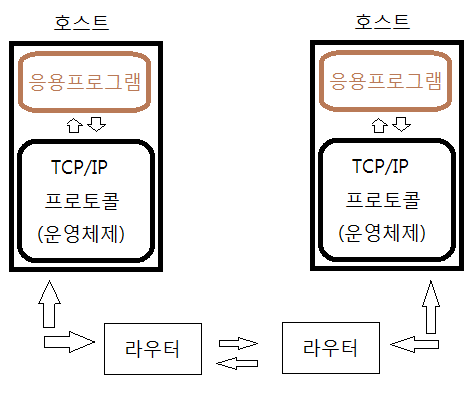
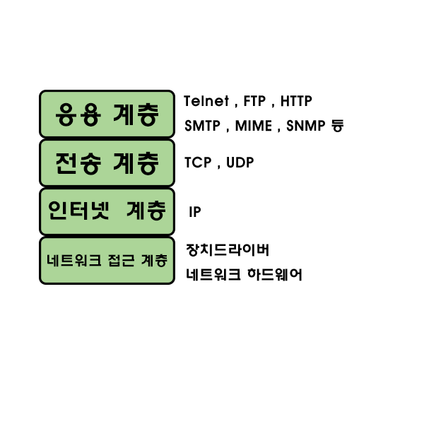
우선 네트워크의 계층은 크게 5단계로 나눌 수 있다.
응용 계층( HTTP, SMTP, POP3, FTP, TELNET, NNTP, RCP... )
트랜스포트 계층( TCP, UDP )
네트워크 계층( IP )
링크 계층( PPP, PPPoE, Ethernet, FDDI, ATM .. )
물리 계층
이렇게 나누어질 수 있다.
하지만 우리는 왜 이렇게 각 계층으로 나누어야 하는가? 에 대한 의문을 가질 수 있다.
내가 만약 친구에게 인터넷으로 어떤 파일을 보낸다고 가정해보자.
그럼 자연스럽게 네트워크를 거쳐가야 하는 것은 기본적으로 알고 있을 것이고..
우리가 단순히 파일을 보낼때는 빠른시간에 단번에 보내지는 것 처럼 보이지만 사실은 여러가지 단계를 거쳐 친구에게 파일이 전달되어진다.
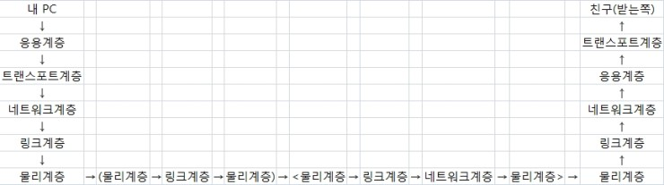
언뜻보면 복잡하지만 하나씩 알아보면 쉽게 이해할 수 있다.
1) 내가 보낸 파일은 응용계층으로 전달된다.
응용계층(application layer)이란 통신망으로 연결된 응용 프로세서들의 정보교환이 되는 계층이라고 해두자.
FTP, HTTP 이런 것들이 바로 응용계층이라는 것이다.
통신 수단의 이용자 위치(최상위)에 있으면서 정보교환에 통신처리 기능을 담당하는 계층이다.
즉, 내가 보낸 파일은 메일이 될지 아니면 FTP식 파일전송일지 HTTP식 웹전송인지에 맞게 응용계층에서 프로토콜을 써서 내가 보낸 파일의 전달 프로토콜을 설정하게 된다.
그래서 메일전송 프로토콜 SMTP, 파일전송 FTP, 하이퍼텍스트 전송 HTTP 등이 응용계층에 속하는 프로토콜인것이다.
2) 이제 응용계층(application layer)에서 프로토콜을 정했다면 이제 전송이 되어야 할 차례이다.
바로 그 전송을 담당하는 계층이 Transport(전송하다) 전송계층(Transport Layer)인 것이다.
그렇다면 전송하는데는 어떤것이 있으며 어떤방식으로 전송을 하는 것일까?
통신방식에는 '연결지향' 또는 '비연결 지향'으로도 나눌 수 있는데, 쉽게 말하자면 TCP인가 UDP인가라는 것이다.
그래서 트랜스포트(전송) 계층에 있는 프로토콜은 TCP와 UDP가 있다.
메일전송 프로토콜인 SMTP의 경우는 TCP를 기반으로 이용하는 프로토콜이다.
그럼 FTP의 경우는 무엇일까? FTP도 역시 TCP를 기반으로 하는 프로토콜이다.
이렇게 응용계층에서 프로토콜을 정하고 전송계층에서 전송방식을 정하는 것이다.
3) 전송방식을 결정했으면 전송을 해야한다.
바로 이 네트워크 계층(Network Layer)이 실제 네트워크를 담당하는 계층이라 볼 수 있다.
통신망에 연결된 시스템의 데이터 전송과 교환기능을 담당하는 계층이며 대표적인 프로토콜로 IP가 있다.
보통 TCP/IP라는 것도 있지만 둘은 엄연히 다른 존재이다.
TCP/IP에서 IP는 호스트 간에 어드레싱과 패킷 라우팅을 담당한다.
(※어드레싱이란 주소에 맞게 접근하는 것이라고 생각하면 된다)
그렇다면 IP가 하는 일은 TCP에서 시키는대로 그냥 보내기만 하는것이라 볼 수 있다.
IP는 TCP사장님이 고용한 알바생정도로 생각하면 이해가 쉽겠다.
그렇기 때문에 신뢰적 전송을 보장한다던지 그런 일들은 IP가 책임지지 않는다.
전송형태에 대한것은 이미 TCP가 다 정해놓고 IP는 그냥 보내는 역할만 하기 때문이다.
하지만 보내는 역할에 있어서 최단경로가 어디인지, 무엇부터 보내는지 이러한 것들은 알바생의 역량이다.
이러한 역할을 해주는 장비를 바로 '라우터'라고 한다.
4) 이제 전송도 끝났다. 하지만 지금까지는 우리가 머릿속으로 그려서 구분해놓은 논리적인 계층이었다.
위의 네트워크 계층에서는 라우터를 통해서 패킷을 전달하는 역할을 했다.
전달하는 경로상의 한 노드에서 다른 노드로 패킷을 이동시키기 위해서는 바로 이 링크계층(Link Layer)을 거쳐야 한다.
결국 링크계층이 하는 일은 완전 실제 전달인 것이다.
좀 더 정리해보자면 물리계층에서 사용되는 통신매체를 통해 데이트 블록의 전송 에러검출 및 에러제어를 관리하고 규정하는 계층이라 할 수 있다.
스위치나 브릿지같은 장비가 바로 이 계층에 속하게 되고 추후에 더 자세히 배울 기회가 있으니 그때 더 알아보도록 하자.
5) 이제 노드에서 노드로 갈때의 실제 전송매체를 물리계층(Psysical Layer)이라 한다.
즉, 물리계층에는 광케이블이나 동축케이블, 꼬임쌍 동선 등등 여러가지가 있을 수 있다.
6) 마지막 추가내용으로 아까 위의 표를 보게되면
(물리계층 → 링크계층 → 물리계층) → <물리계층 → 링크계층 → 네트워크계층 → 물리계층>이 부분이 있었다.
여기서 앞의 ()로 묶인것은 브리지가 되겠고 뒤에 <>로 묶인것은 라우터라고 보면 되겠다.
브리지(bridge)는 네트워크 계층의 일을 하지는 못하지만 라우터는 네트워크 계층의 일까지 하기 때문에 저렇게 되어 있는 것이다.
이 장비들은 '네트워크 기초' 부분에서 더 알아보도록 하자.
< 단계별 데이터 송수신>
|
송신 |
||
|
애플리케이션층 |
수신측의 애플리케이션에서 처리할 수 있도록 만든다 |
↓ |
|
트랜스포트층 |
네트워크 상에서의 공통 된 형태로 만든다 |
↓ |
|
네트워크층 |
수신처로 가는 경로를 정하고 보낼 수 있는 형태로 만든다 |
↓ |
|
데이터 링크층 |
비트열(0과 1로 표현)로 변환한다 |
↓ |
|
물리층 |
비트열을 전압의 변화나 빛의 점멸 신호로 변환하여 송신한다 |
↓ |
|
수신 |
||
|
애플리케이션층 |
애플리케이션에서 표시한다 |
↑ |
|
트랜스포트층 |
데이터에 문제가 있으면 재전송을 요청한다 |
↑ |
|
네트워크층 |
데이터의 수신인을 확인하고 자기 앞으로 온 것이 아니면 파기한다 |
↑ |
|
데이터 링크층 |
비트열을 데이터로 변환한다 |
↑ |
|
물리층 |
전압의 변화나 빛의 점멸 신호를 비트열로 변환한다 |
↑ |
MAC 주소(물리적 주소)
MAC 주소(Media Access Control Address)는 네트워크 세그먼트의 데이터 링크 계층에서 통신을 위한 네트워크 인터페이스에 할당된 고유 식별자 이다.
MAC 주소는 이더넷과 와이파이를 포함한 대부분의 IEEE 802 네트워크 기술에 네트워크 주소로 사용된다.
논리적으로 MAC 주소는 매체 접근 제어 프로토콜이라는 OSI 모델의 하위 계층에서 사용된다.
MAC 주소는 대체적으로 네트워크 인터페이스 컨트롤러(NIC)의 제조업체가 할당하며 하드웨어에 저장되는데, 이는 마치 카드의 읽기 전용 메모리나 일부 다른 펌웨어 구조와 같다.
제조업체에 의해 할당되면 MAC 주소는 일반적으로 제조업체의 등록된 식별 번호로 인코딩되며 이를 BIA(burned-in address)로 부를 수 있다.
또, 이더넷 하드웨어 주소(Ethernet hardware address, EHA), 하드웨어 주소, 물리 주소(메모리 물리 주소와 다름)로 부르기도 한다.
이는 호스트 장치가 NIC에 명령을 할당하여 임의의 주소를 사용하는 프로그래밍된 주소와는 다른 것이다.
이더넷의 물리적인 주소. 이더넷 카드의 읽기용 기억 장치(ROM)에 기록된 것으로서 주소 크기는 48비트인데, 전반부 24비트는 미국 전기 전자 학회(IEEE)가 벤더에게 할당하면, 벤더
측은 후반부 24비트에 대하여 세부 할당을 한다.
통신망 운용 상태를 감시하기 위한 모니터 초기 화면에는 각 기계의 이름이 미리 망 관리 인터페이스 카드(NIC:network interface card)에 할당되어 MAC
주소(MACA)로 표시되어 있다.
이것만으로는 기계명을 분간하기 곤란하므로 메뉴의 ‘capture’로 ‘모든 이름의 검색’을 선택, MACA를 기계명으로 변환해 둔다.
일반적으로 48비트 길이이며, 통상 개인용 컴퓨터(PC)나 구내 정보 통신망(LAN) 기기의 LAN 접속구(NIC: network interface card)상의 ROM에 기입해 두고,
MAC층 데이터 프레임의 앞쪽(머리부)에는 송신처와 주소를 지정해서 사용한다.
물리적주소는 데이터통신을 하기 위해 꼭 필요한 것입니다.
결론부터 말씀드리자면 네트웍에서 통신을 하려면 목적지 노드(컴퓨터)에 대한 하드웨어 주소(MAC주소)가 있어야 합니다.
즉, ip 주소나 물리적 주소(하드웨어 주소) 어느 것 하나라도 빠지면 네트웍에서 통신을 할 수 없습니다.
왜 그런지 간단히 설명하겠습니다.
ip 주소는 네트웍 상의 노드를 구별해주는 논리적인 주소일 뿐입니다.
IP 주소를 이용하면 네트웍상의 유일한 호스트를 식별하는 것뿐만 아니라, 호스트가 있는 네트웍를 식별할 수 있는 것입니다.
다시말해, 서로 주고 받을 정보(데이터 패킷)를 송수신하는 장치(network interface card, 일명 랜카드)가 어느 네트웍에 있는지 알려주는 주소입니다.
실제로 데이터 전송은 하드웨어 주소로 이루어집니다.
여기서 하드웨어주소란 MAC주소를 말합니다.
컴퓨터 내부 장치들을 제어하는 cpu 는 자신에게 맡겨진 데이터(비디오카드, 사운드카드, 하드디스크 등 각종 장치들이 주고 받는 데이터들을 말합니다.)를 누구에게 맡기면 되는가를 판단하고
데이터를 넘기기 위해 각종 장치에 일련의 주소를 사용합니다.
마찬가지로 외부와의 데이터 송수신을 담당하는 네트워크인터페이스카드(랜카드)에도 주소를 할당하여 사용하는 것이지요.
ip주소를 통하여 상대방의 지역네트웍을 식별하였으면 ARP(주소결정 프로토콜)을 사용하여 상대방의 물리적주소를 알아냅니다.
알아내는 과정을 간단히 설명하면
ARP요청패킷을 지역네트웍에 방송(브로드캐스팅)하면 지역네트웍에 속한 각 노드는 이 ARP요청패킷을 수신하여 본인에 대한 요청인지 아닌지 판단합니다.
본인에 대한 것이라고 판단하면 ARP응답패킷을 만들어 요청한 노드에 주소 정보를 반송합니다.
ARP 응답패킷을 받은 노드는 주소 결정에 관한 새로운 지식을 기록한 후 방금입수한 목적지 노드에 대한 하드웨어주소로 데이터를 보내게 됩니다.
서로 다른 네트웍에 속한 노드끼리의 정보 통신은 여러 계층의 프로토콜과 게이트웨이, 브릿지, 라우터와같은장비를 거쳐 이루어지게 됩니다
UDP와 TCP
TCP - 연결지향이며, 자체적으로 오류를 처리하며, 네트웍 전송중 순서가 뒤바뀐 메시지를 교정시켜주는 기능을 가지고 있다.
연결지향이란말은 데이타를 전송하는 측과 데이타를 전송받는 측에서 전용의 데이타 전송 선로(Session)을 만든다는 의미이다.
데이타의 신뢰도가 중요하다고 판단될때 주로 사용된다.
UDP - 비연결지향이며, 오류를 처리하거나 순서를 재조합시켜주는 기능을 가지고 있지않다.
단순히 데이타를 받거나, 던져주기만 하는 프로토콜이다.
UDP는 특히 실시간 멀티미디어 정보를 처리하기 위해서 주로 사용한다.
TCP를 실시간 멀티미디어 정보를 처리하는데, 사용할경우 TCP의 오류정정 특성상 메시지가 도착하지 않거나 할경우 다음 메시지를 받지 않고, 메시지 재전송을 요구하므로, 실시간으로
전송하기에는 그리 적당하지 않기 때문이다.
반면 UDP를 사용하면 중간에 패킷이 소실되더라도 개의치 않고 다음 패킷을 받아들이므로 실시간으로 메시지 처리가 가능하다.
물론 약간의 데이타 손실로 인해서 멀티미디어 데이타의 질이 떨어질수도 있으나, 화질이나 음질에 약간의 손상이 있더라도 계속적으로 서비스가 되는게 훨씬 더 유리할것이다.
전화를 하는데, 약간 잡음이 섞인다고 해서, 잡음을 정정하기 위해서 서로 통화를 못하는 사태가 발생하면 안되는것과 같은 이치이다.
TCP-(ACK=Acknowledgement=확인 응답)
확인응답 (Acknowledgement) 이란?
ㅇ 송신된 메세지가 수신측에서 정상적으로 수신되었음을 송신측으로 확인응답하는 것
신뢰성 제공
• 신뢰성: 하나의 호스트에서 다른 호스트로 데이터의 중복이나 손실 없이 데이터의 전송을 보장함을 의미
공인 IP, 사설 IP, 고정 IP, 유동 IP
IP 주소란?
요약하자면 IP 주소란 인터넷에 접속하기 위해 컴퓨터나 스마트폰 등에 부여하는 고유한 주소라고 정의할 수 있겠다.
따라서, 모든 장비에는 IP 주소가 부여되어야만 한다는 의미로 이해하면 되겠다
IPv4 주소 체계
앞절에서 정의한 IP 주소를 부여하는 방식으로 현재 쓰이는 것이 IPv4 (IP version 4) 규약이다.
이 주소는 우리도 흔히 알듯이 32비트로 구성된 주소체계로 0~255 사이의 십진수 넷을 구분하여 부여한다.
흔히 우리가 주변에서 IP 주소를 168.126.63.1 과 같이 네자리의 10진수로 나눠서 부를 때 이것이 IPv4 주소라고 보면 된다.
IPv4 주소 체계에서는 이론적으로 부여할 수 있는 주소의 총 수는 0.0.0.0 ~ 255.255.255.255 로 256 x 256 x 256 x 256 = 42억 9496만
7296개가 최대가 된다.
공인 IP---네이버등에서 아이피검색
앞에서 설명한 IPv4 주소는 임의로 우리가 부여하는 것이 아니라 전세계적으로 ICANN이라는 기관이 국가별로 사용할 IP 대역을 관리하고 우리 나라는 인터넷 진흥원(KISA)에서
우리나라 내에서 사용할 주소를 관리하고 있다.
따라서, 임의로 아무 IP 주소나 내 컴퓨터에 지정한다고 인터넷이 되는 것이 아니라 할당받은 주소를 부여해야만 인터넷에 접속할 수 있게 된다.
IPv4는 크게 4자리의 대역에 따라서 다음과 같이 분류할 수 있다. http://ko.wikipedia.org/wiki/IPv4 에 자세한 내용이 설명되어 있다.
A 클래스는 네자리의 IP 주소 대역 중에서 두번째, 세번째, 네번째 주소를 마음대로 부여할 수 있는 최상의 클래스로 클래스 당 255 x 255 x 255 개의 주소를 가질 수
있다.
B 클래스는 네자리의 IP 주소 대역 중에서 세번째, 네번째 주소를 마음대로 부여할 수 있는 클래스로 클래스 당 255 x 255 개의 주소를 가질 수 있다.
C 클래스는 맨 뒤 네번째 자리만 마음대로 부여할 수 있는 주소로 클래스 당 255개의 주소를 갖는다.
이와 같이 클래스를 분류해뒀는데, 문제는 IP가 부족하다보니 서버 운영 시에 원하는 대로 IP 주소를 부여받을 수 없고, 서버 운영 업체나 기관 들에 할당된(미리 돈을 지불하고 산다)
주소 중에서 자신의 컴퓨터에 주소를 할당 받아야 한다.
최근의 IP 부족 사태는 인터넷 발전 초기에 IP 주소를 무계획적으로 배분했기 때문에 발생하는 문제이다.
대표적으로 미국의 일반 기업인 IBM이나 모토롤라 등은 초기에 인터넷 주소를 부여받으면서 A 클래스를 부여받았고, 우리나라내에서도 KAIST나 서울대 등은 B 클래스를 보유하여 학교내의
PC들에게도 마구 공인 IP를 부여하고 있는 웃지 못할 상황이다.
반면 최근에 IP를 신청하는 기업은 많은 비용을 지불하고도 C 클래스 대역조차 얻기가 쉽지않은 현실이다.
사설(가상) IP----cmd→ ipconfig 엔터
전체 IP 대역 중에서 특수한 목적으로 사용하기 위해서 몇 개의 대역을 제외하고 공인 IP 대역으로 할당하고 있는데, 제외된 대역 중에서 사설 IP로 사용되는 대역은 사용자가 임의로
부여하고 사용할 수 있지만 인터넷 상에서 서로 연결되지 않도록 되어 있다. 전체 IP 대역 중에서 다음의 대역이 사설 IP 대역이다.
A 클래스 : 10.0.0.0 ~ 10.255.255.255
B 클래스 : 172.16.0.0 ~ 172.31.255.255
C 클래스 : 192.168.0.0 ~ 192.168.255.255
위의 3개의 클래스 대역은 사용자가 자신의 컴퓨터에 임의로 부여해도 되는 IP 주소 대역이 된다.
따라서 회사 내부나 집에서는 공인 IP를 부여받지 않은 상태에서 위의 주소 대역 중에서 아무 주소나 할당을 해도 문제가 발생하지 않는다는 것이다.
따라서 공인 IP 주소가 모자랄 경우 사설 IP로 회사나 가정 내의 IP 주소를 부여하고 공유기 등에 고정 IP를 부여한 다음에 인터넷에 접속하는 방식이 널리 퍼지게 되었고, 대부분의
장비가 현재는 사설 IP를 부여하고 공유기나 라우터(사실 공유기가 라우터다)를 통해 인터넷에 접속하게 된다. 단 사설 IP를 부여한 컴퓨터는 공인 IP에서 알아볼 수가 없다는 점이
특징이다.

위의 그림을 보면 컴퓨터에 부여된 IP 주소인 192.168.0.2 ~ 192.168.0.4과 공유기의 내부 주소인 192.168.0.1은 사설 IP이고 공유기가 인터넷에 연결된
168.126.63.1은 공인 IP가 된다.
서버에 설치된 IP인 164.124.101.2도 공인 IP이다. 따라서 인터넷 상에서 164.124.101.2라는 주소를 치면 서버에 접속할 수 있지만 192.168.0.x 대역에 있는
피시와 노트북에는 접속할 수 없다.
가정에 설치된 공유기 관리 화면에 접속해보면 위의 같은 형태로 IP가 부여되어 있음을 알 수 있을 것이다.
고정 IP와 유동 IP
고정 IP는 컴퓨터에 고정적으로 부여된 IP로 한번 부여되면 IP를 반납하기 전까지는 다른 장비에 부여할 수 없는 IP 주소를 말한다.
유동 IP는 장비에 고정적으로 IP를 부여하지 않고 컴퓨터를 사용할 때 남아 있는 IP 중에서 돌아가면서 부여하는 IP를 뜻한다.
부여받은 IP가 10개이고 접속해야할 컴퓨터가 20대라면 10대는 고정 IP를 부여할 경우 IP가 모자라므로 유동 IP로 10개를 20대가 돌아가면서 사용할 수 있다.
결론적으로 인터넷 상에서 서버를 운영하고자 할 때는 공인 IP를 고정 IP로 부여해야 한다는 것이 중요하다.
즉, 공인 IP를 부여받지 못하면 다른 사람이 내 서버에 접속할 수가 없고, 고정 IP를 부여하지 않으면 내 서버가 아닌 다른 사람의 서버로 접속이 될 수도 있기 때문이다.
반면에 우리가 집에서 사용하는 인터넷 서비스 업체는 각 가정마다 공인 IP를 유동 IP로 부여하고, 공유기 내부에서는 사설 IP를 유동 IP로 부여하는 것이 일반적이라고 보면 될
것이다.
서버
서버(영어: server)는 클라이언트에게 네트워크를 통해 정보나 서비스를 제공하는 컴퓨터(server computer) 또는 프로그램(server program)을 말한다.
특히, 서버에서 동작하는 소프트웨어를 서버 소프트웨어(server software)라 한다. 주로 리눅스 등의 운영 체제를 설치한 대형 컴퓨터를 쓰지만, 그렇지 않은 경우도
있다.
서버는 프린터 제어나 파일 관리 등 네트워크 전체를 감시·제어하거나, 메인프레임이나 공중망을 통한 다른 네트워크과의 연결, 데이터·프로그램·파일 같은 소프트웨어 자원이나 모뎀·팩스·프린터
공유, 기타 장비 등 하드웨어 자원을 공유할 수 있도록 도와주는 역할을 한다.
서버는 사용자(클라이언트)의 요청에 의하여 서비스를 하는데 이와 같이 구성된 시스템을 클라이언트-서버 시스템이라고 하며, 이는 하나 이상의 응용 프로그램을 상호 협력적인 환경에서 운용하는
분산처리 형태를 의미한다.
즉, 서비스를 요청하는 클라이언트와 클라이언트의 요청을 처리하는 서버와의 협동작업을 통해서 사용자가 원하는 결과를 얻는 처리방식이 클라이언트-서버 시스템이다.
어떤 형태의 컴퓨터든 정보제공 역할을 하는 주체이면 서버컴퓨터로 불릴 수 있다
물리적인 형태가 아닌 네트워크 상의 연결 상태로 컴퓨터를 분류하라면 컴퓨터는 ‘서버(server)’와 ‘클라이언트(client)’로 나눌 수 있다.
다양한 서버의 세계
모든 서버의 바탕, 하드웨어 서버
일반적으로 이야기하는 서버는 크게 3가지 종류가 있습니다. 첫 번째는 우리가 가장 많이 알고 있는 하드웨어 서버입니다.
간단히 설명하면 서버는 PC와 구조상 같지만, 성능이나 안정성이 높은 장비입니다. 하지만 성능이나 안정성이 높다는 차이만 있는 것이 아닙니다.
서버가 서버의 임무를 수행하기 위해서는 다양한 명령어를 수행할 수 있는 CPU와 명령을 전달하고 제어해주는 OS가 있어야 합니다.
이런 특징으로 구분해보면,하드웨어 서버들은 크게 메인프레임, 유닉스, x86 서버 이렇게 3종류로 나눌 수 있습니다.
메인프레임은 IBM이라는 회사에서 만드는 서버를 말합니다.
IBM은 가장 오래된 서버이자, 현대 서버의 아버지뻘 되는 장비입니다.
컴퓨터라는 용어조차 생소하던 1970년대부터 메인프레임이라는 이름의 서버를 생산했습니다.
‘주(Main)가 되는 장비(Frame)’라는 뜻으로 대형 냉장고만 한 크기의 장비입니다.
또한, 여러 사람이 동시에 서비스를 이용할 수 있도록 해주는 데이터 공유, 동시성 제어, 가상화 기술 등을 제공했습니다.
당시에 이러한 성능과 기능을 가진 장비는 메인프레임이 거의 유일하다고 할 수 있었기 때문에, 굉장히 고가임에도 불구하고 전 세계 수많은 금융회사와 대기업, 연구실 등에서 널리
사용됐습니다.
지금도 꾸준히 새로운 제품이 출시되고 있습니다.
다음은 유닉스 서버입니다. 메인프레임이 성능이나 기술 측면에서 우위에 있긴 했지만 아무래도 가격이 높아 널리 사용하기에는 부담스러웠습니다.
특히 통신의 발달로 더 많은 사람에게 다양한 서비스를 제공해야 하는데 메인프레임으로는 확장에 무리가 있었던 것이죠.
그래서 유닉스 서버가 등장하게 됩니다. 1980년대부터 유닉스 서버라는 이름으로 몇몇 업체가 개발을 시작했고, 메인프레임보다 물리적인 크기가 작아졌으며 접근이 쉬웠습니다.
유닉스 서버는 IBM, HP, Oracle(과거 SUN) 사의 장비들이 대표적인데요, 각각 자사 서버에 특화된 CPU와 OS를 생산하며 개발하고 있습니다.
국내의 많은 회사, 특히 은행, 카드사 등 금융권에서 주력으로 많이 사용하고 있습니다.
마지막은 x86 서버입니다. x86이란 용어는 윈도 디렉토리 이름 ‘Program Files(x86)‘에도 포함되어 눈에 익은 단어이지만, 왜 x86이라고 부르는지 모르는 분들이
많습니다.
간단히 설명하면 x86은 인텔이 자사의 CPU 아키텍처에 붙인 명칭이라고 생각하면 됩니다.
인텔은 PC라는 용어가 나오는 시작하던 무렵, 8086이라는 CPU를 개발했는데 이후 80286, 80386, 80486을 거쳐 유명한 펜티엄(80586) CPU를 만들었죠.
이후 PC용 고성능 CPU의 대명사로 대중에게 인식되면서 686, 786 에 해당하는 새로운 아키텍처의 CPU가 출시됐음에도 20년이 넘게 펜티엄이라는 용어를 사용하였습니다.
x86은 초기 개인용으로 개발이 됐기 때문에, 메인프레임이나 유닉스와는 다르게 CPU 회사와 OS 회사가 별개입니다.
그래서 CPU는 인텔이나 AMD가 생산하지만, OS는 MS사의 DOS와 윈도, IBM의 OS/2, CentOS, Fedora 등 리눅스 OS까지 다양한 OS를 지원하고
있습니다.
장비 한 대로 일당백, 가상화 서버
앞서 여러 종류의 하드웨어 서버들을 살펴보았습니다. 서버가 그 역할을 하기 위해서는 CPU와 OS가 필요하다고 말씀 드렸는데요.
초기에는 CPU가 하나뿐이라 하나의 OS만 사용해도 되었지만, 기술의 발전으로 CPU 하나에도 여러 개의 코어가 탑재되고, 서버는 이러한 CPU가 적게는 2개부터 많게는 10개 이상
장착이 가능해지다 보니 이런 고성능의 장비를 하나의 OS로 사용하기에는 효율이 떨어지게 됐습니다.
그래서 ‘물리적으로 한 대의 장비지만 이것들을 여러 대처럼 사용할 방법이 없을까?’ 고민한 끝에 등장한 것이 바로 가상화 서버입니다. 이런 가상화 기술은 메인프레임, 유닉스 시절부터
적용이 되었는데요. 그 이유는 이러한 장비들은 장비 한 대가 매우 고가이면서 사양이 높았기 때문입니다. 그래서 별도의 제어장치를 구성하여 가상 서버 여러 개를 만들 수 있도록
했습니다.
x86 서버는 여러 방식이 있지만, 현재 가장 일반적으로 사용되는 방식은 바로 하이퍼바이저(hypervisor)와 VM(virtual machine)를 기반으로 하는 방식입니다.
이 방식은 하이퍼바이저가 서버의 물리적 자원인 CPU와 메모리를 일정 부분 할당하고 그 자원을 활용하여 OS를 구성할 수 있도록 해줍니다.
이렇게 생성된 가상의 서버를 VM이라고 부르며, 이러한 VM은 하드웨어 서버의 크기에 비례하여 여러 개에서 수십 개의 가상 서버를 만들어낼 수 있습니다.
실제 사용해보면 해당 서버의 관리자가 아닌 이상 가상화 서버인지, 물리 서버인지 차이를 느낄 수 없게 만들어져 있습니다.
우리가 많이 사용하는 클라우드 역시 대부분 이러한 가상 서버 기반으로 구성돼 있으며, VMware, MS 등 많은 업체에서 이러한 기술들을 제공하고 있습니다.
최근에는 한발 더 나아가서 하이퍼바이저 없이 ‘컨테이너’라는 가상환경을 제공하고 있어, 더욱 유연하고 효율적으로 서버를 활용하는 기술도 등장하고 있습니다.
이것까지 정말 다 돼? 소프트웨어 서버
소프트웨어 서버는 프로그램 개발자의 시각으로 바라본 서버입니다. 보통 개발자들은 서버를 ‘내가 작성한 프로그램이 수행되는 장소’로 생각합니다.
제가 처음 입사했을 때 업무교육을 위해 톰캣(Tomcat)이라는 프로그램을 PC에 설치하고 몇 가지 설정을 해주면 내 PC도 서버가 될 수 있다는 사실을 알고 나서 너무 놀랐던 기억이
납니다.
서버라고 하면 뭔가 크고 비싸고 대단할 것 같다는 생각이 있었거든요. 나중에 알고 보니 이것이 우리가 일반적으로 말하는 ‘웹 서버’를 말하는 것이었습니다.
웹 서버는 Http나 Https 프로토콜을 사용해 사용자들에게 웹 기반의 서비스를 제공할 수 있도록 해주는 ‘소프트웨어로서의 서버’입니다.
이러한 웹 서버는 Http 서버와 WAS(Web Application Server)로 구분됩니다.
간단히 말해 http서버는 글자나 이미지 등을 보여주는 정적인 기능을 주로 수행하고, WAS는 사용자의 입력 값을 받아서 계산하거나, DB에서 해당하는 정보를 가져오는 형태의 동적인
기능을 수행합니다.
온라인 게임을 예로 들면, 처음 사이트에 접속할 때에는 Http 서버가 화면의 이미지들을 보여주게 되고, 실제 게임에 접속해서 일어나는 일들은 WAS가 처리한다고 생각하시면 됩니다.
그래서 여러분들이 게임을 할 때 친구들과 같은 공간에서 접속한다면 그것은 ‘우리가 같은 WAS(혹은 유사한 기능을 하는 서비스)에 들어와 있구나!’라고 생각하시면 됩니다.
이렇듯 소프트웨어 서버는 제공하는 서비스의 종류에 따라 다양하게 부르고 있습니다.
웹 서버 이외에도 메일을 주고받는 기능이 있으면 메일 서버, DB를 제공하면 DB 서버, 주소 변환 기능을 제공하면 DNS 서버, 파일을 주고받는 FTP 서버 등으로 다양하게 부르고
있습니다.
하나의 서버에도 여러 기능을 탑재하면 다양한 기능을 제공할 수 있기 때문에, 서버라기보다는 서비스라고 부르는 게 더욱 적합할 것 같습니다.
지금까지 우리가 흔히 사용하는 서버라는 용어에 담긴 많은 내용에 대해 알아보았습니다. 사실 서버가 뭔지 잘 몰라도 다양한 서비스들을 이용하는 데에는 아무런 문제가 없습니다.
서비스 회사들은 점점 더 사용자들이 서비스를 이용하기 쉽게 하는 것에 초점을 두고 있기 때문이죠.
하지만 겉으로 드러난 서비스의 내면에 이런 장비와 기술들이 깔려있다는 사실에 대해서 알게 되고, 이러한 서비스가 어떻게 가능한지 생각해본다면, 여러분은 단순한 이용자를 넘어서 새로운
즐거움의 세계에 첫발을 들이게 될 것입니다. 어쩌면 많은 사람을 매료시킬 새로운 서비스의 창조자가 될 수도 있을 것입니다.
웹서버
웹 서버(web server)는 다음의 두 가지 뜻 가운데 하나이다.
웹 서버 : 웹 브라우저와 같은 클라이언트로부터 HTTP 요청을 받아들이고, HTML 문서와 같은 웹 페이지를 반환하는 컴퓨터 프로그램
웹 서버 (하드웨어) : 위에 언급한 기능을 제공하는 컴퓨터 프로그램을 실행하는 컴퓨터
웹 서버(Web Server)는 HTTP를 통해 웹 브라우저에서 요청하는 HTML 문서나 오브젝트(이미지 파일 등)을 전송해주는 서비스 프로그램을 말한다.
웹 서버 소프트웨어를 구동하는 하드웨어도 웹 서버라고 해서 혼동하는 경우가 간혹 있다.
클라우드 컴퓨팅 Cloud Computing
흔히 우리는 네이버의 'N드라이브', 구글의 '구글 드라이브', 'DropBox' 등등
저장하기 위한 원격저장소를 클라우드라고 생각한다.
하지만, 이는 클라우드가 제공하는 서비스 중 극히 작은부분을 차지한다고 생각한다.
클라우드 컴퓨팅은 서버, 스토리지, 네트워크, SW 등 ICT(정보통신기술) 자원을 필요할때
인터넷을 통해 서비스 형태로 제공받아 이용하는 방식이다.
(쉽게 말하면, 컴퓨터 서버를 자신이 원하는 퍼포먼스에 맞게 제공받는 것)
물론, 이는 무료가 아니다.
무료체험식으로 이용할 수는 있지만, 결국 제대로 사용을 하려면 돈을 지불하고,
클라우드 서비스를 제공받아 이용할 수 있다.
이러한 서비스를 제공해주는 아마존, 구글, 국내에서는 SK의 cloud Z, KT의 U cloud 등등 여러 회사가 있다.
클라우드 서비스 유형 (IaaS / PaaS / SaaS)
이렇게 제공해주는 클라우드 서비스를 3가지로 나눌 수 있다.
IaaS : Intrastructure as a Service의 약자, 인프자 자원을 서비스 해줌
PaaS : Platform as a Service의 약자, 개발에 필요한 환경을 서비스 해줌
SaaS : Software as a Service의 약자, 사용자가 원하는 소프트웨어를 서비스 해줌
IaaS는 컴퓨터 자원을 빌려준다. CPU 코어의 개수, 메모리의 용량, 하드디스크 등등 컴퓨터 자원을 사용자가 원하는 형태로 제공해준다.
PaaS는 컴퓨터 자원은 물론이고, 플랫폼까지(개발환경) 제공해준다.
SaaS는 소프트웨어까지 모두 다 제공해주며, 사용자는 그저 사용만 하면 된다.
Http,와 Https의 차이점
HTML이란
우리가 보는 웹 페이지의 대부분은 확장자가 html이다.
htm인 것도 있는데, 그것은 예전 도스 기준으로 확장자가 3자밖에 되지 않기 때문에 어쩔 수 없이 끝을 자른 것으로 요즘은 잘 없다.
기타 php, aspx, jsp 등도 있다. 이들은 각각 웹 서버의 처리 엔진에 따른 결과물인데, 사실 확장자는 중요한 게 아니다.
어차피 확장자가 php,aspx,jsp인 것도 다들 html이다. 웹 브라우저는 확장자를 보고 이게 html인 줄 아는 게 아니라, 헤더에 있는 타입을 보고 아는 것이다.
우리가 보기에 확장자가 php라도, 헤더에는 txt/html로 타입이 규정되어 있고, 웹 브라우저는 그래서 이게 html인 줄 안다.
웹 페이지는 메모장으로 소스 보기를 하면 보이듯이
그림 파일이나 다른 요소는 따로 표시되어 있지 페이지 속에 들어가지 않는다.
HTTP란
Http는 이런 HTML 같은 문서를 웹 브라우저가 웹 서버에 요청하는 프로토콜이다.
프로토콜이라는 것은 일종의 대화 규칙이다. 우리가 폰뱅킹할 때를 보면 지정된 코드를 누르면 정해진 응답이 온다.
그런 것이다. 이게 없다면 웹 서버는 웹 브라우저가 무슨 페이지를 달라고 하는 건지도 모를 것이고 웹 브라우저도 웹 서버가 무슨 페이지를 보내는 건지 알 수가 없다.
Http도 그냥 텍스트 교환일 뿐이다. 복잡한 바이너리 데이터가 아니라 그냥 텍스트 메시지를 주고 받는다.
물론 그 텍스트 메시지 안에 HTML 페이지도 들어 있다. 텍스트이기 때문에 만약 내가 있는 네트워크 안에서 누가 그 신호를 가로채어 본다면 내용이 그대로 보이게 된다.
만약 내가 메일을 읽고 있는데 누가 그 신호를 가로챈다면 메일 내용을 읽을 수 있을 것이다.
HTTPS란
Https는 http하고 거의 같지만 모든 통신 내용을 암호화하는 것이 다르다.
사실 s가 secure socket, 즉 안전한 통신망을 뜻한다. 우리는 파일에 암호를 많이 걸어 봤다.
어떤 키를 설정해서 걸면 나중에 풀 때에도 그걸 입력해 푸는 것이다. 키라는 것은 암호화를 푸는 암호 즉 패스워드같은 것이다.
웹 서버가 키 하나를 정해서 페이지를 암호화해서 사용자의 웹 브라우저로 보내고 웹 브라우저는 그 키를 이용해서 페이지를 복원한다... 이러면 좋겠지만 이렇게 간단하지 않다.
웹 서버는 하나이지만 사용자는 불특정 다수이다.
그런데 키를 사용자들에게 줘 버리면 아무나 암호화를 풀 수 있게 된다.
영희에게 갈 페이지를 철수도 풀어서 볼 수 있게 되는데, 이러면 암호화의 효과가 없다.
즉, 페이지 암호화 키가 그 페이지를 보는 특정 사용자에게만 알려져야 한다.
어떻게 이렇게 할 수 있을까? 이것이 바로 https 프로토콜이 하는 것이다.
위에서 말한 암호화 방식을 사용하되, 그 키를 다시 공개 키로 암호화하고 인증하는 것이다.
공개 키는 쉽게 말해서 데이터를 암호화하는데 키가 두 개 필요하다는 것이다.
암호화를 푸는 데에는 그 두 개 중 하나의 키만 있으면 된다. (수학적으로 로그 지수를 찾는 것이 어려운 문제에 기초하고 있다. 이렇게 자세한 것까지 알고 싶은 사람은 없겠지만.)
이게 무슨 뜻일까?
옥션 사이트에서는 A,B라는 키를 가지고 있다. 그리고 이 B라는 키만 사용자들에게 알려 준다.
그리고 옥션 사이트에 웹 브라우저가 연결을 시도할 때, 파일 암호화 키를 이 A,B 키로 암호화해서 보내 준다.
그러면 사용자들은 B라는 키로 데이터를 풀어 볼 수 있다. A는 옥션 관리자 말고는 아무도 모르기 때문에, B만 알아서는 옥션과 똑같이 암호화를 할 수 없다.
즉 사용자는 B로 풀어 봐서 풀어지면 이 데이터는 A키를 아는 옥션 관리자가 암호화한 것이라는 걸 알 수 있는 것이다.
http 프로토콜의 경우 중간에서 네트워크 데이터를 가로채어서 마치 자기가 옥션 사이트인 것처럼 해서 가짜 페이지를 보낼 수도 있다.
하지만 https의 경우에는 A키를 모르기 때문에 중간에서 누가 그렇게 할 수가 없다. 이렇게 해서 반대편이 옥션이라는 것을 우리는 믿을 수 있다.
이렇게 믿을 수 있으면 IE같은 브라우저에서는 주소 창의 색을 다르게 해서 안전하다고 알려 준다.
이렇게 해서 웹 서버와 사용자가 교환한 키로 전체 이후로는 HTML을 암호화해서 교환하는 것이다.
이렇게 되면 중간에서 웹 페이지를 누가 가로채어도 내용을 전혀 읽을 수 없다. 사실 시간이 주어진다면 암호화를 풀 수도 있다.
예를 들어 1024비트 암호화를 사용한다면 암호 키가 1024비트, 즉 2의 1024승이라는 것이다.
암호를 계산해서 푸는 방법은 없다 (있다면 그런 암호화는 폐기된다).
키를 모르고 암호화를 푼다는 것은 모든 키를 하나씩 다 대입해서 풀릴 때까지 해 보는 것이다.
그러면 위의 경우 평균적으로 2의 512승 번을 해 봐야 한다. 2의 512승과 2 x 512는 차원이 다르다.
2의 20승만 해도 백 만이 넘는다. 아무리 빠른 컴퓨터로 대입해도 아마 몇 천 년은 해야 할 것이다.
그래서 안전한 것이다.
결론
그러면 https가 안전한데 다 https를 쓰지 http를 뭐하러 쓰느냐고 할 것이다.
https 암호화를 하려면 웹 서버에 부하가 생기고, 위에서 말한 B가 그 서버의 인증서가 되는데, 이것은 Verisign 같은 업체에서 비싼 돈을 주고 사야하므로, 특히 우리
나라 웹 사이트들은 잘 쓰지 않는다.
하지만 외국 금융 사이트에서는 https는 필수이다. 또 http는 비연결형으로 웹 페이지를 보는 중 인터넷 연결이 끊겼다가 다시 연결되어도 페이지를 계속 볼 수 있지만
https의 경우에는 소켓 (데이터를 주고 받는 경로) 자체에서 인증을 하기 때문에 인터넷 연결이 끊기면 소켓도 끊어져서 다시 https 인증을 해야 한다.
그래서 시간이 또 걸린다.
그래서 아무나 봐도 상관 없는 페이지는 http로, 남에게 보이면 안 되는 금융 정보나 메일 등 중요한 것은 https로 하는 것이다.
GMail은 https를 지원한다. 다른 메일을 사용하는 사람은 보안 문제를 좀 더 생각해 보자
 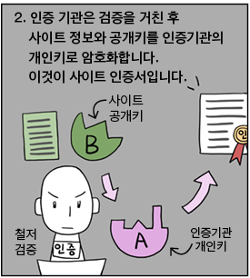
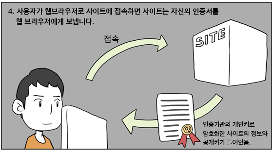
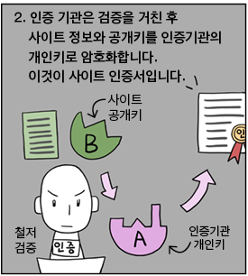
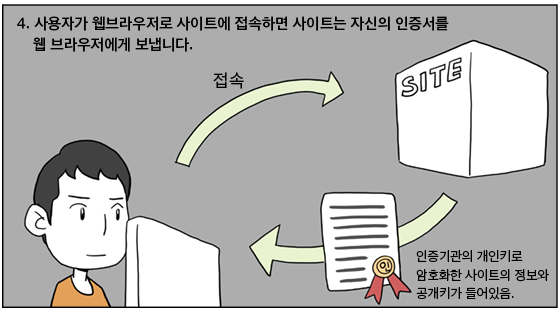
 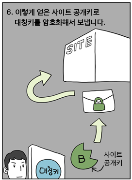
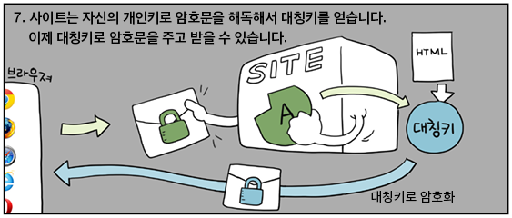
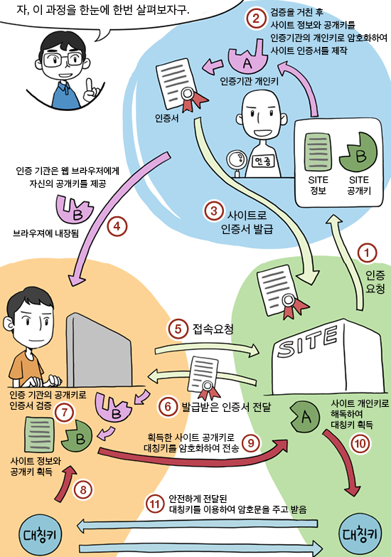
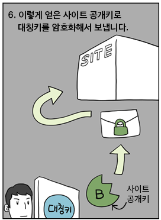
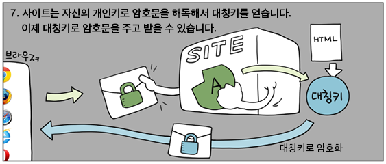
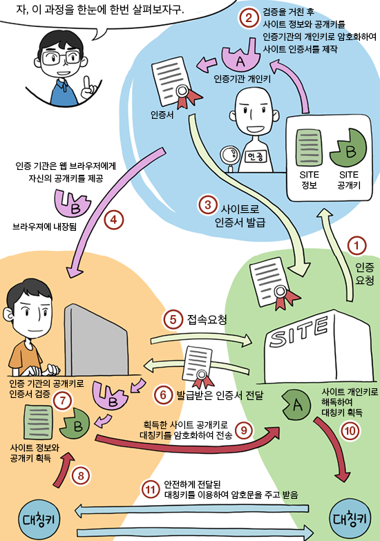
SNI 차단이 뭐야? TLS 1.3은 해결책이 될 수 있을까.
그럼 SNI가 뭐야?
그럼 SNI가 무엇인지 살펴봐야겠죠?
현재 HTTPS 페이지에서 주로 사용되는 접속은 이렇게 이루어집니다.
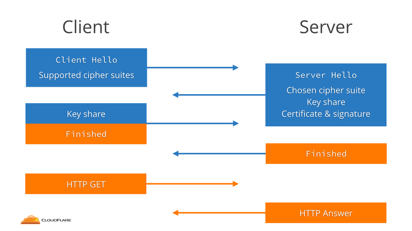
TLS 1.2까지의 접속 과정을 순서대로 설명하면 이렇습니다.
1. 브라우저가 서버에 "나는 TLS를 써서 연결하고 싶다. 나는 이러이러한 암호화 알고리즘(cipher suites)을 쓸 줄 안다" 라고 요청을 보냅니다.
2. 서버가 "그래. TLS 써서 연결하면 된다. 너가 보낸 것들중에 암호화 알고리즘을 골랐으니 이걸 써 줘"라고 합니다.
3. 서로 공개키 기반 암호화에 사용할 키 교환이 이루어집니다. (Key Share)
4. 이제 브라우저가 HTTP GET 요청을 서버가 보낸 키로 암호화해서 보내주면 서버에서는 브라우저가 보낸 키로 암호화한 HTTP 응답을 보냅니다.
5. 페이지 수신 완료.
SNI(Server Name Indication, 서버 이름 특정) 필드는 서버에 말을 거는 1번 과정에 필요합니다.
이 SNI 필드는 어떤 서버에 말을 걸어야 할지 가리켜주는 겁니다.
인터넷 주소에서 도메인은 주소 뒤쪽 두세 덩이 뿐입니다.
가령 msm8994.tistory.com/2 에서 도메인은 tistory.com이 됩니다.
msm8994는 도메인 내에서 사용할 서버 이름인데 이건 별다른 감사나 비용지불(SSL인증서 구입) 또는 검증과정 없이 운영측이 마음대로 만들 수 있습니다.
이런 점을 악용해 피싱 사이트를 만들어 보안카드나 아이클라우드 정보를 수집하는 범죄집단도 있습니다.
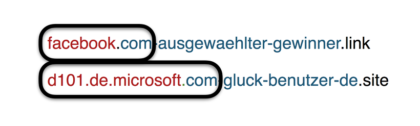
모바일 브라우저에 작은 주소 칸과 모든 HTTPS 사이트에 브라우저가 주소창에 붙여주는 초록색 "안전함" 표식은 사람들이 이 사이트가 진짜 페이스북인 줄로 믿게 합니다.
한 웹사이트에서 여러 서비스(msm8994.tistory.com이나 www.tistory.com이 서로 다른 사이트로 연결되는 것처럼 나뉘어있지요)를 하게 되면서 자연스레 이를 담당하는
서버 역시 나누게 되었습니다.
여기엔 물리적인 컴퓨터 뿐만 아니라 웹서버 프로그램이 나뉘는 것도 포함하는데, 그 서버들을 하나하나 도메인을 등록하는 것은 비용이 많이 들고 사이트 이용자를 혼란에 빠트릴
겁니다.
보통 도메인은 서버 하나의 IP에 연결해 두는데, 그 경우 브라우저가 어느 서비스로 들어오려는건지 서버에선 판단할 수 없습니다.
그래서 SNI필드라는 TLS 확장을 사용해 접속할 서비스가 여기라고 초장부터 선언하는 것입니다.
그런데 SNI필드가 제시되는 시점이 3번(키 교환) 이전이기 때문에 암호화되지 못합니다. SNI 차단은 이걸 가로채 바꿔버려 접속을 방해한다는 계획이지요.
TLS 1.3은 큰 도약입니다.
브라우저가 서버에 연결하면서 응답을 암호화하라고 처음부터 알고리즘을 추측해 이걸 기반으로 키를 내어줍니다.
서버에서는 이 알고리즘을 할 줄 알면 바로 자신의 공개키를 내어주면 됩니다. 브라우저가 보내준 그 키로 암호화해서 말이죠.
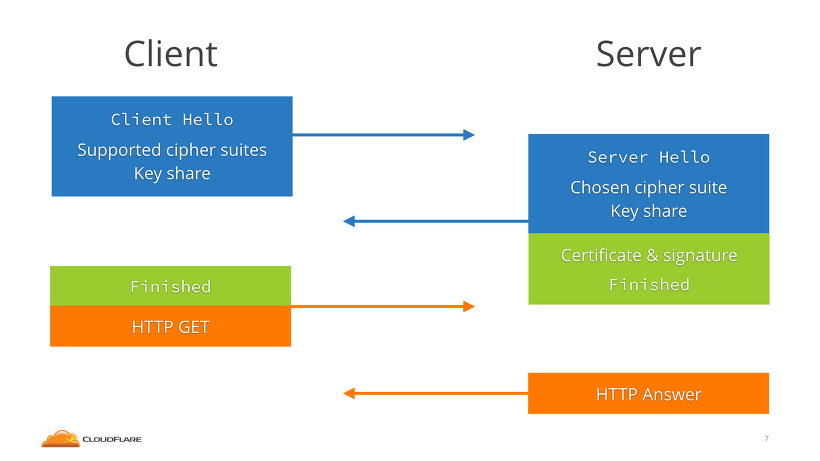
그럼 이미 키가 교환되었으므로 바로 송수신을 시작하면 됩니다.
여기에서 TLS 1.3 이후 제정되고 있는 SNI 암호화 확장을 사용했을 때 SNI값은 도메인과 연결된 서버와 통신하면서 암호화되어 제시됩니다.
그 서버가 통신내용을 열어서 SNI필드를 보고 브라우저가 접속하려는 서버로 연결을 이어(relay)줍니다.
기존에는 통신에 몰래 끼어든 누구라도 SNI필드를 보고 만질 수 있었지만 이제는 아닌 것입니다.
잠깐, 뭐라구요?

IETF가 TLS 1.3의 최종안(final draft)을 승인한게 3월입니다.
서버에서 TLS 연결용으로 많이 쓰이는 OpenSSL도 현재 TLS 1.3을 지원하고 있습니다.
하지만 문제가 있습니다. 앞서 말했듯 SNI 암호화는 3월 승인 때 TLS 1.3에 포함되지 않았고 현재에도 계속해서 표준 제정이 논의되고 있습니다.
TLS 1.3에서도 SNI 값은 암호화되지 않고 전송되고 있습니다.
그럼 지금은 방법이 없다는건가요?
그렇습니다. 불법 사이트 차단을 위해 SNI 오염을 통한 검열을 정부와 통신사가 하겠다고 했고, 그나마 점점 도입되고 있는 TLS 1.3에도 SNI 암호화가 없는 지금은 이 검열을
피할(우회할) 방법이 없습니다.
VPN을 쓰라고 제가 여기에 적는다면 그건 지난 글에서 보여준 것과 같은 탁월한 무언가는 아니겠죠. 대한민국이 중국처럼 검열대국이 되지 않았으면
좋겠습니다.
인터넷 뱅킹 공인인증서의 공개키와 개인키
개인키와 공개키 모두 본인의 PC에 저장됩니다
파일이 저장된 폴더의 위치는 C:\Program Files\NKPI\ 이고요~
예를들어 yessign에서 발급받은 인증서라면, NKPI\yessign\USER\발급받은자의 이름\
아래 저장됩니다.
저장되는 파일은 signcert.der (인증서 == 공개키+서명), 그리고 signPri.key (개인키) 입니다.
공개키는 인증기관의 서명과 함께 인증서라는 포맷으로 은행 서버측으로 전달되며,
은행 서버측은 이 인증서의 서명이 유효한지 확인한 후, 동봉된 공개키로 정보들을 암호화합니다.
암호화된 데이터는 다시 사용자측에게 전송되며, 사용자는 개인키로 복호화하여 내용을 확인합니다.
Java와 JavaScript 사이의 주요 차이점
Java는 OOP 프로그래밍 언어인 반면, Java Script는 OOP 스크립팅 언어입니다.
Java는 가상 시스템 또는 브라우저에서 실행되는 응용 프로그램을 작성하는 반면,
JavaScript
코드는 브라우저에서만 실행됩니다.
Java 코드는 컴파일이 필요하지만, JavaScript 코드는 모두 텍스트입니다.
Java 코드와 JavaScript 코드 서로
다른
플러그인을 필요로 합니다.
자바스크립트의 정의
자바스크립트는 고수준, 동적, 타입이 없는, 해석형 프로그래밍 언어이다. 자바스크립트는 ECMAScript 언어 명세에서 표준화되어 있다.
고수준 : 프로그래밍
언어가
고수준인 경우, 컴퓨터의 이면에 있는 상세한 것들에 대한 완벽한 지식이 없이도 활용할 수 있는 것으로 간주된다. 메모리 관리나 실행 중인 프로세스 타입에 대한 지식이 필요없으며, C나
어셈블리와
같은 언어에서 사용되는 포인터와 같은 것을 상대할 필요가 없다.
동적 : 동적 언어는 컴파일이 필요한 프로그램과는 대조적으로 개발자로 하여금 신규 코드를 추가하거나
Post
객체와 같은 신규 객체를 생성함으로써 언어의 특정 측면을 확장할 수 있도록 해준다. 이는 자바스크립트의 강력한 특징이다.
타입이 없는(동적 타이핑)(실행 시간에
자료형을 검사한다.) :
만약 어떤 프로그래밍 경험이 있다면,
작성 중인 변수의 타입을 필수적으로 명시해야 한다는 것을 알고 있는 것이다. 이를테면, 변수는 string이나 boolean으로 저장될 것이다. 자바스크립트에서는 이러한 명시가 필요치
않다.
대시 간단히 var 키워드로 변수를 정의하면 된다.
해석형 : 컴파일형 언어인 경우, 사용자에게 배포하려면 작성된 코드를 실행 가능한 바이너리로 변환해야 한다.
윈도우에서는
EXE 파일로 알려져 있다. OS X의 경우, 보통 앱스토어에서 다운로드한 프로그램이나 어플리케이션 디렉토리에 드래그한 프로그램이다. 자바스크립트가 해석형이라는 것은 위와 같은 컴파일러가
없다는 것을 의미한다. 대신에 코드가 PHP처럼 해석된다. 따라서 작성한 코드와 컴퓨터 사이에서 해석해주는 해석기라고 불리는 일종의 매개체가 존재한다.
표준화된 :
자바스크립트는
공식적으로 명시된 ECMAScript로 표준화되어 있다. 이 말은 곧 이 표준을 충족시키는 모든 브라우저는 동일한 기능을 제공한다는 것을 의미한다. 표준화되어 있지 않는 기능이라면,
크롬에서
제공하는 기능이지만 엣지(Edge)에서는 제공하지 않는다.
프로토 타입 기반 객체 생성을 지원하는 동적 스크립트 언어이다.
동적 프로그래밍 언어
동적 프로그래밍 언어(dynamic programming language, 동적 언어)는 다른 언어에서 컴파일 과정 중 수행하는 특정 일들을 실행 도중(런타임)에 수행하는 고급 언어를 의미하는 용어다. 동적 언어가 런타임에 수행하는 일은 코드 추가, 타입 시스템 변경 등이 있다.
Reflect API
기존에는 어떤 메소드는 Object 객체를 통해서 접근하고, 어떤 메소드는 만들어진 객체를 통해서 접근했습니다.
Reflect API는 그것들을 Reflect 객체로부터 접근하도록 하나로 통일했다고 보면 됩니다.
메소드가 헷갈릴 경우에는 그냥 Reflect API를 사용하면 됩니다.
가로챈 작업에서 사용할 메서드를 제공합니다.
Reflect 개체는 new 연산자로 인스턴스화할 수 없습니다.
Reflect 메서드는 코드에서 기본 동작을 구현하지 않고 기본 동작으로 위임할 수 있게 하므로 프록시와 함께 사용되는 경우가많습니다.
Reflect는 각 프록시 트랩과 동일한 이름을 가진 정적 메서드를 제공합니다.
프록시와 리플렉션은 무엇인가?
new Proxy()를 호출하여 다른 객체(대상(Target)이라고 함) 대신 사용할 프록시를 생성할 수 있습니다.
프록시는 대상을 가상화하여 프록시와 대상이 사용하는 기능을 동일한 객체로 표시되도록합니다.
프록시를 사용하면 JavaScript 엔진의 내부에 있는 대상에서 하위 수준의 객체 작업을 가로 챌 수 있습니다.
이러한 하위 수준의 작업은 특정 작업에 응답하는 기능인 Trap을 사용하여 가로 채어집니다.
Reflect 객체로 표현된 리플렉션 API는 프록시가 오버라이드 할 수있는 것과 동일한 로우 레벨 연산에 대한 기본 동작을 제공하는 메서드 컬렉션입니다.
모든 프록시 Trap에 대해 Reflect 메서드가 있습니다. 이러한 메서드는 동일한 이름을 가지며 각 프록시 Trap과 동일한 파라미터가 전달됩니다.
표 11-1에는 이 동작이 요약되어 있습니다.
Table 11-1: JavaScript 안의 프록시 Trap
| 프록시 Trap | 동작을 재정의 | 기본 동작 |
|---|---|---|
| get | 프로퍼티 값을 읽음 | Reflect.get() |
| set | 프로퍼티 값을 기록 | Reflect.set() |
| has | in 연산자 | Reflect.has() |
| deleteProperty | delete 연산자 | Reflect.deleteProperty() |
| getPrototypeOf | Object.getPrototypeOf() | Reflect.getPrototypeOf() |
| setPrototypeOf | Object.setPrototypeOf() | Reflect.setPrototypeOf() |
| isExtensible | Object.isExtensible() | Reflect.isExtensible() |
| preventExtensions | Object.preventExtensions() | Reflect.preventExtensions() |
| getOwnPropertyDescriptor | Object.getOwnPropertyDescriptor() | Reflect.getOwnPropertyDescriptor() |
| defineProperty | Object.defineProperty() | Reflect.defineProperty |
| ownKeys | Object.keys, Object.getOwnPropertyNames(), Object.getOwnPropertySymbols() | Reflect.ownKeys() |
| apply | 함수 호출 | Reflect.apply() |
| construct | new를 이용한 함수 호출 | Reflect.construct() |
그래도 Built-in 동작을 사용해야하는 경우 해당하는 리플렉션 API 메서드를 사용할 수 있습니다.
프록시 생성과 리플렉션 API 간의 관계는 프록시 생성을 시작할 때 명확 해집니다.
합성(compositing)
합성(compositing)은 화면에 표시하기 위해 페이지에서 페인트된 부분을 합치는 과정입니다.
하드웨어 가속(GPU 가속)
GraphicsLayer 단위로 렌더링된 이미지를 GPU를 이용해 한 장의 이미지로 합성(composition)해서 화면에 출력하는 기술이다.
랜더링 엔진
크롬은 각 탭마다 별도의 랜더링 엔진 인스턴스를 유지함, 각 탭은 독립된 프로세스로 처리(그래서 탭이 늘어날수록 시스템 성능 저하가....)
서브루틴 과 코루틴
서브루틴(일반함수)
서브루틴은 반복되는 특정 기능을 모아 별도로 묶어 놓아 이름을 붙여 놓은 것으로 메인루틴을 보조하는 역할을 합니다.
보통 언어에서는 함수나 메소드 등으로 불리며 사용됩니다.
어떤 특정 기능을 모아놓고 이름을 붙였다는 것으로 매크로와 비슷하지만 매크로의 경우 컴파일시에(C언어에서와 같이)
매크로를 호출하는 부분을 모두 매크로 본문으로 대체해 버리므로 메모리 사용이 비효율적입니다.
반면에 서브루틴은 별도의 메모리에 해당 기능을 모아 놓고 있어, 서브루틴이 호출될 때마다 저장된 메모리로 이동했다가 return을 통해 원래 호출자의 위치로 돌아오게 됩니다.
호출할 때마다 매번 같은 위치로 이동하기 때문에 여러번 사용될 수 있으므로 매크로에 비해서 훨씬 효율적이라 할 수 있겠지요.
코루틴(제너레이터 함수)
코루틴도 서브루틴처럼 기능들을 별도의 공간에 모아 놓고 있다는 점에서는 동일합니다.
차이점이라 할 수 있는 것은, 서브루틴의 경우에는 메인루틴에서 특정 서브루틴의 공간으로 이동한 후에 리턴에 의해 호출자로 돌아와
다시 프로세스를 진행하는데 반해 코루틴의 경우에는 루틴을 진행하는 중간에 멈추어서 특정 위치로 돌아갔다가 다시 원래 위치로 돌아와 나머지 루틴을 수행할 수 있습니다.
또 한가지 차이점은 서브루틴은 진입점과 반환점이 단 하나밖에 없어 메인루틴에 종속적이지만,
코루틴은 진입지점이 여러개이기 때문에 메인루틴에 종속적이지 않아 대등하게 데이터를 주고 받을 수 있다는 특징이 있습니다.
코루틴은 주로 동시성을 필요로 하는 UNITY 등의 게임프로그래밍에서 많이 사용하는 개념이라고 합니다.
파싱(해석)
파싱하다 = 문법적 해부, 컴파일하다 = 기계어 번역

바이트코드, JIT 컴파일, 자바스크립트 엔진 파이프라인
자바스크립트 엔진 파이프라인
자바스크립트 엔진들이 소스 코드를 기계어로 만들기까지 공통적으로 수행하는 과정을 살펴봅시다.
먼저, 자신이 작성한 자바스크립트 소스 코드에서부터 시작합니다.
자바스크립트 엔진은 소스 코드를 파싱해서 Abstract Syntax Tree(AST) 로 만듭니다.
그리고 AST를 바탕으로, 인터프리터는 바이트 코드를 생성합니다.
여기까지가 자바스크립트로 작성된 코드를 실제로 엔진이 실행하는 부분입니다.
코드를 더 빠르게 실행하기 위해, 바이트코드는 프로파일링 된 데이터와 함께 최적화 컴파일러(optimizing compiler)로 보내집니다.
이곳에서는 프로파일링 데이터를 기반으로 매우 최적화 된 기계어를 생성합니다.
만약 정확하지 않은 결과가 나왔다면 다시 deoptimizes하여 바이트 코드로 되돌립니다.

바이트코드(Bytecode, portable code, p-code)는 특정 하드웨어가 아닌 가상 컴퓨터에서 돌아가는 실행 프로그램을 위한 이진 표현법이다.
하드웨어가 아닌 소프트웨어에 의해 처리되기 때문에, 보통 기계어보다 더 추상적이다.
JIT 컴파일(just-in-time compilation) 또는 동적 번역(dynamic translation)은 프로그램을 실제 실행하는 시점에 기계어로 번역하는 컴파일 기법이다. 이
기법은 프로그램의 실행 속도를 빠르게 하기 위해 사용된다
인터프리터(interpreter)
: 최적화되지 않은 바이트코드(bytecode)를 빠르게 생성합니다.
최적화 컴파일러(optimizing compiler)
: 매우 최적화된 기계어 코드(macine code)를 약간 시간을 들여서 생성합니다.
이 과정에서 바이트코드는 중간 언어(IR, intermediate representation)입니다.
만약 interpreter 모드라면 바이트코드를 하나씩 읽어서 실행하고, JIT 모드라면 바이트 코드를 기반으로 컴파일하여 수행합니다.
V8에서 처리하는 방법
V8의 세부 파트는 이름 그대로 8기통 자동차 엔진이 떠오르는 네이밍을 하고 있습니다.
과정은 위의 공통 파이프라인과 거의 흡사합니다. 여기서 인터프리터는 Ignition이라고 부르며, 코드를 점화하여 바이트 코드를 생성 및 실행합니다.
바이트코드가 실행될 때 인터프리터는 프로파일링 데이터를 수집하여 나중에 실행 속도를 빠르게 할때 사용합니다.
가령, 특정 함수를 자주 사용한다고 해봅시다. 그래서 이 함수가 뜨거워지게 되면, 바이트코드와 프로파일링 데이터를 TurboFan이라고 부르는 최적화 컴파일러로 보내서
식혀줍니다.
그리고 이곳에서 프로파일링 된 데이터를 기반으로 매우 최적화된 기계어 코드를 만들어냅니다.
뜨거워진다(getting hot)의 의미?
자주 반복돼서 수행된다는 뜻입니다.
최근의 JS 엔진들은 일괄적으로 최적화를 적용하는 JITC가 아닌 Adaptive Compilation 방식을 택하고 있습니다.
이는 반복 수행되는 정도에 따라 서로 다른 최적화를 적용하는 것입니다. 처음에 모든 코드는 인터프리터에 의해 바이트 코드로 변환되지만, 자주 반복되는 부분이 발견되면 여기에 대해서만
JITC를 적용하는 식입니다.
SpiderMonkey에서 처리하는 방법
SpiderMonkey에서는 최적화 컴파일러가 두 개입니다.
인터프리터가 코드를 Baseline컴파일러로 최적화하면, 이 결과로 약간 최적화 된 코드가 생성됩니다.
그리고 이는 코드를 실행하는 동안에 수집된 프로파일링 데이터와 합쳐져서 IonMonkey라는 최적화 컴파일러로 보내져서 고도로 최적화 된 코드를 만듭니다.
만약에 추측성(speculative) 최적화가 실패하게 되면, IonMonkey는 이를 Baseline 코드로 되돌립니다.
Chakra Core에서 처리하는 방법
여기서도 두 개의 최적화 컴파일러로 최적화를 진행합니다.
인터프리터가 SimpleJIT로 보내 약간 최적화 된 코드를 만들고, FullJIT에서는 이를 프로파일링 데이터와 함께 더욱 고도로 최적화 된 코드를 생성합니다.
JavaScript Core에서 처리하는 방법
JSC는 최대 세 번까지 최적화를 합니다! LLInt(Low-Level Interpreter) 라는 인터프리터와 휴리스틱하게 동작하는 Baseline 컴파일러를 거치고 이후에
DFG(Data Flow Graph)과 FTL(Faster Than Light)라는 최적화 컴파일러를 사용합니다.
처리 방법의 차이점과 공통점
왜 어떤 엔진은 더 많은 최적화 컴파일러를 갖고 있을까요?
바로 트레이드 오프(trade-offs) 때문입니다. 인터프리터는 바이트코드를 빠르게 생성할 수 있지만 효율적인 코드가 아닙니다.
반대로 최적화 컴파일러는 시간이 조금 더 걸리지만 훨씬 효율적인 기계 코드를 생성합니다.
따라서, 어떤 엔진은 여러 개의 최적화 컴파일러를 선택함으로써 복잡해지는 비용을 감수하고 이러한 인터프리터와 컴파일러 사이의 균형을 필요에 따라 세부적으로 제어할 수 있도록 한
것입니다.
결국, 자바스크립트 엔진마다 구체적인 최적화 과정은 차이가 있으나, 파서와 인터프리터/컴파일러가 포함된 동일한 아키텍쳐로 구성된 것을 알 수 있습니다.
바이트 코드(bytecode)
- 고급 언어로 작성된 소스 코드를 가상머신이 이해할 수 있는 중간 코드로 컴파일한 것
가상머신은 이 바이트코드를 각각의 하드웨어 아키텍처에 맞는 기계어로 다시 컴파일한다.
어셈블리어에 가까운 형태를 띄고 있으며 어떨 때는 가상머신용 오브젝트 코드까지 바이트코드라고 부르기도 한다.
컴파일러에 의해 변환된 명령어 코드가 1바이트라서 바이트 코드라고 부른다고 합니다.
어떤 플렛폼에도 종속되지 않고 실행될 수 있는 가상 머신용 코드라고 보시면 됩니다.
바이트 코드는 다시 실시간 번역기 또는 저스트 인 타임(just-in-time, JIT) 컴파일러에 의해 바이너리 코드로 변환됩니다.
바이트 코드와 바이너리 코드는 무엇이 다른가?
바이너리 코드란?
바이너리 코드는 컴퓨터가 인식할 수 있는 0과 1로 구성된 이진코드를 의미한다.
기계어란?
1. 기계어는 0과 1로 이루어진 바이너리 코드이다.
2. 기계어가 이진코드로 이루어졌을 뿐이지 모든 이진코드가 기계어인 것은 아니다. ( 바이너리 코드 != 기계어)
3. 기계어는 특정한 언어가 아니다.
단지 CPU제조사에서 CPU를 만들 때 해당 CPU에서 사용하는 명령어 집합을 공개하는데, 이것을 '기계어'라고 부를 뿐이다.
때문에 CPU가 변경되면 기계어가 달라진다. 같은 동작을 하는 명령어지만 완전히 다른 0과 1의 나열이 될 수 있다는 말이다.
4. 아주 기본적인 연산자들은 서로 호환이 되는 편이다.
5. 같은 회사의 CPU라도 버전 별로 다른 명령을 포함할 수 있으며 다른 회사라도 같은 명령어 집합을 공유할 수도 있다.
바이트 코드란?
CPU가 이해할 수 있는 언어가 바이너리 코드라면 바이트 코드는 가상 머신이 이해할 수 언어이다.
CPU가 아닌 가상 머신에서 이해할 수 있는 코드를 위한 이진 표현법이다. 즉, 가상 머신이 이해할 수 있는0과 1로 구성된 이진코드를 의미.
어떤 플렛폼에도 종속되지 않고 실행될 수 있는 가상 머신용 기계어 코드이다.
고급언어로 작성된 소스코드를 가상 머신이 이해할 수 있는 중간 코드로 컴파일한 것을 말한다.
바이트 코드는 다시 실시간 번역기 또는 저스트 인 타임(just-in-time, JIT) 컴파일러에 의해 바이너리 코드로 변환된다.
CPU가 텍스트를 이해하지 못하듯이 가상 머신 또한 텍스트를 이해하지 못한다.
Java의 가상 머신을 JVM이라고 하며 JVM을 위한 바이트 코드를 자바 바이트 코드라고 한다.
어셈블리어와 비슷한 형태를 띈다. => ?? 어셈블리어랑 비슷한건지 바이너리(이진법)인건지 모르겠네
‘자바스크립트 엔진’은 주로 가상머신이라 불린다.
‘가상 머신’은 특정 컴퓨터 시스템을 소프트웨어 기반으로 에뮬레이션 한 것을 뜻한다.
많은 종류의 가상 머신이 있으며, 얼마나 정확하게 실제의 물리적 머신을 에뮬레이션 할 수 있느냐에 따라 분류된다.
예를 들어, ‘시스템 가상 머신’은 운영체제가 실행될 수 있는 플랫폼의 완전한 에뮬레이션을 제공한다.
맥 사용자들은 Parallels를 잘 알텐데, 이는 당신의 맥에서 윈도우를 구동할 수 있게 해주는 시스템 가상 머신이다.
반면에 ‘프로세스 가상 머신’은 완전한 기능을 제공하지는 않지만, 하나의 프로그램이나 프로세스를 구동할 수 있다.
Wine은 프로세스 가상 머신으로서 리눅스 머신에서 윈도우 어플리케이션을 실행할 수 있게 해주지만, 전체 윈도우 운영체제를 제공하지는 않는다.
자바스크립트 엔진은 자바스크립트 코드를 해석하고 실행하기 위해 만들어진 일종의 프로세스 가상 머신이다.
* 플렛폼
개발환경 실행환경 등 어떠한 목적을 수행할 수 있는 환경을 말한다.
ex) 프로그램이 실행되는 환경인 운영체제의 종류(window, mac), 개발이 수행되는 환경의 종류(안드로이드 스튜디오, 비쥬얼 스튜디오)
가상머신
물리적으로 존재하는 컴퓨터가 아닌, 다른 컴퓨터가 만들어내는 가상의 컴퓨터.
즉 컴퓨터 안에 있는 컴퓨터.
무언가를 에뮬레이션(어떤 시스템이 다른 시스템을 흉내내는 것, 하드웨어든 소프트웨어든 상관없다. 대표적으로 JVM은 기계어를 에뮬레이션하는 가상 머신이다.)하는 것이라면 어떤 소프트웨어든 가상 머신이다.
가상머신은 크게 프로세스 가상머신과 시스템 가상머신으로 나뉘는데
프로세스 가상머신은 하나의 프로세스만을 위해 생성되고 그 프로세스가 끝나면 없어지며, (일반적으로) 실제로 존재하지 않는 기계를 에뮬레이트하고, 프로그래밍 언어의 하드웨어 추상화를 위해 사용된다.
오라클의 HotSpot(Java, Scala, Groovy, Kotlin, Clojure 등), MS의 .NET과 Mono(C#, F#, VB.NET 등), 에릭슨의 BEAM(Erlang, Elixir, LFE 등), 구글의 Dalvik(JVM 바이트코드 등)이 대표적이다.
예외적인 경우로 윈도의 시스템 콜을 가상화하는 Wine도 들 수 있다.
이후부터 가상머신이라고 하면 시스템 가상머신을 의미한다.
CPU, RAM, 하드디스크 등 컴퓨터의 주요 부품들을 가상으로 만들어서 구동하는 식으로 동작한다.
가상으로 만들기 위해서는 각 부품들의 기능을 소프트웨어적으로 구현할 필요가 있다.
에뮬레이션, 가상화, 반가상화
모든 부품의 모든 기능을 소프트웨어적으로 구현하는 방식을 에뮬레이션이라고 부른다.
이 방식은 정의 상 가장 속도가 떨어지는 방식이나, 범용성은 가장 뛰어나다.
예를 들면, Bochs를 사용하면 ARM 계열의 스마트폰 위에서 x86 가상머신을 만들어 윈도우 등의 x86 운영체제를 설치할 수 있으며, QEMU를 사용하면 x86 플랫폼에서 ARM 계열 가상머신을 만들어서 안드로이드를 설치할 수 있다.
반면, CPU 등 주요 부품의 구현에서 하드웨어의 기능 지원을 받으면 가상화라고 부른다.
이러한 가상화는 속도가 빠르다는 장점이 있으나, 해당 하드웨어 기능에 크게 종속되기 때문에 범용성이 상대적으로 떨어진다.
예를 들면, CPU를 가상화 형식으로 구현하면 실제 컴퓨터의 CPU가 처리할 수 있는 기계어 세트에서 크게 벗어나는 가상 CPU를 지원할 수 없게 된다.
마지막으로, 완전한 에뮬레이션/가상화를 포기하고, 가상머신 내에 설치될 OS에 수정을 가하거나 전용 드라이버를 사용하여 하드웨어에 직접 접근하는 방안을 별도로 마련하는 방법이 있으며, 이는 반가상화라 부른다.
이 방안은 속도가 가장 빠르나, 하드웨어 기능 뿐만이 아니라 운영체제 및 드라이버에도 종속성이 생기기 때문에 범용성은 가장 떨어진다.
CPU를 예시로 들면, 가상머신 내부에서 가상 CPU 모델을 구축하여 가상머신에서 명령어가 수행될 때마다 가상 CPU가 처리할 내용을 모델에 따라 업데이트하는 방식은 에뮬레이션에 해당하고,
가상머신의 명령어를 대부분 실제 CPU에서 직접 실행하나, 일부 특수 케이스에 해당하는 명령어들만 별도 처리를 하는 방식은 가상화에 해당한다.
그리고 문제가 있는 기계어 부분을 미리 다른 명령어로 대체하고, 관련 기능을 사용할 땐 하이퍼바이저와 별도 통신 채널을 활용하는 등의 기법이 반가상화에 해당한다.
퍼포먼스 (속도)
에뮬레이션 < 가상화 < 반가상화
범용성
반가상화 < 가상화 < 에뮬레이션
번역기의 종류
번역기는 하나의 프로그래밍 언어로작성된 프로그램을 그와 동등한 의미를 가진 다른 프로그래밍 언어로 된 프로그램으로 변환하는 프로그램
번역기의 종류
- 어셈블러: 어셈블리어로 작성된소스 프로그램을 그에 대응하는 기계어로 번역된 목적 프로그램으로 변환해주는 번역기
- 컴파일러: 고급 언어로 작성된 소스 프로그램을 그에 대응하는 어셈블리어나 기계어로 번역된 목적프로그램으로 변환 해주는 번역기
- 프리프로세서(전처리기): 소스 프로그램과목적 프로그램이 모두 고급 언어인 번역기
- 인터프리터: 고급 언어를 입력으로 받아 번역과 동시에 실행한후 그 결과를 출력하는 번역기
언어처리 시스템은 일반적인 문제를 해결하는 데 번역기를 시용하여 소스 프로그램부터 실행 결과까지 도출하는 과정을 말함
HTML 문서 파싱
서버로부터 받은 문서를 브라우저가 이해하고 사용할 수 있는 구조(DOM트리)로 문서를 변환하여 반환하는 과정
옵저버와 이벤트의 차이
일반적으로 전자(일반 이벤트)는 이벤트가 발생할 때마다 동기적으로 반응하여 메인 스레드의 응답성에 영향을 주지만,
후자(옵저버)는 성능에 많은 영향을 주지 않으면서 비동기적으로
반응한다는
것이다.
적어도 현재 제시된 옵저버에 대한 사실은 모두 비동기적으로 동작 하며, 이러한 사실은 앞으로도 변함이 없으리라 생각한다.
초기화 or 대입
원래 순수한 의미의 , 언어적 정의로의 초기화는 항상 선언과 같이 값을 지정해줘야 초기화입니다.
var a = 7;(초기화)
var b;
b =8;(대입)
변수 호이스팅(Variable Hoisting)
호이스트란, 변수의 정의가 그 범위에 따라 선언과 할당으로 분리되는 것을 의미한다.
즉, 변수가 함수내에서 정의되었을 경우 선언이 함수의 최상위로, 함수 바깥에서 정의되었을 경우는 전역 컨텍스트의 최상위로 변경된다.
변수의 선언이 초기화나 할당시에 발생하는것이 아니라, 최상위로 호이스트 된다.
호이스트 되었을때, 함수 선언은 변수선언을 덮어쓴다.
하지만, 변수에 값이 할당될 경우에는 반대로 변수가 함수선언을 덮어쓴다.
TDZ(temporal dead zone:임시적 사각지대)이기 때문에 let은 값을 할당하기 전에 변수가 선언 되어 있어야 한다.
TDZ(temporal dead zone:임시적 사각지대)
변수는 그들의 어휘적 환경에 포함될 때 생성되지만, 어휘적 바인딩(변수가 실제 있는 위치에 도달할 때)이 실행되기 전까지는 액세스할 수 없다.
var/let/const선언이 호이스팅은 됨
var는 선언후 바인딩 시킴 undefined 할당-엑세스 가능
let/const는 초기화 구문이 없으면 어휘적 바인딩을 실행할 때, 변수에 undefined가 할당된다.
즉,let/const는 선언후 바인딩 안시킴 undefined 할당안함-엑세스 불가능
const 키워드는 반드시 선언과 동시에 값을 할당해야 한다.
즉, 어휘적 바인딩이 실행되기 전까지 액세스할 수 없는 현상을 TDZ라고 한다.
어휘적 바인딩
var a = 11; 코드 구문
let/const선언 변수는 호이스팅되지 않는 것이 아니다.
스코프에 진입할 때 변수가 만들어지고 TDZ(Temporal Dead Zone)가 생성되지만, 코드 실행이 변수가 실제 있는 위치에 도달할 때까지 액세스할 수 없는 것이다.
스로틀(throttle)과 디바운스(debounce)
throttle(이벤트를 일정한 주기마다 발생하도록 하는 기술)-실행 횟수에 제한
밀리세컨드마다 실행의 흐름을 일정하게 유지한다.
스로틀 또는 스로틀링(throttling)은 로직 실행 주기를 만드는 함수라고 이해하면 됩니다.
밀리세컨드 단위로 시간을 설정하면 스로틀에 넘긴 콜백함수는 설정한 시간 동안 최대 한 번만 호출됩니다.
마지막 함수가 호출된 후 일정 시간이 지나기 전에 다시 호출되지않도록 하는 것
debounce(이벤트를 그룹화하여 특정시간이 지난 후 하나의 이벤트만 발생하도록 하는 기술)
갑작스러운 이벤트(키 입력 등)를 하나로 그룹화합니다.
디바운스는 과다한 이벤트 실행을 방지하기 위해 몇 가지 함수를 한 개의 그룹으로 묶고 특정 시간이 지난 후에야 호출될 수 있도록 구조화하는 것입니다.
연이어 호출되는 함수들 중 마지막 함수(또는 제일 처음)만 호출하도록 하는 것
디바운싱과 스로틀의 가장 큰 차이점은 스로틀은 적어도 X 밀리 초마다 정기적으로 기능 실행을 보장한다는 것입니다.
Debounce 는 아무리 많은 이벤트가 발생해도 모두 무시하고 특정 시간사이에 어떤 이벤트도 발생하지 않았을 때 딱 한번만 마지막 이벤트를 발생시키는 기법입니다.
따라서 5ms 가 지나기전에 계속 이벤트가 발생할 경우 콜백에 반응하는 이벤트는 발생하지 않고 계속 무시됩니다.
script 태그의 async와 defer 속성
async 혹은 defer 된 스크립트는 문서 parsing 작업의 중단 없이 동시에 내려받게 되며, 선택적으로 onload handler를 지정해서 일반적인 초기화 작업도 진행할 수
있다.
둘의 차이를 결정짓는 중요한 것은 바로 스크립트가 실행되는 시점이 서로 다르다는 것인데,
async script는 window의 load event 전
내려받는 즉시 바로 실행되는
데 반해
defer script는 문서의 parsing 작업이 끝난 후 DOMContentLoaded event 전에 문서에 삽입된 순서에 따라 실행된다.
참조
참조는 객체의 실제 위치를 가리키는 포인터이다.
기본 타입 변수는 스택영역에 변수 선언과 동시에 초기화를 하게 되면 변수와 변수값이 스택영역에 저장되고
참조 타입
변수는
스택영역에 변수를 선언한 것이 생성,저장이 되지만 변수에 저장된 참조타입인 객체는 스택 영역에 저장되는 것이 아니라 heap 영역에 생성이 되고 heap 영역에 생성된 번지가 참조 변수의
값으로 들어가게 됩니다.
스택(Stack) 영역
- 함수 호출, 변수 생성시 생성되는 지역 변수와 매개 변수가 저장되는 영역
- 함수 호출이 완료되면 사라진다.
힙(Heap) 영역
- 필요에 의해 동적으로 메모리를 할당할 때 사용
- 객체/배열에 저장되는 영역
- 사용되지 않는 객체는 GC(가비지 컬렉터)가 자동으로 제거해 주는 영역
자바스크립트 타입
약한 타입 체계의 언어에서는 런타임이 돼서야 객체의 멤버가 존재하는지 확인할 수 있다.
이에 비해 강력한 타입 언어에서는 변수의 타입이 컴파일할 때 결정됩니다.
자바스크립트에서
변수값을 검색해 나가는 과정이 실행 단계에 수행된다는 것은 var 변수가 어떤 타입의 데이터라도 받아들일 수 있다는 이론의 근거로 볼 수 있습니다.
이처럼 런타임(프로그램이
실행)이
되어서야 타입을 확인한다는 것이 바로 약한 타입 체계의 특징이다.
자바스크립트 객체의 멤버(속성, 메서드)는 모두 var 변수이다.
데이터 청크
데이터 덩어리
시퀀스
수열,수 또는 다른 대상의 순서있는 나열,나열 순서를 생각해야 하고 중복이 허용된다는 점에서 집합과 구분된다.
양의 홀수의 크기 순 나열 1, 3, 5, 7, ...은 수열의
예이다.
수열은 자연수의 집합에 정의된 함수라고 할 수 있다.
query ; 쿼리 또는 질의
쿼리란 데이터베이스에 정보를 요청하는 것이다.
쿼리는 웹 서버에 특정한 정보를 보여달라는 웹 클라이언트 요청(주로 문자열을 기반으로 한 요청이다)에 의한 처리이다.
쿼리는
대개 데이터베이스로부터 특정한 주제어나 어귀를 찾기 위해 사용된다.
패킷
패킷은 정보 기술에서 패킷 방식의 컴퓨터 네트워크가 전달하는 데이터의 형식화된 블록이다.
패킷을 지원하지 않는 컴퓨터 통신 연결은 단순히 바이트, 문자열, 비트를 독립적으로 연속하여 데이터를 전송한다.
데이터가 패킷으로 형식이 바뀔 때, 네트워크는 장문 메시지를 더 효과적이고 신뢰성 있게 보낼 수 있다. 패킷은 데이터의 한 단위라고 할 수 있다.
최대 MTU 사이즈
MTU는 Maximum Transmission Unit 의 약자로서 하나의 프레임이나 패킷이 한번에 전송가능한 데이터의 크기이다. 프로토콜에 따라 최대 크기는 달라진다.
일반적으로 이더넷을 사용하기 때문에 최대 MTU 사이즈는 1500 바이트 이다.
이것은 TCP, IP 나 어플리케이션에서 가능한 데이터를 의미하며 이더넷의 헤더와 트레일러는 제외한 것이다.
이 1500바이트에서 보통 20바이트씩 각 IP,TCP 헤더를 제외하면 1460바이트이다.
프레임 버퍼(frame buffer)
래스터 주사 방식에서 화면에 나타날 영상 정보를 일시적으로 저장하는 기억 장치.
그래픽 프로세서가 중앙 처리 장치(CPU)로부터 도형을 표현하는 디스플레이 리스트를 받아
변환하여
프레임 버퍼에 기록한다.
프레임 버퍼의 각 기억 단위는 화면의 하나의 화소에 하나씩 대응하여 화면에 그대로 반영된다.
즉 화면의 각 점의 온(on)/오프(off)나
색깔을
비트 맵으로 기억하고 있으며 이 기억 장치에 어떤 내용을 써넣으면 그것이 화면에 표시된다.
이는 대개 시스템의 주기억 장치와는 별도로 분리되어 있으며, 특별한 기술을 사용하여
속도를
빠르게 하기도 한다.
버퍼(buffer)
버퍼(buffer, 문화어: 완충기억기)는 데이터를 한 곳에서 다른 한 곳으로 전송하는 동안 일시적으로 그 데이터를 보관하는 메모리의 영역이다.
버퍼링(buffering)이란 버퍼를 활용하는 방식 또는 버퍼를 채우는 동작을 말한다. 다른 말로 '큐(Queue)'라고도 표현한다.
버퍼는 컴퓨터 안의 프로세스 사이에서 데이터를 이동시킬 때 사용된다.
보통 데이터는 키보드와 같은 입력 장치로부터 받거나 프린터와 같은 출력 장치로 내보낼 때 버퍼 안에 저장된다.
이는 전자 통신의 버퍼와 비유할 수 있다. 버퍼는 하드웨어나 소프트웨어에 추가될 수 있지만 버퍼는 상당수가 소프트웨어에 추가된다.
버퍼는 보통 속도가 계속 바뀔 수 있으므로 데이터 수신, 처리 속도에 차이가 있다. (예: 프린터 스풀러)
버퍼는 네트워크 상에서 자료를 주고 받을 때나 스피커에 소리를 재생할 때, 또는 디스크 드라이브와 같은 하드웨어의 입출력을 결합하는 데에 자주 이용된다.
버퍼는 또한 순서대로 데이터를 출력하는 FIFO 방식에서 보통 사용된다.
버퍼란 임시 저장 공간을 의미 합니다.
임시 저장 공간이라고 해서 쌩뚱맞게 보일 수 있지만 정확히 말하면 A와 B가 서로 입출력을 수행하는데에 있어서 속도차이를 극복하기 위해 사용하는 임시 저장 공간을 의미 합니다.
간단하게 얘기 하자면 CPU는 1초에 100개의 데이터를 처리할 수 있지만 정작 처리할 데이터를 가지고 있는 보조 기억 장치는 데이터를 1초에 세 개밖에 보내주지 않는 것입니다.
CPU입장에서는 아무리 일을 열심히 하고 싶어도 데이터를 보내주지 않기 때문에 능력에 비해 97 개 만큼 효율성을 잃게 됩니다.
이 때 버퍼를 사용하게 됩니다. 버퍼는 CPU 내부에 있는 캐시메모리 보다는 느리지만 보조 기억 장치보다 훨씬 빠른 주기억 장치(RAM)를 이용합니다.
보조기억장치는 주기억장치의 버퍼로 마련해둔 공간에 데이터를 열심히 보내 쌓아 둡니다.
CPU는 처리가 빠르므로 밀려있는 다른일을 처리한 후 시간이 남을때 가끔 버퍼를 확인하여 데이터가 모두 쌓였는지 확인하고 모두 쌓였다면 가져다 한꺼번에 처리합니다.
그 덕분에 CPU는 100퍼센트의 효율로 연산을 할 수 있습니다.
이렇게 버퍼라는 것은 속도차가 큰 두 대상이 입출력을 수행할 때 효율성을 위해 사용하는 임시 저장공간이라고 할 수 있겠습니다.
인터페이스(interface)
인터페이스(interface)는 컴퓨팅에서 컴퓨터 시스템끼리 정보를 교환하는 공유 경계이다.
이러한 교환은 소프트웨어, 컴퓨터 하드웨어, 주변기기, 사람 간에 이루어질 수
있으며,
서로 복합적으로 이루어질 수도 있다.
터치스크린과 같은 일부 컴퓨터 하드웨어 장치들은 인터페이스를 통해 데이터를 송수신할 수 있으며 마우스나 마이크로폰과 같은 장치들은 오직
시스템에
데이터를 전송만 하는 인터페이스를 제공한다.
portrait and landscape
portrait:세로모드
landscape:가로모드
css 히든
.ui-helper-hidden-accessible {position:absolute;width:1px;height:1px;margin:-1px;overflow:hidden;padding:0;border:0;clip:rect(0 0 0 0); }
디자인 패턴
어떤 자주 발생하는 문제에 대해서 체계적인 해결방안을 문서화 또는 정형화 해놓은 것을 디자인 패턴이라고 합니다.
소프트웨어에서 디자인 패턴을 사용하면, 코드의 효율성과 재사용성을 높일 수 있어 좋습니다.
MVC 패턴
소프트웨어 개발에 있어 많이 사용하는 디자인 패턴 중 하나가 MVC 패턴인데요.
사용자 인터페이스로부터 개발하는 부분을 완전히 분리해놓은 형태입니다. 또한 개발, 테스트, 유지를 독립적으로 수행 할 수 있게 해주기도 합니다.
MVC 중 모델(Model)이란?
MVC 패턴 중 M에 해당하는 모델(Model)은 애플리케이션의 데이터를 관리합니다.
주로 뷰(View)로 부터 정보를 전달 받고, 컨트롤러(Controller)로 부터 상태 변화에 대한 지시를 받습니다.
MVC 중 뷰(View)란?
MVC 패턴 중 V에 해당하는 뷰(View)는 모델의 데이터를 사용자 인터페이스 같은 적절한 형태로 표현합니다.
하나의 모델에 여러개의 뷰가 존재할 수 있습니다.
MVC 중 컨트롤러(Controller)란?
MVC 패턴 중 C에 해당하는 컨트롤러(Controller)는 사용자의 입력값을 받고 이를 바탕으로 모델 객체에 지시를 내립니다.
MVC, MVP, MVVM 차이점
Model - 일종의 데이터(Data)라고 생각하면 된다. 데이터 이외에 데이터를 조작하는 간단한 로직이 추가 되기도 한다.
View - 디스플레이. 사용자에게 제공되어지는 UI Layer를 뜻한다. 보통 Application에서는 View는 CSS/HTML/XML/XAML 등으로 렌더링 된 화면을
가르킨다.
MVC, MVP, MVVM 패턴과 같은 프레임워크가 나오게 된 궁극적인 이유는?
한마디로 각 계층을 분리시킴으로써 코드의 재활용성을 높이고 불필요한 중복을 막기위한 이유이다.
Model과 VIew의 의존성을 어떻게 제어하느냐에 따라 각 패턴이 분류 된다.
1.MVC (Model - View - Controller)
모든 입력은 Controller 에서 처리된다.
입력이 Controller로 들어오면 Controller는 입력에 해당하는 Model을 조작(업데이트)하고, Model을 나타내어줄 View를 선택한다.
Controller는 View를 선택할수 있기 때문에 하나의 Controller가 여러개의 View를 선택하여 Model을 나타내어 줄 수 있다.
이때 Controller는 View를 선택만하고 업데이트를 시켜주지 않기때문에 View는 Model을 이용하여 업데이트 하게된다.
Model을 직접 사용하거나 Model에서 View에게 Notify해주는 방법, View에서 Polling을 통해 Model의 변화를 알아채는 방법등이있다.
이와 같이, View는 Model을 이용하기 때문에 서로간의 의존성을 완벽히 피할 수 없다는 단점이 있고, 좋은 MVC 패턴이라 함은 View와 Model간의 의존성을 최대한 낮게한
패턴이 좋은 패턴이라 할 수 있다.
2. MVP(Model - View - Presenter)
MVC 패턴과 다르게 입력이 View에서 처리된다.
Presenter는 View의 인스턴스를 갖고 있으며 View와 1대1 관계이고, 그에 해당하는 Model의 인스턴스 또한 갖고 있기때문에 View와 Model 사이에서 다리와 같은
역할을 한다.
View에서 이벤트가 발생하면 Presenter에게 전달해주고 Presenter는 해당 이벤트에 따른 Model을 조작하고 그 결과를 바인딩을 통해 View에게 통보를 하여 View를
업데이트 시켜준다.
MVC 패턴과는 다르게 Presenter를 통해 Model과 View를 완벽히 분리해 주기 때문에 View는 Model을 따로 알고 있지 않아도 된다는 장점이 있다.
단점으로는 View와 1대1 관계이기 때문에 View와의 의존성이 매우 강하다.
3. MVVM(Model - View - ViewModel)
ViewModel 뷰모델 말그대로 View를 나타내주기 위한 Model이라고 생각하면 된다.
View보다는 Model과 유사하게 디자인 되며, View의 바인딩 될 때 가장 강력하다.
MVP와 같이 View에서 입력이 처리된다.
MVVM 패턴의 가장 큰 장점이라 함은 Command패턴와 Data Binding으로 MVP 패턴과 달리 View와의 의존성을 완벽히 분리 할 수 있다는 장점이 있다.
Command를 통하여 Behavior를 View의 특정한 ViewAction(Event)와 연결할 수 있으며, ViewModel의 속성과 특정 View의 속성을 Binding 시켜
줌으로써 ViewModel 속성이 변경 될때마다 View를 업데이트 시켜줄 수 있다.

비즈니스 로직
하나의 프로젝트나 프로그램중 업무와 관련된 처리를 하는 일부분을 뜻하는데,
프로젝트를 하면서 데이터베이스에서 어떠한 자료를 가져와서 웹에서 출력을 할때 데이터베이스 연결, 통신, 자료가공, 페이지 구성등 여러가지 작업을 하지만
그 중에서 사용자가 원하는 자료의 가공 부분을 의미한다.
예를 들어 자료를 저장할때는 부가세가 포함되지않고 자료가 저장이 되어있는데.
최종적으로 사용자에게는 부가세가 포함된 자료를 디스플레이해야 하는 업무를 처리해야 한다고 할 때 이를 처리하는 과정을 의미한다고 할 수 있다.
유니코드
유니코드란 전 세계적으로 사용하는 모든 문자 집합을 하나로 모은 것이다.
유니코드 값을 나타내기 위해서는 코드 포인트(code point)를 사용하는데, 보통 U+를 붙여 표시한다.
| 코드 포인트 범위 | 비트 수 | 인코딩(UTF-8) |
| U+0000 ~ U+007F | 7 | 그대로 인코딩 |
| U+0080 ~ U+07FF | 11 | 110xxxxx 10xxxxxx |
| U+0800 ~ U+FFFF | 16 | 1110xxxx 10xxxxxx 10xxxxxx |
| U+10000 ~ U+1FFFFF | 21 | 11110xxx 10xxxxxx 10xxxxxx 10xxxxxx |
즉, U+0080을 비트 값으로 표현하면 000 1000 0000인데, 인코딩 방식에 의해 11000010 10000000으로 변환되어, 0xC2 0x80으로 저장된다.
예를 들어, '한글'을 코드 포인트로 표현하면 U+D55C U+AE00인데, 이를 UTF-8 인코딩하면, 0xED 0x95 0x9C 0xEA 0xB8 0x80이 된다.
아스키(ASCII)코드의 경우, 128개의 코드가 정리되어 있는 코드표가 있다.
EUC-KR/CP949의 경우, 2바이트로 표현할 수 있는 코드표가 있는 것이다.
UTF-8/UTF-16등의 인코딩은 U+로 시작되는 코드표가 존재하고, 이를 유니코드(Unicode)라고 말한다.
UTF같은 인코딩은 같은 유니코드표를 가지고 다르게 표현하는 방법인 것이다.
아스키코드 (ASCII)

1. 컴퓨터의 기본 저장 단위는 바이트(byte)이다.
2. 1바이트(byte)는 8비트(bit)이다.
3. 1byte에는 2의 8승에 해당하는 256개의 고유한 값을 저장할 수 있다.
4. 문자나 기호들의 집합을 컴퓨터에서 저장하거나, 통신 목적으로 사용할 경우에는 부호로 바꾸어야 한다.
이를 '문자 인코딩(encoding)' 또는 '부호화'라고 하며 부호화된 문자를 복원하는 것을 '복호화'라고 한다.
5. 모스부호도 일종의 문자 인코딩이다.
[아스키(ASCII) American Standard Code for Information Interchange]
풀네임에서 알 수 있듯이 1960년대 미국에서 정의한 표준화한 부호체계이다.
여러 가지 이유로 아스키코드는 7비트 즉, 128개의 고유한 값만 사용한다.
왜 아스키 코드는 7비트만 활용할까? 그 이유는 1비트를 통신 에러 검출을 위해 사용하기 때문이다.
통신 에러 검출을 위한 비트를 Parity Bit라고 한다.
0부터 32까지는 인쇄와 전송 제어용으로 사용되는 알 수 없는 용어들이 가득하다.
33부터 126까지는 숫자, 알파벳 소문자, 알파벳 대문자, 특수기호 등이 할당되어있는 것을 알 수 있다.
아무튼 0부터 127까지 128개의 고유값을 저장하고 있다.
이는 '영문' 키보드로 입력할 수 있는 모든 가능성을 담았다.
아스키코드를 이용해 다른 언어를 표현하기에는 7비트로는 부족했다.
그래서 8비트로 확장한 아스키 코드가 나왔다.
사람들은 이 코드를 ANSI 코드라고 부르기 시작했다.
7비트에서 8비트로 확장되었으니 사람들이 활용할 수 있는 문자는 몇 개가 더 늘어났을까?
1비트 늘어났으니 2개 더 늘어났다고 생각하면 안된다.
2의8승 이렇게 되었으니 128개나 더 쓸 수 있게 되었다!
그러나! 비유럽 국가 특히 한국, 중국, 일본과 같은 문자가 많은 국가에서는 여전히 제한적이다.
(※ 우리나라의 경우 KSC5601 표준이라는 고유한 인코딩 방법으로 문자를 표현했다)
그래서 유니코드(Unicode)라는 전 세계 언어의 문자를 정의하기 위한 국제 표준 코드가 등장하게 되었다.
7bit (2의 7승 : 128 가지 문자)
American Standard Code for Information Interchange
컴퓨터의 기본 저장 단위는 바이트(byte)이고, 1byte는 8bit이다.
1byte에는 2의 8승에 해당하는 256개의 고유한 값을 저장할 수 있다.
아스키코드는 7비트로 128개의 고유한 값을 저장한다. (문자 하나당 숫자 하나를 매핑, 1비트는 별도의 목적을 위해서 사용)
로마자 및 특수 기호(한글 포함 안됨)


유니코드 (UNICODE)
2byte (2의 16승 : 65,536가지 문자)
한글은 자음과 모음의 조합 개수만해도 128개를 넘는다.
이와 같이 7bit ASCII 코드에 담을 수 없는 문자를 정의하기 위해서 2byte 국제표준코드 유니코드가 등장하였다.
2byte는 16bit로 2의 16승 약 6만 5천개의 문자를 저장할 수 있다.
유니코드로 ASCII 코드를 포용 가능하다.
UTF-8
유니코드 부호화 방식 (8bit 기반 )
가변 길이 유니코드 인코딩 시스템
특정 문자 집합 안의 문자들을 컴퓨터 시스템 안헤서 사용할 목적으로 일정한 범위 안의 정수 (코드값) 들로 변환하는 방법
ASCII 코드의 언어는 1byte로 나타내며, 한글의 경우 3byte로 나타낸다.
utf-8 탄생 배경
유니코드를 사용하면 영어권 사용자들은 메모리 낭비가 2배가 된다. (영어는 1byte ascii로 충분하기 때문에)
유니코드는 2byte로 규약을 했으나 메모리에 저장하고, 네트워크에 통신 할 때 한번 걸러서 저장을 한다 (부호화 : encoding)
0~127 사이에 존재하는 모든 코드 포인트(ASCII)들을 1byte로 저장
128 이상인 것은 2byte, 3byte로 저장한다. (한글은 3byte)
KSC5601
한글 완성형 표준(한글 2,350자 표현)
한국공업표준 정보처리분야(C)의 5601번 표준안
KSC5636
영문자에 대한 표준
한국공업표준 정보처리분야(C)의 5636번 표준안
기존 ASCII Code에서 역슬래쉬(\)를 원(\) 표시로 대체
EUC
euc는 extend unix code의 약자로 유닉스에서 영어를 제외한 문자를 표시하기 위한 확장 부호를 의미합니다.
그 중 euc-kr은 한글 표현을 위한 문자 인코딩인데, 영문은 KSC5636(ASCII와 동일하나 역슬래쉬를 원표시로 대체)으로 처리하고 한글은 KSC5601로 처리합니다.
과거 euc-kr은 KSC5601-87의 완성형 한글이었으나 현재의 euc-kr은 KSC5601-92로 조합형 한글까지 사용 가능합니다.
CP949
마이크로소프트에서 사용하는 한글 문자의 부호표입니다.
본래 code page는 IBM에서 최초 고안하였으나 MS-window에서 한글 표현을 위해 채용하면서 MS949로 불리우기도 합니다.
처음 CP949는 KSC5601에 표현된 2350자만을 제공하였으나 KSC5601-92가 제정되면서 조합형 한글에 대한 부호표도 추가되어 제공되고 있습니다.
EUC-KR
Bell Laboratories에서 유닉스 상에서 영문자 이외의 문자를 지원하기 위해 제안한 확장 유닉스 코드(Extend UNIX Code)중 한글 인코딩 방식 영문은 KSC5636로 처리하고 한글은 KSC5601로 처리
EUC-KR = KSC5601 + KSC5636
KSC5601 vs EUC-KR vs CP949
KSC5601은 완성형과 조합형의 모든 한글 문자의 표현이 가능한 한글 문자 부호 표준이며 euc-kr과 CP949는 모두 이 KSC5601을 기본으로 한 문자 부호입니다.
유닉스계열의 한글 문자 부호인 euc-kr에서는 KSC5601을 그대로 수용하고 있으며, 윈도우계열 한글 문자 부호인 CP949(MS949)는 완성형 한글의 형태를 취하고 있으나 KSC5601에 의해 조합형으로 만들어지는 한글의 코드까지도 제공하고 있으므로 두 문자 부호의 인코딩 방식은 달라도 같은 코드를 만들어 내게 되어 두 문자 부호는 서로 호환됩니다.
단, java환경에서는 euc-kr이 KSC5601-87로 사용되어 CP949의 확장 완성형과 호환되지 않을 수도 있으니 주의해야 합니다.
KSC5601 vs Unicode
유니코드에는 KSC5601의 문자 집합이 포함되어 있지만,
4byte의 유니코드의 어느 범주에 속하느냐에 따라 그리고 어떤 변환식을 사용하느냐에 따라 부호의 값이 달라지므로 KSC5601을 그대로 사용하는 euc-kr(CP949)와 유니코드는 서로 호환되지 않습니다.
유니코드(Unicode) 프로젝트
유니코드 컨소시움에서 제정한 전세계 문자에 대한 통합 문자집합
세계표준화기구(ISO)의 ISO 10646 표준과 동일
유니코드는 전세계의 모든 문자를 동일하게 표현하기 위한 산업표준으로 유니코드협회(Unicode Consortium)가 제정하며,
유니코드에는 ISO-10646에 포함된 문자집합, 문자 부호화와 문자를 표시하기 위한 복호화 알고리즘이 포함되어 있습니다.
ISO-10646은 문자 표시에 관한 국제 표준으로 초기 ISO-10646과 유니코드는 서로 다른 독자적인 표준이었으나.
ISO-10646-1이 제정되면서, ISO실행위원회와 유니코드컨소시엄의 협의로 문자 표시 방법이 통합되어 현재의 국제 표준은 유니코드라고 할 수 있습니다.
(ISO-10646에는 KS X 1001(KSC5601), EUC-KR, ISO-2022-KR의 한글 문자 부호가 포함되어 있다.)
UTF (Unicode Transformation Format)
UTF는 유니코드 형태의 문자를 변환하기 위한 공식이다.
유니코드는 4byte 구성되어 있기 때문에 사용하는 코드 범위에 따라서 1~4byte로 변환이 가능하게 된다.
UTF-7, UTF-8, UTF-16BE, UTF-16LE등의 종류가 있다.
즉, 표준 : ASCII(ISO 8859-1), 유니코드(ISO 10646), 완성형 한글(KSC5601)
인코딩 : iso-8859-1, UTF8, EUC-KR
영어(ASCII)는 iso-8859-1로 인코딩되었다고 하고,
유니코드는 요즘 대부분의 경우 UTF-8로 인코딩합니다.
완성형 한글은 EUC-KR이라고들 하지요.
실제로 iso-8859-1이나 EUCKR의 인코딩은 표준과 동일해서 별도의 인코딩이라고 부르기도 어렵습니다.
하지만 유니코드의 경우 UTF-8은 유니코드를 인코딩(encoding)하여 전혀 다른 바이트 체계의 스트림을 생성합니다.
EUC-KR은 한글 환경에서는 거의 모든 컴퓨터가 지원하므로 편리하다는 장점이 있지만 한글과 중국어를 동시에 쓸 수 없고 지원하는 글자도 제한되어 있어서 점차
UTF-8로 인코딩의 대세가 기울어지고 있습니다. 그래서 미래를 위해서는 서비스 개발시 기본 인코딩을 UTF-8로 하는 것이 좋습니다.
인코딩
컴퓨터는 문자를 이진수로 바꾸어서 저장하거나 처리합니다.
이 때 어떤 이진수 숫자가 어떤 문자로 바꾸어어야 하는지는 미리 정해놓은 규칙들이 있습니다. 이것을 문자 인코딩이라고 합니다.
인코딩은 문자를 컴퓨터에 저장하거나 통신에 사용할 목적으로 부호화는 방법이다.
현재 한국에서 사용되는 인코딩 방식으로는 크게 euc-kr 방식과 UTF-8 방식이 있습니다.
euc-kr 방식은 원래 영어만을 고려한 1byte 길이의 ASCII 라는 인코딩 방식을 확장하여 한글을 사용할 수 있도록 만든 2byte 길이의 국가 언어 코드입니다.
국가 언어코드. 즉 우리나라에서만 쓸 수 있도록 만든 코드이며 세계 어디에서나 공통으로 사용되는 인코딩 방식이 아니기 때문에,
다른 언어를 사용하는 환경(외국 등)에서는 한글 페이지를 제대로 볼 수 없는 문제가 발생합니다.
이를 해결하기 위해 새로운 인코딩 방식이 개발되었는데, 그중 가장 보편화된 인코딩이 UTF-8입니다. (3byte)
예전에는 용량이 작은 euc-kr 방식을 선호하는 곳들도 많았으나, 현재는 용량 문제보다 표준화 및 글로벌 환경을 고려해야 하므로 UTF-8 인코딩 방식을 강력하게 권고하는 바입니다.
Base64 인코딩이란?
Base64 인코딩에 대해 알아보기전에 먼저 인코딩이란게 무엇인지 간략하게 알아보자.
인코딩(encoding)은 정보의 형태나 형식을 표준화, 보안, 처리 속도 향상, 저장 공간 절약 등을 위해서 다른 형태나 형식으로 변환하는 처리 혹은 그 처리 방식을 말한다.
동영상이나 이미지영역에서도 많이 사용되는 용어지만 우리는 Binary Data를 Text로 바꿔주는 Base64 인코딩에 대해서 알아봐야하기 때문에 이하는 생략하겠다.
Base64란 Binary Data를 Text로 바꾸는 Encoding(binary-to-text encoding schemes)의 하나로써 Binary Data를 Character
set에 영향을 받지 않는 공통 ASCII 영역의 문자로만 이루어진 문자열로 바꾸는 Encoding이다.
Base64를 글자 그대로 직역하면 64진법이라는 뜻이다.
64진법은 컴퓨터한테 특별한데 그 이유는 64가 2의 제곱수 64=2^6이며 2의 제곱수에 기반한 진법 중 화면에 표시되는 ASCII 문자들로 표시할 수 있는 가장 큰 진법이기 때문이다.
(ASCII에는 제어문자가 다수 포함되어 있기 때문에 화면에 표시되는 ASCII 문자는 128개가 되지 않는다.)
핵심은 Base64 Encoding은 Binary Data를 Text로 변경하는 Encoding이다.
변경하는 방식을 간략하게 설명하면 Binary Data를 6 bit 씩 자른 뒤 6 bit에 해당하는 문자를 아래 Base64 색인표에서 찾아 치환한다.
Why Base64??
Base64 Encoding을 하게되면 전송해야 될 데이터의 양도 약 33% 정도 늘어난다.
6bit당 2bit의 Overhead가 발생하기 때문이다. http://www.base64encode.org/에서 직접 테스트해보면 어렵지 않게 확인 할 수 있다
Encoding전 대비 33%나 데이터의 크기가 증가하고, Encoding과 Decoding에 추가 CPU 연산까지 필요한데 우리는 왜 Base64 Encoding을 하는가?
문자를 전송하기 위해 설계된 Media(Email, HTML)를 이용해 플랫폼 독립적으로 Binary Data(이미지나 오디오)를 전송 할 필요가 있을 때,
ASCII로 Encoding하여 전송하게 되면 여러가지 문제가 발생할 수 있다.
대표적인 문제는
ASCII는 7 bits Encoding인데 나머지 1bit를 처리하는 방식이 시스템 별로 상이하다.
일부 제어문자 (e.g. Line ending)의 경우 시스템 별로 다른 코드값을 갖는다.
위와 같은 문제로 ASCII는 시스템간 데이터를 전달하기에 안전하지가 않다.
Base64는 ASCII 중 제어문자와 일부 특수문자를 제외한 64개의 안전한 출력 문자만 사용한다.
(* 안전한 출력 문자는 문자 코드에 영향을 받지 않는 공통 ASCII를 의미한다).
즉, “Base64는 HTML 또는 Email과 같이 문자를 위한 Media에 Binary Data를 포함해야 될 필요가 있을 때,
포함된 Binary Data가 시스템 독립적으로 동일하게 전송 또는 저장되는걸 보장하기 위해 사용한다” 라고 정리 할 수 있을 것 같다.
비디오 코덱
원본비디오를 압축해서 동영상 파일로 집어넣은 것을 인코딩(encording)이라하고 영상을 꺼내 플레이어에서 보여주는 것을 디코딩(Decoding) 이라고 하며,
이 두가지를 처리하는 것이 바로 비디오 코덱입니다.
바이트 단위
kB (킬로바이트) = 1024(2의10승) 바이트
MB (메가바이트) = 1024*1024 바이트
GB (기가바이트) = 1024*1024*1024 바이트
TB (테라바이트) = 1024*1024*1024*1024 바이트
파일이란 무엇인가?
기본적으로 모든 파일은 그저 바이트들, 다시 말해서 0에서 255까지의 숫자들이 연속적으로 이어져 있는 것입니다.
파일이 들어 있는 저장장치의 동작을 용이하게 하기 위해여 하나의 파일이 그 장치의 여러 영역에 나눠져 있을 수 있습니다만,
우리의 관점에서는 각각의 파일은 그저 일련의 바이트들입니다.
일반적으로 모든 파일은 바이너리 파일입니다.
그러나 파일 안의 데이타가 오직 텍스트(문자,숫자,기호들)만 들어있고 여러 행들로 구성되어 있다면,
우리는 그 파일을 텍스트 파일로 간주합니다.
파일(file)이란 의미 있는 정보를 담고 있으며, 이름을 가지고 있는 저장 장치상의 논리적인 단위를 의미합니다.
C++은 이러한 파일을 바이트별로 따로 읽을 수 있는 연속적인 바이트의 집합으로 취급합니다.
이진 데이터(영어: Binary Data)
기본 단위가 2개의 상태만 가지는 데이터이다. 일반적으로 이진법과 불 대수에서는 2개의 상태를 0과 +1로 나타낸다.
바이너리 라지 오브젝트
바이너리 라지 오브젝트(Binary large object, BLOB)는 데이터베이스 관리 시스템의 하나의 엔티티로서 저장되는 이진 데이터의 모임이다.
BLOB은 일반적으로 그림, 오디오, 또는 기타 멀티미디어 오브젝트인 것이 보통이지만, 바이너리 실행 코드가 BLOB으로 저장되기도 한다.
BLOB에 대한 데이터베이스 지원은 보편적인 것은 아니다.
자료형과 정의는 전통적인 컴퓨터 데이터베이스 시스템에 본래 정의되지 않은 데이터를 기술하기 위해 도입되었다.
당시 저장하려는 크기가 너무 컸기 때문에 1970년대와 1980년대에 데이터베이스 시스템의 필드에 처음 정의되었다.
디스크 공간의 값이 떨어졌을 때 이 자료형은 실용적으로 되었다.
escape(), unescape() 함수
아스키문자에 해당하지 않는 문자들은 모두 유니코드 형식으로 변환해 줍니다.
그리니까 16진수 형태로 바꿔주는 것이죠. 표기법은 1바이트일때 %XX 이며 2바이트 일때는 %uXXXX 입니다.
앞에 u 가 하나 더 붙죠. 그리고 16진수에서는 문자 2개가 하나의 바이트를 이룹니다.
[escape 인코딩한 결과]
"인코딩, escape"
%uC778%uCF54%uB529%2C%20escape
헥사코드란?
16진수는 숫자를 4비트 단위로 끊어서 인식합니다. 예를 들면, 16진수 숫자 3은 0011이고, 16진수 숫자 5는 0101입니다.
그래서 16진수 값 35는 비트 패턴이 0011 0101이고, 16진수 값 53은 0101 0011이 됩니다.
이처럼 인식하는 것이 16진수와 2진수(기수 2)를 전환하는 것을 더욱 쉽게 만듭니다.
바이너리코드(2진수)와 함께 컴퓨터에서 가장 널리 쓰이는 '16진수'를 말합니다. 10진수는 0부터 9까지 10개의숫자를 이용하고, 2진수는 0과1의 두 숫자만을 쓰지요.
마찬가지로 16진수는 '0'부터 'F'까지 16개의 숫자를 사용하는 숫자체계입니다.
숫자 '9'이후는 알파벳의 'A', 'B', 'C', 'D', 'E', 'F'를 숫자처럼 쓰게 되는데,
10진수의 가장 큰 수가 9인것처럼 16진수의 가장 큰 숫자는 'F'가 되는거죠.
(예: 0, 1, 2, 3, 4, 5, 6, 7, 8, 9, A, B, C, D, E, F, 10, 11, 12, ... , FE, FF, 100, 101, ... )
일반적으로 헥사코드는 뒤에서부터 두자리(1바이트)씩 끊어읽는 것이 기본입니다.
(예: 123 -> 01 23, 4567 -> 45 67, 89ABC ->08 9A BC, ... )
주의할 점은 기록할 때 두자리(1바이트)씩 역순으로 적어넣어야 한다는 것입니다.
(예: 01 23 -> 23 01, 45 67 -> 67 45, 08 9A BC -> BC 9A 08, ... )
끊어읽지 않았을 경우, 보통 10진수와 구분하기위해 뒤에 'h'를 붙여줍니다. 'hexadecimal digit'의 약자쯤 되겠죠.
(예: 457h, 50AE9h, ... )
정적시점과 실행시점
운영체제 입장에서 모든 프로그램은 메모리에 적재된 후에 실행됩니다. 따라서 원론적으로 실행시점만 존재하죠. 그럼 정적시점 혹은 컴파일시점이란 건 언제일까요?
우선 변수를 생각해보죠. 프로그래밍을 할 때 변수를 사용하는데, 이 변수라는 것의 실체는 값이 들어갈 메모리의 별명입니다.
보다 엄격하게 생각해보면 프로그래밍을 하고 있는 시점에서는 프로그램이 아직 운영체제에 로딩된 상태가 아닙니다. 근데 변수가 어떻게 메모리를 가리킬 수 있을까요?
당연히 없습니다. 따라서 변수는 앞으로 운영체제에 로딩이 된다면 확보할 메모리에 매핑할 가상 주소를 가리킵니다. 이러한 가상의 메모리와 변수와의 관계를 매핑한 것을 통칭 vtable이라
합니다.
이러한 vtable은 실제 프로그램이 운영체제에 로딩될 때 실제 주소로 치환되어 프로그램이 작동하게 됩니다. 하지만 프로그램은 vtable에 있는 변수 외에도 추가적인 메모리를 실행 중에
확보하게 되는데,
대표적으로 함수호출 시마다 생성되는 스택메모리공간이나 객체 생성 시 확보되는 힙메모리 공간 등이 있습니다.
정적시점으로 개발하는 것은 이러한 vtable에 사전에 정의되거나 함수, 클래스 등의 정의를 통해 실행시점에 확보될 메모리의 구체적인 형태를 사전에 정의해 두는 것을
의미합니다.
이에 비해 실행 중에 동적으로 형이 결정되거나 정적 시점에 예상할 수 없는 형태로 메모리가 확장되어 사용되는 형식의 개발을 실행시점중심 개발이라 합니다.
정적시점에 많은 것을 결정해두면 컴파일러가 이들 사이의 모순을 자동으로 계산해주기 때문에 대규모 개발에 많은 버그를 사전에 예방할 수 있습니다.
해서 되도록이면 정적시점에 많은게 결정되고 실행 시점에는 그 결정된 사항을 실행하는 구조가 바람직하다라는 기조는 계속 강조되왔습니다.
헌데 여기서 중요한 포인트는 정적시점이냐 실행시점이냐라는 것이 아닙니다.
운영체제 입장에서는 모두 프로그램이 로딩된 후에 실행되는 것이지만 실행되자마자 먼저 메모리를 확보하여 vtable을 매핑한뒤 구동하는 식으로 실행시점의 단계를 나눠둠으로서 정적시점과
실행시점을 만들어냈다는 것입니다.
즉 정적시점과 실행시점은 일부러 만들어낸 작위적인 구분시점입니다.
따라서 특정한 절차를 도입하기만 한다면 얼마든지 실행시점을 더 나눠서 단계적으로 사용하는 전략을 꾸릴 수 있습니다.
이는 마치 운영체제입장에선 jvm이 하나의 어플리케이션일 뿐이지만, class입장에선 다시 jvm이 운영체제처럼 보이는 것과 비슷한 원리입니다.
운영체제의 실행시점에 실행되고 있는 jvm에서 다시 정적시점과 실행시점을 나눠서 개발할 수 있게 해주는 것이죠.
실행시점 밖에 없는 환경
위에 원론적인 얘기를 한 이유는 자바스크립트가 구동되는 환경 때문입니다.
자바스크립트는 운영체제위에 바로 구동되는 프로그램이 아니라 자바스크립트엔진 위에서 구동되는 스크립트입니다.
게다가 사전 컴파일 단계가 존재하지 않고 스크립트가 로딩되면서 곧장 실행되는 특성을 갖고 있습니다.
해서 모든게 실행시점인 상태죠. 자바스크립트가 3.0까지 클래스같은 구조물을 갖고 있지 않고 전부 유연한 해쉬맵 형태인건 어찌보면 당연하다고도 여겨졌습니다.
실행시점에 정의되는건 동적인 연결 즉 연결리스트형태의 관계연결만 지원하고 그 외에는 전부 해쉬맵상태로 객체를 만들어 모든 상황에 대응하도록 디자인 된 것이죠.
따라서 이런 동적인 연결은 매우 취약한데 대표적으로 prototype연결이 그러합니다.
var ClassA = function(){};
//최초 action의 정의를 prototype에 해줌
ClassA.prototype.action = function(){
console.log('1111');
};
//인스턴스를 만들어서 실행
var test = new ClassA();
test.action(); // '1111'
//prototype객체를 교체함.
ClassA.prototype = {
action:function(){
console.log('2222');
}
};
//여전히 이전의 prototype을 가리키고 있음.
test.action(); // '1111'
//헌데 이미 ClassA는 갈아탔음.
test instanceof ClassA // false
분명 new로 만들어진 test인데도 ClassA와의 페어링이 생성 후에 끊어집니다.
처음부터 이 문법의 의미는 그저 test.＿＿proto＿＿ 에 ClassA.prototype을 넣어줫을 뿐이기 때문입니다.
실행시점에 최적화된 자바스크립트는 상대적으로 적은 메모리를 쓰고 최대한 연결리스트를 활용하도록 설계되어있지만 이는 반대로 사람이 한땀한땀 정교하게 실행시점의 코드를 예상하고 통제해야한다는
것을 의미합니다.
또한 컴파일러가 있는 경우 컴파일시에 아예 정적시점에 대한 부정합을 조사하여 아예 컴파일을 실패시키는 방법으로 실행시점까지 갈 수 없게 방어하고 있는데 실행시점밖에 없는 자바스크립트에서는
이러한 구조가 불가능하므로 실행시점에 예외를 통해 실행을 중지 시키는 것 외엔 방법이 없습니다.
다음과 같은 방책이 그나마 실행시점에서 적용할 수 있는 최선의 방어입니다.
최대한 빨리 예외를 발생시킨다.
릴리즈제품에서 예외가 일어나는 것도 곤란하기 때문에 예외를 일으키는 함수를 따로 정의하고 릴리즈시점에는 이를 대체하는 방식이 좋습니다.
정의가 이뤄지는 시점
그럼 짜피 컴파일러가 없고 컴파일타임이 없다는걸 인정한다는 가정 하에서 얘기해보겠습니다.
왜 이런 가정이 필요하냐면 현재는 자바스크립트 컴파일러도 실제로 많이 나와있기 때문입니다.
emscripten이나 typescript, coffeescript는 최종 결과물을 자바스크립트코드로 만들어내는 컴파일러로서 컴파일단계에서 실패하면 자바스크립트코드 자체가 나오지 않아
실행이 불가능한 환경을 제공합니다.
하지만 본 포스팅은 자바스크립트 그 자체를 다루고 있으므로 이러한 컴파일러에 대해서는 다루지 않습니다.
대신 5.0에서는 보다 강력한 안정성을 제공하고 있는데 일종의 정의시점 안정성이란 것입니다.
아직까지 이를 지칭하는 공식용어는 없습니다만, 편의상 defineTime 즉 정의시점과 runtime 실행시점으로 나눠서 설명하도록 하겠습니다.
자바스크립트에서 정의가 이뤄지는 시점은 객체를 생성하는 시점과 깊은 관련이 있습니다.
실행시점에 객체를 생성하는데 이 객체는 보통 해쉬맵이므로 자유롭게 키,밸류를 설정할 수 있습니다만, 이러한 속성을 설정하는 시점을 작의적으로 나눠서 확정적으로 속성을 정의하고 그 이후에는
정의된 대로만 사용한다 라는 식으로 생각해볼 수 있습니다. 이는 다음과 같은 코드로 표현됩니다.
var test = {}; //생성시점
//정의시점
test.field1 = null;
test.field2 = null;
test.method1 = function(){};
test.method2 = function(){};
//실행시점
test.field1 = 3;
test.field2 = 5;
test.method1();
test.method2();
5.0에서 생성시점에 관련되어 지원하는 기능은 이미 앞의 포스트에서 살펴봤습니다.
이젠 정의시점에 대한 5.0의 지원을 살펴볼 것인데 정의시점에서 정의한 속성들을 곰곰히 생각해보면 다음과 같은 사항이 관련되어 있습니다.
해당 키를 삭제할 수 있다(configurable)
그 키의 값을 바꿀 수 있다(writable)
그 키를 for in 등으로 열거할 수 있다(enumerable)
위와 같은 속성에 대한 통제는 컴파일언어에서 기본적으로 제공하는 기능이기도 합니다.
자바의 클래스 정의를 예로 들어보면 클래스에서 정의한 필드나 메서드는 제거할 수 없고 자세한 접근 스코프를 정의할 수 있습니다.
자바스크립트는 클래스가 없으므로 이를 정적 시점이 아니라 실행시점에 생성 후 정의하면서 실현하도록 한 것입니다.
디자인 패턴
전략, strategy: 여러가지 전술을 빠르게 변경할 수 있는 디자인 패턴입니다
관찰자, 옵저버, observer: 브라우저에도 똑같은 역할을 하는 게 있습니다. 바로 이벤트 핸들러죠.
이벤트를 등록만 해 두면, 나중에 이벤트가 발생했을 때 알려줍니다. 그 후에는 콜백 함수가 실행됩니다.
다시 말하면, 콜백 함수가 실행되기 전까지의 과정이 바로 옵저버 패턴을 활용한 예라고 할 수 있습니다.
빌더, builder:큰 유형은 같지만 세부적인 사항이 다를 때 빌더 패턴이 유용합니다.
빌더 패턴은 옵션이 많을 때 사용합니다. 로봇을 조립한다고 생각하시면 됩니다.
복합체, composite:jQuery가 복합체 패턴을 따릅니다.
jQuery는 하나의 태그를 선택하든, 여러 개의 태그를 동시에 선택하든 모두 같은 메소드를 쓸 수 있습니다.
예를 들면, $('#zero')로 하나의 태그를 선택할 수도 있고, $('p')로 모든 p 태그를 선택할 수도 있습니다.
하지만 개수와 상관 없이 모두 attr이나 css같은 메소드를 사용할 수 있습니다.
하나의 인터페이스를 가지는 재료 Class 로 재료들을 만들고,
요리를 만들면서 모든 재료들의 Calories 의 총합을 구할 수 있었다.
복합체는 트리 구조이므로, js 코드에서 자주 사용되는 패턴이다
중재자, mediator:여러 개의 객체들을 관리하는 패턴
여러 개의 객체들을 모두 관리하는 관제탑 같은 역할을 합니다.
등록된 객체들의 상황을 통제하고 관리할 수 있습니다.
이름처럼 중재자로서의 역할도 수행할 수 있고요.
채팅방 외에도 자원 분배기나 가계부같은 것에도 이 패턴을 사용할 수 있겠네요.
등록된 통장이나, 카드 등의 잔액을 한 번에 관리할 수 있습니다.
적응자, adapter:기존에 있던 구조를 새 구조로 유연하게 전환하거나 새 구조에서 기존의 구조로 전환하는 데 사용하는 패턴입니다
적응자 패턴은 두 가지 이상의 구조에서 유연하게 전환하고 싶을 때 유용합니다.
뒤의 인자만 바꾸면 구조가 교체됩기 때문에 간단합니다.
명령, command:명령 패턴은 이름 그대로 명령을 내리는 패턴입니다.
직접 전술을 짜지 않고, 최종 승인만 내림.
퍼사드, facade:외관이라는 이름답게 겉만 볼 수 있습니다.
속은 보이지 않죠. 복잡한 것들, 세부적인 것들은 감추고, 간단한 것만 보여주는 패턴입니다.
책임 연쇄, chain of responsibility:동작의 처리를 자신이 할 지 다음으로 넘길 지 결정하는 패턴이 책임 연쇄입니다.
동작의 수행을 다른 객체에게 떠넘기는 패턴일 뿐입니다
프록시, proxy: 프록시는 대리인이라는 뜻입니다.
즉 사용자가 원하는 행동을 하기 전에 한 번 거쳐가는 단계를 뜻합니다.
좋은 프록시는 사용자의 요청을 캐싱하여 성능을 높일 수도 있고, 에러를 잡아낼 수도 있지만,
나쁜 프록시는 사용자의 요청을 왜곡하여 다른 동작을 하도록 만들 수도 있습니다. 양날의 검과 같습니다.
플라이급, flyweight:프로토타입을 공유하지만 solider1의 hp를 바꿔도 soldier2와는 상관 없기때문에 따로 hp를 관리할 수 있습니다.
메모리는 아끼면서 특성도 관리할 수 있는 거죠. 이것을 플라이급 패턴이라고 부릅니다.
추상 팩토리, abstract factory:정리하자면 추상 팩토리 패턴은 하나의 팩토리로 여러 종류의 팩토리(위의 예에서는 황제와 총독)를 동시에 운영할 수 있습니다.
템플릿 메서드 패턴,동일한 기능을 상위 클래스에서 정의하면서 확장/변화가 필요한 부분만 서브 클래스에서 구현할 수 있도록 한다.
템플릿 메서드 패턴은 여러 클래스에서 공통으로 사용하는 메서드를 상위 클래스에서 정의하고,
하위 클래스마다 다르게 구현해야 하는 세부적인 사항을 하위 클래스에서 구현하는 패턴을 말합니다.
코드의 중복 제거를 위해 흔히 사용하는 리팩토링 기법이죠.
상위 클래스에서 정의하는 부분은 템플릿 메서드라 하고,
템플릿 메서드에서 하위 클래스마다 다르게 작성되야 하는 일부분을 훅이라 합니다.
[생성 패턴] - 객체 생성
- 인스턴스를 만드는 절차를 추상화하는 패턴이다.
객체를 생성,합성하는 방법이나 객체의 표현 방법과 시스템을 분리시켜 준다.
결론적으로 생성 패턴을 이용하면, 무엇이 생성되고 누가 생성하는지, 언제 생성 하는지, 어떻게 생성 되는지에 대해 결정하는데 유연성을 제공해준다.
[구조 패턴] - 객체 합성
구조(Structural) 패턴은 더큰 구조를 형성하기 위해서 어떻게 클래스와 객체를 합성하는지와 관련된 패턴입니다.
구조 객체 패턴은 인터페이스나 구현을 복합하는 것이 아니라 새로운 기능을 실현하기 위해 객체를 합성하는 방법을 제공한다.
[행동(행위) 패턴] - 객체 교류
어떤 처리의 책임을 어느 객체에 할당하는 것이 좋은지. 알고리즘을 어느 객체에 정의하는 것이 좋은지등을 다룬다.
객체나 클래스에 대한 패턴을 정의하는 것이 아니고, 그들 간의 교류방법에 대하여 정의하는 것이 주된 논의 사항이다.
프로그램
특정 목적을 위해 컴퓨터에 내리는 명령의 집합이 바로 프로그램이며 보통 수백~수만 개의 명령들이 모여 하나의 실용적인 프로그램이 된다
그렇다면 명령을 무조건 모아 놓기만 하면 다 프로그램이 되는가 하면 그렇지는 않다.
프로그램이란 현실의 문제를 해결하기 위해 존재한다. 예를 들어 계산 프로그램은 주어진 값을 연산해서 결과를 출력하는 동작을 하므로 계산하라, 출력하라는 명령이 필요할 것이다.
문제를 해결하기 위한 명령들은 실행 순서를 지켜야 한다. 만약 계산 프로그램에게 출력하라, 계산하라는 명령을 내린다면 순서가 틀렸으므로 제 역할을 하지 못할 것이다.
또한 조건에 따라 적절한 명령을 선택해야 하고 어떤 명령들은 여러 번 반복 처리해야 하는 것들도 있고 때로는 실행중에 사용자와 상호작용을 할 필요도 있다.
그래서 명령들끼리는 순서가 있을 뿐만 아니라 논리적으로 긴밀하게 연관되어 있어야 한다. 프로그램의 정의를 좀 더 정확하게 내려 보면 다음과 같다.
프로그램 : 문제를 풀기 위한 명령들의 조직적인 집합
알고리즘
어떠한 문제를 해결하기 위한 여러 동작들의 모임이다.(주어진 문제를 해결하기 위한 단계들의 집합)
유한성을 가지며, 언젠가는 끝나야 하는 속성을 가지고 있다.
수학과 컴퓨터 과학에서 알고리즘이란 작동이 일어나게 하는 내재하는 단계적 집합이다.
알고리즘은 연산, 데이터 진행 또는 자동화된 추론을 수행한다.
프로그래밍에서 알고리즘은 input 값을 통해 output 값을 얻기 위한 계산 과정을 의미한다.
이러한 문제를 해결할 때, 정확하고 효율적으로 결과값을 얻기 위해서 알고리즘이 필요하다.
자판기로 예를 들어 설명해볼게요. 자판기에서 음료수를 뽑아 마시고 싶을 때 우리는 어떤 행동을 하나요?
'화폐 넣기 > 음료수 선택 > 선택한 음료수 받기 > 잔돈이 있을 땐, 잔돈 받기' 이와 같은 과정을 통해 원하는 음료수를 뽑아서 마실 수 있게 되죠.
이렇게 방법을 나열한 것을 알고리즘이라고 하는 거에요.
간단히 말해 알고리즘이란, 어떤 일을 해결하려는 방법 및 절차랍니다.
알고리즘을 잘 알고 있다면 어떤 문제 상황에서도 좀 더 효율적으로 해결할 방법을 생각할 수 있게 됩니다.
알고리즘은 다음의 조건을 만족해야 한다.
입력 : 외부에서 제공되는 자료가 0개 이상 존재한다.
출력 : 적어도 2개 이상의 서로 다른 결과를 내어야 한다.(즉 모든 입력에 하나의 출력이 나오면 안됨)
명확성 : 수행 과정은 명확하고 모호하지 않은 명령어로 구성되어야 한다.-알고리즘 각 단계에 대한 명확한 정의
유한성(종결성) : 유한 번의 명령어를 수행 후(유한 시간 내)에 종료한다.-알고리즘은 유한 번의 연산 후에 반드시 종료해야 한다
효율성 : 모든 과정은 명백하게 실행 가능(검증 가능)한 것이어야 한다-알고리즘의 명령어들은 수행 가능해야 한다.
빅오표기법
빅오표기법은 알고리즘이 동작하기위해 필요한 연산횟수(n)를 나타냄, 연산횟수를 비교하기 위한것,
빅오표기법은 최악의 경우에 대한 것,
O(1):고정 시간
O(log n):로그 시간 - 이진 탐색
O(n):선형 시간 - 단순 탐색
O(n*log n) - 퀵 정렬과 같은 빠른 정렬 알고리즘
O(n2(승)) O(n*n) - 선택 정렬과 같은 느린 정렬 알고리즘
O(n!(n 팩토리얼)) - 외판원 문제와 같은 정말 느린 정렬 알고리즘
Ex)5! = 1*2*3*4*5
알고리즘에서 모든 log함수는 log2를 뜻합니다.
예를들어 8개의 원소의 경우 (2의3승=8) (log 8 = 3) 즉 3번만 확인
예를들어 1024개의 원소의 경우 (2의10승=1024) (log 1024 = 10) 즉 10번만 확인
가장 이상적인 복잡도는 O(1) 이지만 이는 거의 불가능하고 (이는 마치 전체 데이터를 채 보지 않은 채 작업을 끝낼 수 있다는 의미 입니다),
보통 O(log n) 이 알고리즘이 낼 수 있는 가장 빠른 속도를 의미합니다.
그 다음으로 좋은 것이 당연히 O(n) 이고, O(n*log n) 순 입니다.
자료에 접근하는 방식:임의 접근, 순차 접근
순차접근:원소를 첫번째 부터 하나씩 읽는것 (연결리스트:연결 리스트는 순차 접근 밖에 할수 없음)
임의 접근:10번째로 가고 싶다면 10번째 원소로 바로 건너뛸수 있음 (배열:배열의 읽기 속도가 빠른이유)
재귀
재귀는 함수가 스스로를 호출하는 것 입니다.
모든 재귀함수는 기본단계(탈출, 무한반복으로 빠져들지 않게하는)와 재귀단계라는 두부분으로 나누어져 있습니다.
스택은 push와 pop이라는 두가지 연산이 있습니다.
모든함수 호출은 호출스택을 사용합니다.
스택을 사용하면 편리하기는 하지만 그만큼의 대가를 치러야 합니다.
모든 정보를 저장해야 하므로 메모리를 많이 소모합니다.
함수 호출을 할때마다 메모리를 사용하게 되는데 스택이 너무 커졌다는 것은 컴퓨터가 과다한 함수 호출 정보를 저장하고 있다는 뜻입니다.
이럴경우 우회할수 있는 두가지는 1.반복분 2.꼬리재귀호출
배열을 포함하는 재귀함수를 만들때 기본단계는 보통 빈 배열이나 원소가 하나뿐인 배열이 됩니다.
그래프
그래프란 연결의 집합을 모형화 한것
그래프는 정점(node)과 간선(edge)으로 이루어집니다
정점은 여러가지의 다른 정점과 바로 이어질수 있습니다.
이렇게 바로 이어진 정점을 이웃(neighbor)이라고 합니다
너비우선 탐색-탐색목록에 추가한 순서대로 사람을 확인해야됨-그래서 탐색목록은 큐가 되어야됨-그렇지않으면 최단경로는 구할수 없음
다익스트라 알고리즘을 사용할때 그래프의 각 간선은 어떤 숫자를 가리킵니다
이 숫자를 가중치(weight)라고 합니다
가중치가 있는 그래프를 가중그래프, 없는 그래프는 균일그래프라고 합니다
균일그래프에서 최단거리를 검색할 시에는 너비우선 탐색을 사용, 가중그래프에서 최단거리를 검색할 시에는 다익스트라 알고리즘을 사용
그래프는 사이클(cycle)이란 것을 가짐, 사이클은 그래프가 어떤 정점에서 출발해서 한바퀴 돌아 같은 정점에서 끝난다는 뜻입니다
즉, 무방향그래프(정점이 서로를 향해있음)는 사이클인것
다익스트라 알고리즘은 음의 가중치를 사용하지 못함
동적 프로그래밍
알고리즘을 짤 때 분할정복 기법을 사용하는 경우가 많습니다.
큰 문제를 한 번에 해결하기 힘들 때 작은 여러 개의 문제로 나누어서 푸는 기법인데요.
작은 문제들을 풀다보면 같은 문제들을 반복해서 푸는 경우가 생깁니다.
그 문제들을 매번 재계산하지 않고 값을 저장해두었다가 재사용하는 기법이 동적 프로그래밍입니다.
KNN알고리즘
- KNN은 K개의 가장 가까운 이웃 데이터를 이용하여 분류와 희귀 분석을 할 수 있습니다.
- 분류:그룹으로 나누는 작업
- 희귀:숫자로 된 반응을 예측
- 특징 추출은 (과일이나 고객과 같은) 항목을 비교 가능한 몇 개의 숫자로 만드는 일입니다.
- 좋은 특징을 고르는 것은 성공적인 KNN알고리즘을 만드는 데 있어 중요한 부분입니다.